Étude des sols du comté d'Yamaska
PRÉCIPITATION EN NEIGE
Hauteur annuelle
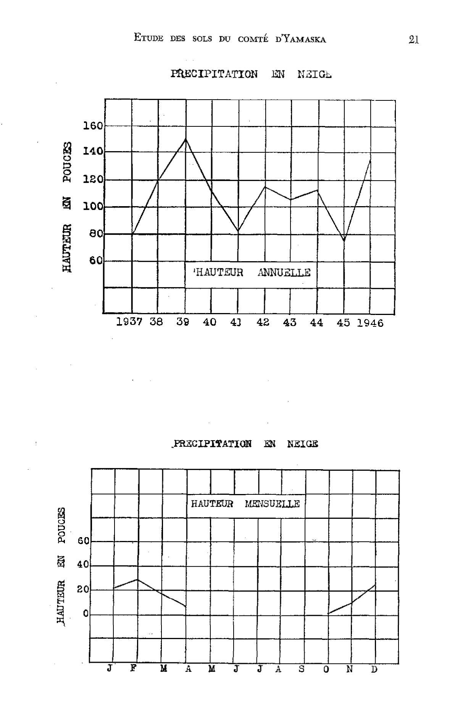
PRÉCIPITATION EN NEIGE
Hauteur mensuelle
Agriculture et Agroalimentaire Canada (SISCan) — Transcription numérique haute fidélité
PROVINCE DE QUÉBEC — MINISTÈRE DE L'AGRICULTURE
d’YAMASKA
par
Léonard Laplante et Lucien Choinière,
agronomes-pédologues
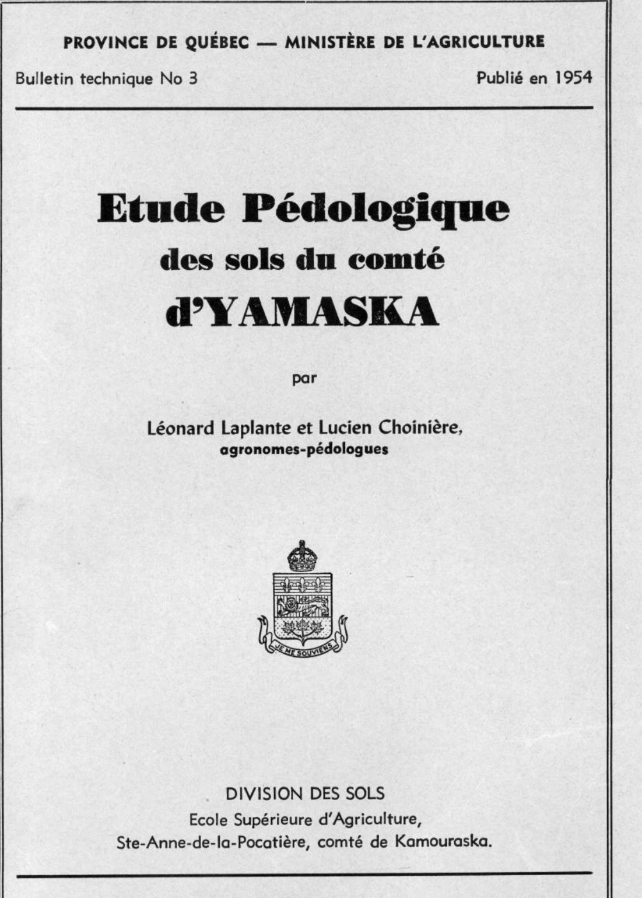
DIVISION DES SOLS
Ecole Supérieure d'Agriculture,
Ste-Anne-de-la-Pocatière, comté de Kamouraska.
Publié par ordre de l'Honorable Laurent Barré, Ministre de l'Agriculture,
avec la collaboration de
l'Honorable Paul Beaulieu, c.a., Ministre de l'Industrie et du Commerce,
Québec, Canada.
PROVINCE DE QUÉBEC — MINISTÈRE DE L’AGRICULTURE
| Bulletin technique No 3 | Publié en 1954 |
des sols du comtéd'YAMASKA
par
Léonard Laplante et Lucien Choinière,
agronomes-pédologues
DIVISION DES SOLS
Ecole Supérieure d’Agriculture,
Ste-Anne-de-la-Pocatière, comté de Kamouraska.
Publié par ordre de l’Honorable Laurent Barré, Ministre de l’Agriculture,
avec la collaboration de
l'Honorable Paul Beaulieu, c.a., Ministre de l’Industrie et du Commerce,
Québec, Canada.
Cette publication est une contribution
de la
AUGUSTE SCOTT, agronome
Chef
Service de la Grande Culture
André Auger, agronome
Directeur
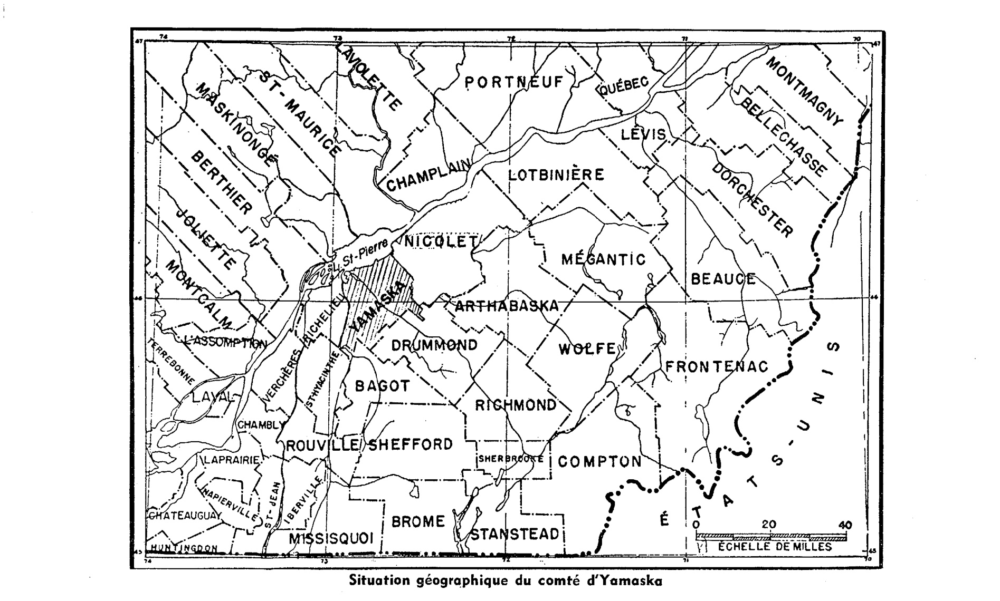
L'étude systématique et la cartographie des sols du comté d'Yamaska débutèrent en juin 1945 pour se terminer au mois d'octobre 1946.
Deux équipes, dirigées par les auteurs de ces lignes, se partagèrent la classification et la cartographie des sols du comté d'Yamaska; l'équipe de Lucien Choinière à l'est de la rivière St-François et celle de Léonard Laplante à l'ouest. Ces derniers étaient secondés, dans leur travail, par MM. Ernest Pageau, Albert Alarie et Raymond Tourchot.
Les auteurs de ce rapport remercient tous ceux qui les ont aidés dans l'exécution de ce travail. Nous remercions en particulier M. Auguste Scott, chef de la Division des Sols, depuis 1945, pour sa bienveillante direction; nos confrères pédologues pour leurs critiques constructives.
Nous remercions aussi Henri-H. Bois, dessinateur à la Division des Sols, d'avoir apporté un nouveau développement dans les méthodes graphiques de montage et de présentation des cartes des sols. La carte des sols du comté d'Yamaska est la première à être présentée sous cette nouvelle forme.
Nos remerciements vont aussi au Ministère du Commerce et de l'Industrie qui a bien voulu se charger de la publication de cette carte des sols.
Les cartes et le rapport du comté d'Yamaska contiennent les informations d'ordre technique et général sur les sols et l'agriculture du comté.
Ce rapport, accompagné de la carte des sols, est écrit pour le public en général. Cependant, il s'adresse en particulier aux personnes suivantes :
En quoi un rapport des sols peut-il être utile au cultivateur? Les données fournies par le rapport sur la classification des sols seront la base fondamentale de l'organisation d'un programme d'une ferme. Veut-il acheter une terre? Le rapport lui donnera la valeur et la qualité du sol. Songe-t-il à s'établir dans une région afin d'y pratiquer une culture spéciale? Le rapport lui indiquera si la partie de terre convoitée répond bien à son désir, en lui révélant le genre de culture le mieux adapté. Est-il obligé de changer son mode d'exploitation? L'agronome, se basant sur les données du rapport, pourra situer la ferme en question et étudier les types de sols qui la composent. Il lui sera alors facile de voir le point faible de cette ferme : manque d'éléments fertilisants, mauvaises conditions physiques du sol, inadaptation des plantes, cultures inappropriées aux conditions du marché, drainage défectueux, etc.
C'est encore ce rapport qui rendra possible l'orientation des recherches sur les différents types de sols, en vue d'établir une échelle de fertilité et de permettre l'usage d'engrais organiques et inorganiques en qualité et en quantité appropriées à chaque sol et à chaque plante déterminée.
Une classification des sols a aussi son utilité au point de vue national. Cette étude, en donnant un aperçu détaillé des conditions du sol, constitue un inventaire des ressources du comté. Sur les cartes accompagnant le rapport, nous trouvons les types de sol, les cours d'eau, les chemins de fer, les routes nationales et cantonales, les formations géologiques, etc. Ce rapport peut venir en aide aux ingénieurs civils pour la confection de nouvelles routes, en leur fournissant la nature du terrain et en leur indiquant l'endroit des matérioux, comme le gravier, devant servir à la construction de ces routes.
Les industriels qui dépendent directement du sol y trouveront des renseignements précieux à leur réussite.
Les banques, les Caisses populaires et l'Office du Crédit Agricole trouveront dans ce rapport de précieux renseignements, lorsqu'ils seront invités à consentir des prêts aux cultivateurs.
Les municipalités devraient s'en servir pour l'établissement du rôle d'évaluation.
Une classification des sols est de toute première importance dans le domaine de la colonisation. Continuerons-nous à défricher des terres qui conviendraient davantage à la forêt ?
De plus, le rapport donnera des indications sur les voies de communication par terre et par eau, les marchés et les conditions sociales de la région, le climat, la topographie, la population, le drainage, etc. L'analyse des sols donnera des renseignements sur leurs propriétés physiques et leur composition chimique.
Le professeur et l'étudiant en pédologie trouveront un intérêt tout spécial dans les chapitres intitulés "Morphologie et Genèse des Sols", "Description des Sols", "Erosion", "Agriculture".
La classification des sols est un travail fondamental. Pourquoi le cultivateur n'en connaîtrait-il pas aussi long sur son sol que ses animaux, etc.? Si le développement et la prospérité dépendent du sol, il faut absolument le connaître.
Au point de vue géographique et économique le comté d'Yamaska fait partie de la "Plaine des Trois-Rivières". Situé sur la rive sud du St-Laurent, le comté est borné au nord-est par le comté de Nicolet, au sud-est partie par le comté de Drummond et partie par le comté de Bagot, au sud-ouest partie
par le comté de Bogot et partie par le comté de Richelieu et au nord-ouest par le Lac St-Pierre. Il est compris entre les longitudes 72° et 73° et les latitudes 45° et 47° (Carte I).
Le comté couvre une superficie de 365 milles carrés, soit 233,600 acres. De ce total, 90.0% est actuellement en état d'exploitation agricole, ce qui représente environ 210,240 acres.
En jetant un coup d'oeil sur la carte du cadastre du comté d'Yamaska (1938), nous voyons les noms des anciennes seigneuries suivantes : Yamaska, St-François, Bourgmarie-est, Guire, Pierreville comprenant la réserve des Abénakis, Lalussaudière, Baie St-Antoine et Courval; des cantons Upton et Wendover.
La division ecclésiastique du comté d'Yomoska * comprend 14 paroisses.
D'après le tableau I, basé sur les annuaires statistiques de la province de Québec, le comté d'Yamaska possède une population approximative de 16,500 âmes, en grande majorité d'origine française. En 1941, la population rurale représentait 76.6% de la population totale du comté, soit environ 45 personnes par mille carré de la terre exploitée.
TABLEAU I — POPULATION RURALE
| 1921 | 1931 | 1941 | |
|---|---|---|---|
| Population totale ............................ | 18,056 | 16,820 | 16,516 |
| Population par mille carré | 47.92 | 46.08 | 45.25 |
| Population rurale ............................ | 13,839 | 12,740 | 12,647 |
| (%) | 76.64 | 75.74 | 76.57 |
Références : 6ème recensement du Canada — 1921
7ème “ “ — 1931
8ème “ “ — 1941
* Yamaska : mot d'origine indienne signifiant “il y a des jones ou du foin au large”.
TABLEAU II — POPULATION, ORIGINE ETHNIQUE, RELIGION
| POPULATION | RELIGION | |||||||||
|---|---|---|---|---|---|---|---|---|---|---|
| Totale | Anglaise | Irlandaise | Ecossaise | Française | Indienne | Autres races | Catholiques | Autres | ||
| 1861 (1) | 16045 | 3 | 22 | 3 | 15601 | 271 | 145 | 15896 | 149 | |
| 1871 (2) | 16317 | 136 | 39 | 23 | 15800 | 225 | 94 | 16160 | 157 | |
| 1881 (2) | 17091 | 92 | 5 | 12 | 16568 | 301 | 83 | 16950 | 141 | |
| 1891 (3) | 16058 | ... | ... | ... | ... | ... | ... | 15974 | 84 | |
| 1801 (4) | 16204 | 40 | 29 | 1 | 15767 | 277 | 90 | 16106 | 98 | |
| 1911 | 19511 | 30 | 19 | 14 | 19059 | 330 | 59 | 19415 | 96 | |
| 1921 | 18056 | 18 | 15 | 3 | 17787 | 222 | 11 | 18003 | 53 | |
| 1931 | 16820 | 34 | 8 | 17 | 16521 | 212 | 28 | 16770 | 50 | |
| 1941 | 16516 | 95 | 49 | 26 | 16078 | 204 | 64 | 16477 | 39 | |
(1) Sauf: La Visitation, St-Bonaventure, St-Elphège, St-Gérard, St-Guillaume, St-Joachim, St-Pie de Guire.
(2) Sauf: La Visitation, St-Bonaventure, St-Elphège, St-Gérard, St-Guillaume, St-Joachim.
(3) Sauf: La Visitation, St-Bonaventure, St-Gérard, St-Guillaume, St-Joachim.
(4) Sauf: St-Bonaventure, St-Gérard, St-Guillaume, St-Joachim.
Références : Recensement du Canada — 1861
| 1er | recensement du Canada | — 1871 |
| 2ème | “ “ “ | — 1881 |
| 3ème | “ “ “ | — 1891 |
| 4ème | “ “ “ | — 1901 |
| 5ème | “ “ “ | — 1911 |
| 6ème | “ “ “ | — 1921 |
| 7ème | “ “ “ | — 1931 |
| 8ème | “ “ “ | — 1941 |
Les principales voies de transport du comté d'Yamaska sont : les routes, le rail, le lac St-Pierre et les rivières St-François et Yamaska.
Il existe dans le comté d'Yamoska, deux tronçons de notre système routier provincial. La route 3, reliant Yamaska à La Baie et la route 22 reliant Yamaska Est (St-Michel d'Yamaska) à Drummondville. Ces deux routes sont actuellement presqu'entièrement recouvertes d'asphalte. Il existe aussi quelques routes secondaires en gravier mais dans l'ensemble, le système routier n'est pas ce qu'il devrait être.
Le chemin de fer national dessert le comté d'Yamaska à La Baie, tandis que le Canadien Pacifique dessert les paraisses de St-Bonaventure et de St-Guillaume.
Les rivières St-François et Yamaska ne sont pas navigables sur tout leur parcours; le sont-elles tout au plus jusqu'à quelques milles de leurs embouchures et seulement lors des crues du printemps. Le comté d'Yamaska ne possède que 5 postes télégraphiques soit à Yamaska, St-François du Lac, Pierreville, La Baie du Febvre et St-Guillaume. Plusieurs réseaux téléphoniques.
| Nombre de beurreries & de fromageries | Nombre moyen pour la saison de patrons de fabrication | Nombre moyen de vaches qui alimentent les fabriques pour la saison de fabrication | Nombre de livres de produits fabriqués | Valeur en dollars ($) | Prix moyen par livre | |||||||
|---|---|---|---|---|---|---|---|---|---|---|---|---|
| Total | Beurre | Fromage | Combinées | Beurre | Fromage | Beurre | Fromage | Beurre | Fromage | |||
| Comté d'Yamaska | ||||||||||||
| 1920 | 61 | …… | 31 | 30 | 1962 | 13168 | 195394 | 4210908 | 99738. | 1125336. | .50 | .251 |
| 1930 | 45 | 2 | 25 | 18 | 1413 | 12420 | 524082 | 2491910 | 150588. | 363436. | .286 | .144 |
| 1940 | 34 | 2 | 17 | 15 | 1832 (1) | 17529 (2) | 373141 | 3339946 | 221142. | 458702. | .253 | .137 |
| Province de Québec | ||||||||||||
| 1920 | 1808 | 634 | 813 | 361 | 77946 | 577978 | 26703074 | 52162777 | 38510386. | 13372250. | .556 | .256 |
| 1930 | 1356 | 642 | 471 | 243 | 80279 | 601386 | 60746665 | 34059680 | 17851545. | 5106866. | .314 | .152 |
| 1940 | 1120 | 604 | 317 | 199 | 89743 (1) | 759655 (2) | 74084973 | 35641942 | 18153333. | 4926014. | .245 | .138 |
(1) Nombre de patrons au 1er juillet
(2) Nombre de vaches au 1er juillet
Références: Annuaire Statistique de Québec — 1921
— 1931
— 1941
ques indépendants, propriétés de sociétés locales ou de la compagnie de téléphone Bell, permettent aux habitants du comté de communiquer facilement entre eux et avec les gens de l'extérieur.
L'électricité est fournie à travers le comté par deux compagnies. La Southern Canoda Power dessert les paroisses suivantes : St-Guillaume, St-Bonaventure et St-David, tandis que la Shawinigan Water & Power Co. vend ses services aux autres paroisses du comté.
Les cultivateurs du comté d'Yamaska sont obligés de vendre le surplus de leurs produits à l'extérieur. Les maraîchers vont aux marchés de Trois-Rivières, de Drummondville et de Sorel.
Le lait et la crème sont transformés en fromage et en beurre dans les fabriques locales.
Les animaux vivants sont surtout dirigés vers le marché de Montréal, tandis que les animaux abattus sont vendus aux marchands de gros de Trois-Rivières et de Montréal.
Le comté est essentiellement agricole. Aussi faut-il des industries pour la transformation de plusieurs produits de la ferme avant de les offrir en vente sur les marchés. Il existe, dans le comté, 34 fabriques de beurre et de fromage dont la production fut, pour l'année 1947, de 1,380,549 livres de beurre qui ont rapporté $727,263.00 et de 1,700,663 livres de fromage avec un rapport de $423,345.00.
Le comté compte un abattoir à St-Guillaume, une usine d'embouteillage d'eaux minérales (eau minérale Abénakis) à St-François du Lac, une fabrique de blocs de ciment également à St-François du Lac, une exploitation de tourbe à St-Bonaventure, une petite manufacture d'instruments de musique à St-Guillaume, 7 scieries.
En 1940 les 9 établissements industriels du comté d'Yamaska avec un capital de $164,276.00 donnent du travail à 64 employés et leur servent un salaire de $32,746.00. La valeur des matières premières employées est de $74,420.00 et la valeur brute de la production s'élève à $150,824.00.
TABLEAU IV — STATISTIQUES MANUFACTURIÈRES
| Centre | Etablissements (nombre) |
Capital ($) |
Employés (nombre) |
Salaires | Combustible & Electricité |
Coût des matières premières ($) |
Valeur brute ($) |
|---|---|---|---|---|---|---|---|
| 1930 | |||||||
| Pierreville | 12 | 59988. | 56 | 15958. | — | 45115. | 80716. |
| St-François du Lac | 8 | 31121. | 10 | 4460. | — | 42559. | 54154. |
| 1940 | |||||||
| Pierreville | 6 | 147326. | 46 | 26597. | 3033. | 60616. | 127371. |
| St-François du Lac | 3 | 16950. | 18 | 6149. | 98. | 13804. | 23453. |
| — | — | — | — | — | — | ||
| 164276. | 64 | 32746. | 74420 | 150824. | |||
En étudiant les provinces physiographiques de la province de Québec, on constate que le comté de Nicolet entre dans la province dite “Terres basses du Saint-Laurent”, qui correspond aussi à la province géologique du même nom. Si nous nous basons sur la géographie régionale pour situer ce comté, ce dernier se cadrera partie dans la région naturelle appelée “Plaine des Trois-Rivières” et l'autre partie dite “Plaine de Montréal”, la rivière Yamaska servant de ligne de séparation.
Le comté d'Yamaska, dans san ensemble, est une vaste plate-forme inférieure à 250 pieds d'altitude. Il n'y existe aucune montagne, aucune colline. Prenant le fleuve comme niveau de base, le comté atteint graduellement son plus haut point dans la partie extrême sud du comté.
Les coulées et les ravins profonds, droits ou sinueux, aux versants abrupts ou arrondis, attirent l'attention du voyageur. C'est tantôt le rebord d'une rivière assez considérable, comme la St-François, l'Yamaska; tantôt un lit profond où coule paresseusement un petit ruisseau onduleux et endormi, ne sortant de sa léthargie qu'à la saison de la fonte des neiges et aux périodes des pluies diluviennes. Ces coulées et ces ravins se rencontrent tout particulièrement à St-Bonaventure, St-Pie de Guire, St-Guillaume, St-David, St-François du Lac, La Baie du Febvre et La Visitation.
ETUDE DES SOLS DU COMTÉ D'YAMASKA
“Mais dans l'ensemble, ce qui nous frappe c'est la grande régularité de la surface plane. Les rivières, d'autre part, sont très peu enfoncées au-dessous de la surface. Donc il s'agit bien d'une plate-forme très régulière s'élevant du fleuve avec une lenteur désespérante, une allure si peu accentuée que sur le terrain, la pente est vraiment insensible. Nous relevons les niveaux de 175 pieds au Sud de St-Zéphirin, 153 vers St-Bonaventure, 103 au Sud de St-David, 138 à l'arrière de St-Guillaume d'Upton, 92 à St-Gérard.”
Voyons maintenant ce qu'ajoute Raoul Blanchard à ce sujet. “Le sol est foit de dépôts récents masquant presque partout l'architecture profonde. La roche en place apparaît très rarement à la surface et presque uniquement dans les petites rainures d'érosion dues aux rivières; encore n'est-ce pas partout le cas. Ce qui donne donc à la plate-forme sa surface si régulière, ce sont tantôt des placages morainiques semés de gros blocs, tantôt des cauches d'argile marine déposées par la mer Champlain après le départ des glaciers, tantôt des sables de même origine. Pour comprendre l'origine et la signification morphologique de la plate-forme, il faut essayer de débarrasser de son manteau de dépôts récents et observer l'allure de la surface rocheuse qu'ils recouvrent.”
Les profils de cette surface que Raoul Blanchard a réussi à tracer, grâce aux sandages effectués pour la recherche du gaz naturel et de l'eau potable, montrent que “la surface rocheuse tend à devenir concave, à se creuser aux abords du fleuve. Sur la rive droite du fleuve, la pente se raidit dans cette direction, comme si la surface avait été labourée aux abords du Saint-Laurent par un agent d'érosion. D'autre part, un phénomène d'une ampleur plus considérable encore se trouve mis en lumière, la présence d'une énorme excavation crevant, vers l'amont, la surface de la plate-forme, sur l'emplacement du lac Saint-Pierre.”
Si l'on examine ottentivement la technique de la plate-forme, on s'aperçoit que sa complexité est inconciliable avec l'hypothèse d'un simple affaissement et qu'il faut faire intervenir l'idée d'érosion récente. “Impossible de penser que la surface topographique est conforme à la structure. La surface tranche avec la même indifférence les dépôts faiblement inclinés du bord nord du synclinal, les affleurements redressés de son rebord méridional, les couches violemment redressées vers le nord des séries qui apparaissent au sud de la faille Champlain. Celle-ci (accident géographique si vigoureux) n'apparaît nulle part dans le paysage; c'est uniquement par quelques affleurements révélés dans le lit des rivières qu'on a pu déceler son passage sur le Saint-François un peu en aval de Drummondville, sur une branche de l'Yamaska près d'Upton.
Sur l'emplacement où les dépôts primaires ont été conservés à la faveur d'un affaissement très ancien, une action érosive a aplani une surface rocheuse dont la régularité est attestée par le profil longitudinal N.-E.--S.-O.” Quel est l'agent? “Un réseau fluvial, un grand fleuve et ses affluents arrivés au stade d'extrême maturité, ou un organisme glaciaire élargissant quelque rainure fluviale”, répond R. Blanchard. “Cette plate-forme, nous la croyons récente. La vraie preuve à évoquer est le remarquable état de conservation de sa surface rocheuse. Très peu de saillies, très peu de creux, sauf au lac Saint-Pierre.”
Après avoir expliqué l'inclinaison de la plate-forme vers le S.-O., R. Blanchard montre comment s'est formée la crypto-dépression du lac Saint-Pierre. “Le lac-Saint-Pierre est la curieuse dilatation qui affecte le fleuve en aval de Montréal. Au delà de Lanoraie, le Saint-Laurent, dont la largeur était alors en moyenne de ¾ de mille, s'élargit assez brusquement en un
dédale de bras et d'îles, embrassant une étendue de 6.5 milles, auquel succède une vaste nappe d'eau, dont les plus grandes dimensions sont de 17 milles sur 8.7. Au delà, tout rentre dans l'ordre, et la largeur du lit fluvial se réduit de nouveau à 1 mille à l'amont de Trois-Rivières. Cette vaste dilatation va de pair avec la faible profondeur de la nappe. Dans le lac, la sonde ne donne plus de 10 pieds que dans la partie N.-E., et vers le S.-O., on trouve couramment 4.3 et même 2 ou 1 pieds d'eau. La présence de cette large nappe sans profondeur est l'énigme aui se pose avec le plus d'insistance à qui veut s'expliquer les traits physiques de cette région.
“Or l'examen des sondages et des affleurements de roche en place nous a révélé sans contestation possible l'existence, sous l'emplacement du lac Saint-Pierre, d'une très profonde cavité évantrant la plate-forme de Québec, et poussée bien au-dessous du niveau de la mer, ce qui permet de l'appeler une cryptodépression. La roche n'a été à Nicolet qu'à 40 pieds, à Yamaska qu'à 130, à Berthier à 555, à Louiseville à 118. A l'aval comme à l'amont, la roche en place reparaît au-dessus du niveau de la mer, indiquant qu'il s'agit d'une dépression fermée, orientée N.-E.-S.-O., du voisinage de Trois-Rivières à l'amont de Verchères.”
“L'affaissement qui a jadis dénivelé les couches primaire par rapport à la masse précambrienne a atteint son maximum sur l'emplacement de la cryptodépression. Le sondage de Saint-Gérard d'Yamaska, effectué en 1932, a traversé le primaire sur 6,100 pieds. Or, vers Montréal et Québec, l'épaisseur des dépôts primaires n'est guère estimée à plus de 2,000 pieds. La cryptodépression a taillé à travers des couches qu'elle n'a pas dérangées. Dès lors, puisqu'elle ne s'est pas enfoncée d'elle-même, c'est qu'elle a été creusée.”
“Ce travail de creusement par les glaciers a été facilité par la présence, sur l'emplacement de la cavité, de roches très tendres, les schistes extrêmement friables des séries Lorraine et Utica. Il s'agit donc d'un ombilic excavé en roches tendres, vers l'extrémité inférieure de la dénivellation produite par le gouchissement de la plate-forme de Québec, ombilic dont le lac Saint-Pierre est le dernier écho.”
“Ces traits morphologiques ne peuvent être post-glaciaires. Ils n'ont rien à faire avec les mouvements du sol qui ont expulsé la mer Champlain du bassin du Saint-Laurent.”
“L'agent d'érosion ne pouvant être la mer, vu l'absence de falaises bordières, doit être mis au compte de l'eau courante ou d'une ablation glaciaire. Mais vu que l'influence de l'affouillement glaciaire est postérieure à la mise en place de la plate-forme, c'est vraisemblablement l'érosion effectuée par le Saint-Laurent préglaciaire et ses affluents qui doit être tenue pour responsable de la création de la plate-forme.”
“La surface rocheuse de la plateforme de Québec est toute motelassée de dépôts récents, accumulations d'origine glaciaire, argiles et sables déposés par la mer Champlain. L'épaisseur de ces dépôts est très variable. Elle est fort considérable au Sud-Ouest, sur l'emplacement de l'ombilic du lac Saint-Pierre (200 à 591 pieds dans les sondages au bord du lac).”
“Dans cette mer se sont déposés des argiles et des sables. Les premières sont des couches de glaise dont la couleur varie du bleu au brun, passant au gris vers la surface. Elle représente en tout le plus ancien dépôt formé par la mer Champlain, car très souvent les sobles la recouvrent.”
“C'est dans le Sud-Ouest de la plate-forme, région basse où les eaux ont subsisté plus longtemps et persistent même encore (lac Saint-Pierre), région
qui, d'autre part, n'était pas dominée par des reliefs aussi accentués que ceux des rebords du Nord-Est, que les étendues d'argile sont les plus vastes à la surface du sol. Là se déroulent, de chaque côté du lac Saint-Pierre, ces magnifiques basses plates-formes des comté d'Yamaska, de Nicolet au Sud, etc. Dans Yamaska et en arrière, la terre forte pénètre sur près de 18 milles. Les dépôts sableux le long des rivières manquent d'extension parce que la pente de ces cours d'eau était trop faible pour permettre des transports abondants de matériaux grossiers. Le long de la rivière Yamoska, la répartition du sable est irrégulière et ne correspond pas tout au long au tracé actuel du cours d'eau, et qui peut faire croire que celui-ci s'est déplacé sur la plage découverte par le retrait de la mer Champlain. Enfin tout autour du lac Saint-Pierre, c'est encore de l'argile qui forme le sol mais plus mélangée de sable, donnant une terre plus franche (limon) ; il s'agit évidemment de dépôts plus récents formés dans le lac héritier de la mer disparue.
L'étude et la classification des climats régionaux demandent comme base un réseau étendu de stations météorologiques et des observations précises et constantes durant une longue période d'années sur tous les phénomènes atmosphériques d'importance climatologique.
Le réseau météorologique de la province de Québec ne couvre à peu près toutes les régions habitées que depuis quelques années. Avant 1936, à cause de la défectuosité de certains appareils et de la visite trop rare des inspecteurs aux stations météorologiques, les observations n'étaient pas toujours en mesure de fournir des données climatologiques exactes. De plus, on a longtemps considéré que les données sur la précipitation et la température de l'air étaient suffisantes pour faire une étude du climat.
Malgré tout le travail accompli par le Bureau de Météorologie depuis dix ans, il reste encore beaucoup à faire dans ce domaine. Nombre de stations doivent être complétées au point de vue instrumental et plusieurs postes doivent être ajoutés au réseau actuel. Cependant il faut rendre hommage aux observateurs qui ont bien voulu se conformer aux instructions du Bureau de Météorologie et recueillir de la sorte des données climatiques régulières, précises et détaillées.
Il n'y a pas de station météorologique dans le comté d'Yomaska. La station météorologique de Nicolet répondant très bien aux exigences climatiques du comté d'Yamoska, on a cru bon d'inclure dans ce rapport les données de cette station située aux frontières des comtés de Nicolet et d'Yamaska.
La station météorologique de Nicolet est dirigée par le Séminaire de Nicolet depuis de nombreuses années et l'abbé Viger Lefebvre en est actuellement l'observateur. Sa situation exacte est donnée par la latitude nord 46°15', la longitude ouest 72°36' et une altitude de 74 pieds au-dessus du niveau de la mer.
1 Par G. Oscar Villeneuve, Ph.D., directeur du Bureau de Météorologie, Ministère des Terres et Forêts, Québec. Reproduit du rapport du comté de Nicolet.
Les instruments météorologiques consistent en un thermomètre à maxima et un thermomètre à minima, installés tous deux dans un abri thermométrique, et en un pluviomètre placé au sol.
L'observateur ne fait qu'une lecture quotidienne, le matin. Il observe la température minimum du matin, la température maximum de la veille et la hauteur des précipitations tombées depuis la dernière observation.
Comme la station météorologique ne fait pas rapport au Bureau de Météorologie, ce dernier ne possède pas dans ses registres les données quotidiennes recueillies par l'observateur. Il faut donc se contenter ici des données publiées par le Bureau Provincial des Statistiques *. Ces données indiquent la température maximum absolue mensuelle, la température moyenne mensuelle et la hauteur totale des précipitations mensuelles en pluie et en neige. Les tableaux donnés plus bas présentent ces données pour une période de dix ans, c'est-à-dire pour les années 1937 à 1946 inclusivement.
La température maximum absolue est la température maximum quotidienne la plus haute. Le tableau II donne la température maximum absolue mensuelle en degrés Fahrenheit pour dix années consécutives. Les moyennes mensuelles présentent un maximum en juillet avec 89°9 et un minimum en janvier avec 40°4. La valeur moyenne annuelle est de 67°2 tandis que la plus haute et la plus basse valeur de cet élément climatique sont de 94° et de 33°, respectivement en juin ou en août et en janvier.
La valeur moyenne annuelle de la température maximum absolue présente une courbe qui a son point le plus élevé en 1945 avec 69°4 et son point le plus bas en 1940 avec 64°.
La température minimum absolue est la température minimum quotidienne la plus basse. Le tableau III donne la température minimum absolue mensuelle en degrés Fahrenheit pour dix années consécutives. Les moyennes mensuelles présentent un maximum en juillet avec 45°5 et un minimum en janvier avec 21°7. La valeur moyenne annuelle est de 14°9, tandis que la plus haute et la plus basse valeur de cet élément climatique sont de 53° et de 45°, respectivement en juillet ou en août et en janvier.
La valeur moyenne annuelle de la température minimum absolue présente une courbe qui a son point le plus élevé en 1937 avec 17°8 et son point le plus bas en 1943 avec 9°1.
* "Bulletin Météorologique", Bureau des Statistiques, Ministère de l'Industrie et du Commerce, Québec.
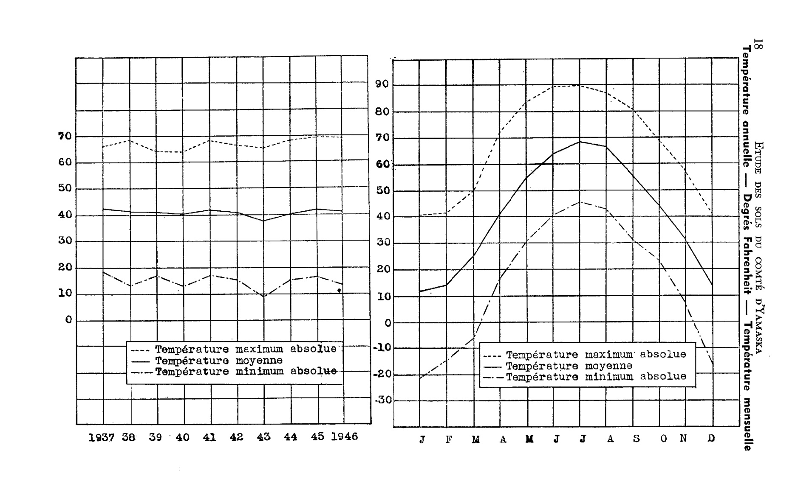
La température moyenne mensuelle est la valeur moyenne des températures moyennes quotidiennes. Le tableau IV donne la température moyenne mensuelle en degrés Fahrenheit pour dix années consécutives. Les moyennes mensuelles présentent un maximum en juillet avec 68°7 et un minimum en janvier avec 11°3. La valeur moyenne annuelle est de 41°2 tandis que la plus haute et la plus basse valeur de cet élément climatique sont de 70°8 et de 7°, respectivement en juillet et en janvier.
La valeur moyenne annuelle de la température moyenne présente une courbe qui a son point le plus élevé en 1945 avec 42°5 et son point le plus bas en 1943 avec 38°3.
La précipitation totale comprend toute précipitation sous forme de pluie ou de neige. La hauteur de chaque chute de neige divisée arbitrairement par le chiffre 10 est considérée comme son équivalent en eau ou en pluie. Le tableau V donne la précipitation totale mensuelle en pouces et centièmes de pouce pour dix années consécutives. Les moyennes mensuelles présentent un maximum en septembre avec 4.04 pouces et un minimum en mars avec 2.60 pouces. La valeur moyenne annuelle est de 41.3 pouces, tandis que la plus haute et la plus basse valeur mensuelle de cet élément climatique sont de 9.72 et de 0.82 pouces, respectivement en août et en octobre.
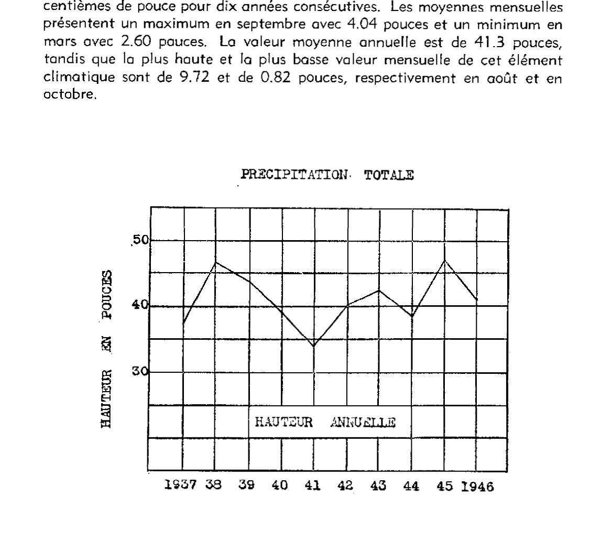
La hauteur annuelle moyenne des précipitations présente une courbe qui a son paint le plus élevé en 1945 avec 47,8 pouces et son point le plus bas en 1941 avec 34.4 pouces.
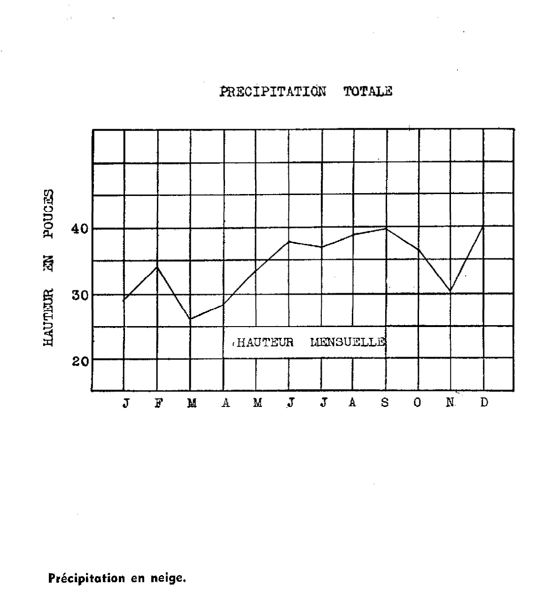
La précipitation en neige consiste dans la hauteur totale des chutes de neige. Le tableau VI donne la hauteur mensuelle des chutes de neige en pouces et dixièmes de pouce pour dix années consécutives. Les moyennes mensuelles présentent un maximum en février avec 29.6 pouces, tandis que la valeur moyenne annuelle est de 109.4 pouces.
La plus haute chute de neige a eu lieu en février 1939, alors qu'il est tombé 80 pouces. L'année 1939 accuse également la plus forte chute annuelle, totalisant une hauteur de 151.1 pouces.

Tableau II
Observation: Température maximum absolue — Station Nicolet
| ANNÉES | MOIS | Moyenne | |||||||||||
|---|---|---|---|---|---|---|---|---|---|---|---|---|---|
| Janvier | Février | Mars | Avril | Mai | Juin | Juillet | Août | Septembre | Octobre | Novembre | Décembre | ||
| 1937 | 45 | 42 | 40 | 75 | 88 | 85 | 90 | 88 | 88 | 74 | 51 | 34 | 66.6 |
| 1938 | 43 | 37 | 49 | 78 | 78 | 91 | 89 | 92 | 72 | 78 | 72 | 44 | 68.6 |
| 1939 | 40 | 40 | 41 | 55 | 83 | 87 | 91 | 86 | 88 | 68 | 50 | 47 | 64.7 |
| 1940 | 34 | 35 | 47 | 69 | 80 | 82 | 88 | 90 | 76 | 72 | 57 | 38 | 64.0 |
| 1941 | 33 | 37 | 48 | 82 | 86 | 93 | 93 | 83 | 80 | 65 | 58 | 58 | 68.0 |
| 1942 | 40 | 41 | 47 | 81 | 82 | 91 | 85 | 85 | 85 | 67 | 60 | 40 | 67.0 |
| 1943 | 47 | 43 | 45 | 61 | 79 | 88 | 91 | 85 | 83 | 68 | 54 | 43 | 65.6 |
| 1944 | 40 | 46 | 47 | 70 | 89 | 92 | 93 | 94 | 78 | 71 | 65 | 38 | 68.6 |
| 1945 | 36 | 41 | 65 | 81 | 85 | 90 | 88 | 87 | 88 | 70 | 64 | 38 | 69.4 |
| 1946 | 46 | 44 | 60 | 68 | 78 | 94 | 91 | 89 | 81 | 77 | 53 | 50 | 69.3 |
| Moyenne | 40.4 | 40.6 | 48.9 | 72.0 | 82.8 | 89.3 | 89.9 | 87.9 | 81.9 | 71.0 | 58.4 | 43.0 | 67.2 |
Tableau III
Observation : Température minimum absolue — Station Nicolet
| ANNÉES | MOIS | Moyenne | |||||||||||
|---|---|---|---|---|---|---|---|---|---|---|---|---|---|
| Janvier | Février | Mars | Avril | Mai | Juin | Juillet | Août | Septembre | Octobre | Novembre | Décembre | ||
| 1937 | - 14 | - 9 | - 12 | 11 | 34 | 47 | 53 | 49 | 32 | 23 | 16 | - 16 | 17.8 |
| 1938 | - 45 | - 17 | - 24 | 17 | 41 | 45 | 46 | 48 | 34 | 28 | 6 | - 14 | 13.7 |
| 1939 | - 17 | - 11 | - 12 | 14 | 30 | 43 | 46 | 53 | 31 | 25 | 11 | - 10 | 16.9 |
| 1940 | - 16 | - 15 | - 16 | 15 | 32 | 42 | 46 | 39 | 32 | 22 | - 7 | - 18 | 13.0 |
| 1941 | - 20 | - 11 | 0 | 21 | 29 | 44 | 52 | 41 | 30 | 20 | 9 | - 9 | 17.2 |
| 1942 | - 23 | - 18 | 11 | 22 | 36 | 40 | 34 | 42 | 30 | 28 | 13 | - 25 | 15.8 |
| 1943 | - 21 | - 26 | - 22 | 5 | 19 | 29 | 40 | 38 | 34 | 27 | 10 | - 24 | 9.1 |
| 1944 | - 14 | - 20 | - 8 | 15 | 24 | 40 | 48 | 46 | 32 | 24 | 17 | - 22 | 15.2 |
| 1945 | - 27 | - 5 | 1 | 22 | 31 | 35 | 48 | 41 | 31 | 27 | 10 | - 10 | 17.0 |
| 1946 | - 20 | - 20 | 4 | 13 | 24 | 35 | 42 | 41 | 35 | 25 | 6 | - 17 | 14.0 |
| Moyenne | - 21.7 | - 15.2 | 7.8 | 15.5 | 30.0 | 40.0 | 45.5 | 43.8 | 32.1 | 24.9 | 9.1 | - 16.5 | 14.9 |
Tableau IV
ÉTUDES CLIMATOLOGIQUES
Observation: Température moyenne — Station Nicolet
| ANNÉES | MOIS | Moyenne | |||||||||||
|---|---|---|---|---|---|---|---|---|---|---|---|---|---|
| Janvier | Février | Mars | Avril | Mai | Juin | Juillet | Août | Septembre | Octobre | Novembre | Décembre | ||
| 1937 | 18.7 | 16.6 | 17.4 | 41.7 | 56.7 | 64.8 | 70.1 | 70.6 | 57.3 | 44.4 | 33.2 | 16.3 | 42.3 |
| 1938 | 7.0 | 12.7 | 22.3 | 42.1 | 54.3 | 65.8 | 68.7 | 69.2 | 55.0 | 48.2 | 34.9 | 19.4 | 41.6 |
| 1939 | 12.8 | 13.5 | 21.0 | 35.9 | 53.1 | 64.6 | 70.4 | 70.8 | 56.7 | 45.3 | 30.5 | 18.3 | 41.1 |
| 1940 | 9.0 | 10.8 | 21.8 | 36.6 | 53.6 | 61.8 | 68.7 | 67.6 | 58.2 | 42.8 | 31.2 | 16.4 | 39.9 |
| 1941 | 10.9 | 15.5 | 21.4 | 47.1 | 55.5 | 65.3 | 70.8 | 63.3 | 56.2 | 45.1 | 32.5 | 20.1 | 41.9 |
| 1942 | 9.7 | 12.5 | 29.6 | 42.0 | 57.7 | 64.9 | 65.7 | 65.2 | 57.6 | 47.0 | 32.4 | 14.1 | 41.5 |
| 1943 | 6.1 | 13.4 | 20.3 | 31.9 | 51.3 | 62.5 | 67.6 | 62.6 | 54.6 | 46.5 | 34.0 | 9.2 | 38.3 |
| 1944 | 14.8 | 11.2 | 21.1 | 37.3 | 55.3 | 61.7 | 69.4 | 69.8 | 58.7 | 44.4 | 34.8 | 9.2 | 40.6 |
| 1945 | 11.2 | 17.1 | 32.7 | 46.6 | 51.1 | 63.3 | 69.1 | 67.5 | 59.0 | 43.7 | 33.3 | 15.5 | 42.5 |
| 1946 | 12.8 | 8.5 | 34.0 | 40.5 | 52.5 | 63.0 | 67.3 | 64.6 | 60.1 | 47.8 | 33.8 | 19.1 | 42.0 |
| Moyenne | 11.3 | 13.1 | 24.1 | 40.1 | 54.1 | 63.7 | 68.7 | 67.1 | 57.3 | 45.5 | 33.0 | 15.7 | 41.2 |
Tableau V
Observation: Précipitation totale — Station Nicolet
| ANNÉES | MOIS | Moyenne | |||||||||||
|---|---|---|---|---|---|---|---|---|---|---|---|---|---|
| Janvier | Février | Mars | Avril | Mai | Juin | Juillet | Août | Septembre | Octobre | Novembre | Décembre | ||
| 1937 | 2.73 | 3.29 | 2.00 | 2.47 | 3.19 | 3.19 | 4.07 | 2.91 | 2.07 | 6.05 | 2.63 | 3.11 | 37.7 |
| 1938 | 3.43 | 3.33 | 2.51 | 2.96 | 2.90 | 4.04 | 3.30 | 9.72 | 5.43 | 0.82 | 2.07 | 6.76 | 47.2 |
| 1939 | 2.36 | 8.40 | 2.90 | 3.08 | 2.56 | 3.82 | 5.75 | 3.78 | 3.81 | 3.25 | 1.18 | 3.48 | 44.4 |
| 1940 | 3.27 | 1.12 | 4.05 | 2.61 | 3.16 | 7.00 | 2.51 | 1.32 | 3.71 | 2.02 | 4.50 | 4.12 | 39.4 |
| 1941 | 1.83 | 3.02 | 1.75 | 1.34 | 1.56 | 2.94 | 3.86 | 2.26 | 2.10 | 5.97 | 4.32 | 3.49 | 34.4 |
| 1942 | 2.73 | 3.21 | 3.47 | 2.57 | 2.77 | 4.16 | 4.60 | 1.79 | 4.72 | 4.25 | 2.79 | 3.44 | 40.5 |
| 1943 | 1.82 | 3.22 | 3.72 | 3.09 | 3.39 | 6.88 | 2.95 | 6.53 | 1.88 | 4.49 | 3.35 | 1.75 | 43.1 |
| 1944 | 3.36 | 2.37 | 2.03 | 2.25 | 2.15 | 2.87 | 4.05 | 3.58 | 4.76 | 2.12 | 3.29 | 3.99 | 36.8 |
| 1945 | 3.58 | 2.10 | 2.35 | 4.62 | 7.33 | 2.40 | 5.37 | 1.95 | 7.17 | 4.42 | 3.24 | 3.26 | 47.8 |
| 1946 | 3.96 | 4.09 | 1.25 | 2.85 | 4.12 | 0.92 | 1.01 | 5.87 | 4.80 | 3.40 | 2.76 | 6.68 | 41.7 |
| Moyenne | 2.90 | 3.41 | 2.60 | 2.78 | 3.31 | 3.82 | 3.74 | 3.97 | 4.04 | 3.67 | 3.01 | 4.00 | 41.3 |
Tableau VI
ÉTUDES CLIMATOLOGIQUES
Observation : Précipitation en neige — Station Nicolet
| ANNÉES | MOIS | TOTAL | |||||||||||
|---|---|---|---|---|---|---|---|---|---|---|---|---|---|
| Janvier | Février | Mars | Avril | Mai | Juin | Juillet | Août | Septembre | Octobre | Novembre | Décembre | ||
| 1937 | 14.7 | 23.5 | 20.0 | 0.5 | .. | .. | .. | .. | .. | 0.2 | 0.1 | 20.2 | 79.2 |
| 1938 | 21.7 | 27.0 | 15.5 | 6.3 | .. | .. | .. | .. | .. | 12.0 | 37.0 | 119.5 | |
| 1939 | 21.0 | 80.0 | 20.5 | 13.7 | .. | .. | .. | .. | .. | T | 0.5 | 15.4 | 151.1 |
| 1940 | 32.8 | 11.3 | 27.8 | 9.5 | .. | .. | .. | .. | .. | 1.5 | 15.6 | 15.4 | 113.9 |
| 1941 | 18.3 | 25.5 | 14.3 | .. | .. | .. | .. | .. | .. | 0.5 | 8.9 | 15.6 | 83.1 |
| 1942 | 19.7 | 31.0 | 18.6 | 6.2 | .. | .. | .. | .. | .. | 0.5 | 6.6 | 34.4 | 117.0 |
| 1943 | 18.2 | 31.2 | 27.3 | 9.6 | .. | .. | .. | .. | .. | 4.7 | 15.7 | 106.7 | |
| 1944 | 23.0 | 23.7 | 11.1 | 3.0 | .. | .. | .. | .. | .. | 0.2 | 10.7 | 39.9 | 112.6 |
| 1945 | 23.8 | 10.5 | 12.0 | T* | .. | .. | .. | .. | .. | 1.0 | 15.0 | 14.0 | 76.3 |
| 1946 | 35.0 | 32.5 | 4.0 | 6.0 | .. | .. | .. | .. | .. | .. | 8.0 | 49.5 | 135.0 |
| Moyenne | 22.8 | 29.6 | 17.1 | 5.6 | .. | .. | .. | .. | .. | 0.4 | 8.2 | 25.7 | 109.4 |
L'observateur de Nicolet ne fournissant d'autres données que celles étudiées plus haut, il nous est impossible de discuter, par exemple, du nombre de jours avec au sans gelée, du nombre de jours avec telle ou telle nébulosité, de la vitesse moyenne et de la direction dominante du vent, enfin de plusieurs phénomènes intéressant particulièrement l'agriculture de la localité.
Cependant, en se basant sur des études générales sur toute la province, on peut ajouter que la direction dominante du vent est de l'ouest à l'est, que l'humidité relative est relativement plus forte sur les rives du Saint-Laurent qu'à l'intérieur des terres, que les brouillards et les brumes sont aussi plus fréquents sur les rives du fleuve qu'à l'intérieur. Enfin l'amplitude de la température est beaucoup moins grande à Nicolet qu'elle peut l'être aux stations de l'intérieur des terres au situées à une altitude plus élevée.
On peut partager les eaux du comté d'Yamaska en deux grandes catégories : les eaux stagnantes et les eaux courantes.
Les eaux stagnantes comprennent les lacs, les étangs, les mares. Le lac Saint-Pierre est le principal lac du comté d'Yamaska. Il limite ce comté au nord-ouest. Il est aussi tributaire des eaux du même comté. Un seul autre lac dans le comté, le lac Grande Mare. Situé près du lac Saint-Pierre, le lac Grande Mare communique avec celui-ci par la rivière Yamaska. Le lac Grande Mare possède un frère jumeau non encore baptisé (du moins sur les cartes). Ces deux lacs n'ont d'ailleurs aucune importance économique si ce n'est pour la chasse au canard et à l'outarde tout comme les quelques étangs que l'on pourrait y rencontrer.
Il est nécessaire de mettre d'abord en lumière que le lac Saint-Pierre n'est pas une simple dilatation du fleuve, comme on serait tenté de le croire à première vue. C'est bel et bien un lac indépendant, que le fleuve n'a pas creusé, qui existerait si le Saint-Laurent n'y débouchait pas. Le fleuve est venu se jeter ici dans un lac préexistant. Le lac Saint-Pierre est le dernier de la rangée des grands lacs du bassin du Saint-Laurent. Le rôle du fleuve est donc ici de combler le lac, d'achever l'oeuvre de la mer Champlain qui a amoncelé à cet emplacement de si fortes épaisseurs de dépôts; il travaille à la disparition du lac, et non à sa conservation.
A l'amont du lac, nous sommes en présence d'un delta. Des atterrissements se forment, qui deviennent des îles séparées par des bras changeants eux-mêmes en instance de comblement.
Le lac Saint-Pierre dont la largeur moyenne est de 7 à 8 milles est un lac à l'agonie. En négligeant le chenal artificiellement dragué, on ne rencontre que des profondeurs de 9, 8, 7 pieds et moins.
Le bassin du lac Saint-Pierre draine les eaux de la partie avoisinante y compris La Baie du Febvre par une multitude de fossés, de ruisseaux, de cours d'eau verbalisés, etc.
Les ruisseaux et les rivières véhiculent la plus grande partie des eaux courantes du comté.
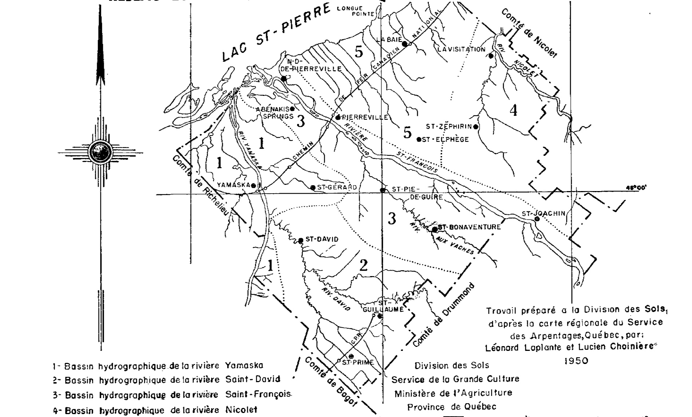
Le réseau hydrographique du comté d'Yamaska (voir carte 2) possède, en général, une forme dendroïde. Les rivières et les ruisseaux s'étalent comme les branches d'un arbre. Un fait à noter est, que dans ce comté, la rivière Saint-François n'a de tributaires naturels que dans sa partie ouest.
TABLEAU X — SUPERFICIE DES BASSINS HYDROGRAPHIQUES DU COMTÉ D'YAMASKA
| BASSINS | Superficie en milles carrés | Pourcentage du comté |
|---|---|---|
| 1 — Rivière Yamaska | 56 | 15.4 |
| 2 — Rivière Saint-David | 78 | 21.3 |
| 3 — Rivière Saint-François | 92 | 25.2 |
| 4 — Petite Rivière Nicolet | 63 | 17.3 |
| 5 — Lac Saint-Pierre | 76 | 20.8 |
| TOTAL | 365 | 100.0 |
Plusieurs bassins hydrographiques composent ce réseau. D'abord les sols du comté couvrent en partie deux des grands bassins fluviaux du sud de la province de Québec : les bassins de la rivière Yamaska et de la rivière Saint-François.
La rivière Yamaska prend sa source dans le comté de Brôme, plus spécifiquement dans les Monts Sutton. Originaire du comté de Brôme, elle traverse les comtés de Missisquoi, de Rouville, de Saint-Hyacinthe et d'Yamaska. Elle passe aux principales villes et villages suivants : West-Brôme, Cowansville, Brigham, Farnham, Saint-Hyacinthe, Saint-Aimé et Yamaska pour enfin se jeter dans le lac Saint-Pierre. Cependant la rivière Yamaska est encore plus importante que le laisse voir la description ci-dessus puisqu'elle possède deux branches : la Yamaska Centre et la Yamaska Nord. La branche Yamaska Centre prend sa source au lac Brôme et dessert les paroisses de West Shefford et d'Adamsville. La branche Yamaska Nord, originaire du lac Waterloo, dessert particulièrement Granby et Saint-Alphonse de Granby. Ces deux branches ont leur confluent entre Adamsville et Magenta. Après cette fusion en une seule rivière, ces deux branches se jettent dans la rivière Yamaska entre Farnham et Magenta. La rivière Yamaska débouche dans le lac Saint-Pierre parmi un fouillis d'îles d'ailleurs rabattues vers l'est par les courants plus puissants du fleuve.
La rivière Saint-François, de beaucoup la plus importante, prend sa source dans le lac Saint-François situé dans le comté de Frontenac. Elle traverse les comtés de Frontenac, de Wolfe, de Compton, de Sherbrooke, de Brompton, de Richmond, de Drummond et d'Yamaska. Voici une description de son parcours : partie du lac Saint-François, elle passe à Disraeli où elle a un tributaire la baie Disraeli; elle alimente elle-même le lac Aylmer, dessert Saint-Gérard et alimente de nouveau le lac Weedon; son cours continue vers Weedon où un autre tributaire, la rivière Salmon, vient la rencontrer, elle passe ensuite non loin de Bishopton pour se diriger vers East-
Angus où elle reçoit les eaux de la rivière Eaton; elle continue sa course plus lente vers Ascot Corner, arrive à Lennoxville où la rivière Massawippi vient s'y jeter et rejoint enfin la reine des Cantons de l'Est, Sherbrooke, pour être favorisée encore des eaux de la rivière Magog. Avec son volume d'eau de plus en plus important, elle se dirige vers Bromptonville, Windsor où la rivière Watopeka vient la rejoindre; elle se dirige ensuite vers Richmond, Melbourne, Ulverton où la rivière du même nom vient la rejoindre; sa marche, plus lente encore, se dirige vers Drummondville et enfin, avant d'arriver à Pierreville et à Saint-François-du-Lac, elle reçoit les eaux de la rivière aux vaches, pour enfin aller terminer ce long parcours dans le lac Saint-Pierre. La rivière Saint-François projette à son embouchure un remarquable delta digité, inscrit à l'amont dans les apports sableux d'un delta plus ancien, très discernable à Notre-Dame de Pierreville ainsi qu'à Abénakis Springs. Les apports conjugués des rivières Saint-François et Yamaska étranglent entre eux une vaste baie vaseuse, presqu'entièrement fermée à l'aval, et où les gens d'Yamaska vont faire des râfles fructueuses de grenouilles. Le contraste est vif entre l'aspect de cette nappe expirante et le spectacle des immenses océaniques qui la sillonnent le long d'un chenal presque rectiligne, troué pour joindre le plus directement possible les profondeurs de l'aval à celles des chenaux digités d'amont.
La rivière Saint-David, la moins importante du comté, capte les eaux d'une partie plus ou moins grande des paroisses de Saint-Guillaume et de Saint-David.
La rivière Nicolet dont une partie passe dans le comté d'Yamaska draine les eaux des paroisses de Saint-Zéphirin et de La Visitation.
Avec un tel réseau hydrographique, le lecteur pourrait conclure que les sols du comté d'Yamaska sont bien drainés. Mais c'est le contraire, à preuve le tableau ci-dessous.
Le tableau XI, compilé d'après la carte du comté, démontre l'existence de 140,411 acres de terrain dont le drainage est imparfait, soit 62% du comté; de 45,860 acres de terre dont le drainage est mauvais au très mauvais, soit 20.3% du comté. Les tourbières et les savanes ne sont point comprises dans ces chiffres qui portent à réfléchir.
TABLEAU XI — DRAINAGE DES SOLS DU COMTÉ D'YAMASKA
| DRAINAGE | Superficie | Pourcentage du comté |
|---|---|---|
| Excessif | 9,312 | 4.1 |
| Bon ou excellent | 11,646 | 5.1 |
| Moyennement bon | 15,420 | 6.9 |
| Imparfait | 140,411 | 62.0 |
| Mauvais | 30,875 | 13.7 |
| Très mauvais | 14,985 | 6.6 |
| Savanes et tourbières | 3,648 | 1.6 |
Les causes de l'inefficacité du drainage des sols d'Yamaska sont multiples et variées. Voici les principales :
Le voyageur qui traverse le comté en regardant un peu dans les grands champs pour voir et comprendre les caprices de la nature, s'aperçoit vite d'un état assez généralisé dans le comté d'Yamaska : les rebords des berges des rivières, des ruisseaux, des coulées, sont, à peu d'exception, plus élevés que le terrain environnant. Résultat : l'eau doit parcourir un chemin plus long pour se déverser dans un cours d'eau naturel. Par exemple, les fermes situées sur la rive Est de la rivière Saint-François, jettent leurs eaux dans la rivière Nicolet ou encore directement dans le lac Saint-Pierre, tous deux situés à plusieurs milles alors que la rivière Saint-François est à proximité. Il en est ainsi tout particulièrement des paroisses de Pierreville, de Saint-Elphège et de Saint-Joachim.
Ces défauts existent surtout dans les zonages de partage des eaux, entre les divers bassins hydrographiques du comté. Le grand remède, c'est le creusage à la pelle mécanique.
Il existe des sols quasi-imperméables et surtout de vastes étendues de terrain dont le sous-sol est compact et tenace. Cette couche dure retient l'eau, rend les fossés difficiles et parfois humainement impossible à creuser. Ces types de sols seront mentionnés au chapitre de la pédologie. Le défaut est parfois assez difficile à corriger. Encore une fois, la pelle mécanique et le "bulldozer" apporteront ici les correctifs.
La loi de gravité qui régit le cours et le partage des eaux ne doit pas être supplantée par la loi du plus fort ou la loi du libre arbitre. Une limite de paroisse, de comté, un fronteau, n'est pas nécessairement une limite de partage des eaux. Qu'on laisse donc les eaux suivre leur libre cours, qu'elles viennent d'un autre camté, du rang d'en haut, du voisin de gauche ou de droite! Au lieu de les détourner ou de les endiguer, pourquoi ne pas les canaliser et leur faciliter le chemin voulu par la nature?
D'après les historiens et la tradition, une immense forêt recouvrait les deux rives du fleuve Saint-Laurent et les hauteurs des plateaux qui l'encadrent. Les premiers colons vivaient de la vente de la potasse et du sirop d'érable.
En 1908, l'ère du rail fit son apparition dans le comté d'Yamaska. En peu de temps, les compagnies à bois s'installèrent et ce fut la destruction
complète de la grande forêt. La hache n'a épargné que de petits îlots. Il est donc difficile de reconstituer les essenses qui composaient cette belle forêt. Cependant, voici ce que dit monsieur de Brocqueville de la Pothène en parlant des îles de Saint-François en 1701 : "ces îles sont plates et remplies de bois de haute futaie. On y voit de grandes pépinières dont on fait les mâts pour les vaisseaux du roi. Le chêne, l'érable et le cédre s'y trouvent en quantité. Le blé y est très bon".
Actuellement les sols les mieux drainés, surtout dans les parties sud et sud-ouest du comté, sont généralement couverts d'arbres à feuilles caduques : l'érable à sucre, le bouleau blanc, le merisier, le hêtre, l'érable rouge, etc. Dans la plaine, sur les terrains à drainage imparfait, on voit, échelonnés le long des chemins, des fossés et des clôtures, l'orme, le saule, etc., et, en bordure du lac Saint-Pierre, l'érable argenté, le tilleul d'Amérique, le liard, l'auine, etc.
Parmi les conifères, la seconde pousse, sur les sols légers et à drainage bon ou modéré, est une association de pin blanc et de pin rouge. Ailleurs, c'est l'épinette blanche, le sapin baumier, la pruche, etc. Dans les dépressions à drainage mauvais, croissent le mélèze d'Amérique, le cèdre blanc, l'épinette noire, le frêne noir, l'aulne, etc.
Les récoltes fourragères, dont il sera question ici, comprennent les pâturages, les foins conservés à l'état sec et les ensilages de foin vert.
La grande majorité des pacages de cette région, comme d'ailleurs des autres régions de la province où les terres sont facilement labourées, est formée à même les regains de prairies et généralement incluse dans la rotation régulière de la ferme. Les pâturages qui ont été ensemencés avec un semis spécial adapté à la création de gazons permanents à long terme sont rares.
D'après des renseignements recueillis auprès des agronomes de division du comté, il y aurait, en moyenne, de 25 à 30% des pacages qui sont améliorés directement par une fertilisation à base d'engrais chimique. Cette moyenne varierait de 10 à 50% selon les paraisses considérées. Le reste des pâturages ne recevraient que les effets résiduels des engrais appliqués sur les récoltes précédentes.
Les principales graminées qui entrent dans la composition botanique des pacages de cette région sant la fétuque rouge ("Festuca rubra"), l'agrostide palustre ("Agrostis stolonifera var, compacta"), l'agrostide commune ("Agrostis stolonifera var, major") et le mil. Ces deux dernières espèces sont plus abondantes dons les jeunes pacages, tandis que les autres se trouvent surtout dans les vieux gazons. Si la fétuque rouge domine dans les vieux pâturages situés sur les sols mieux drainés, l'agrostide palustre est souvent la principale espèce dans les terres mal égouttées, froides, telles les terres sablo-argileuses ou sableuses du comté.
Beaucoup de cultivateurs suivent une rotation des récoltes de cinq ans. Chez les membres des "concours de fermes", on recommande quatre ans, avec un pâturage permanent organisé hors la rotation. Dans la rotation de cinq ans, il y a généralement deux céréales et trois soles d'herbages. La pre-
* D'après le rapport des sols du comté de Nicolet.
ÉTUDE DES SOLS DU COMTÉ D'YAMASKA
mière année de foin donne une récolte ou deux de trèfle rouge et alsike mélangés de mil. Les deux autres soles d'herbages sont dominées, en très grande partie, par des graminées, donc dépourvues plus ou moins de légumineuses. La luzerne est pratiquement absente. En somme, on peut dire que les légumineuses ne constituent que 25 à 30% du volume des récoltes de foin.
La situation des récoltes herbagères, dans ce comté comme dans les autres régions de la province d'ailleurs, s'est évidemment améliorée depuis l'avènement de la fertilisation des pacages, mais il est évident qu'il y a encore une grande marge à combler.
Il est évident que la généralisation de la fertilisation des pacages à base d'engrais chimiques appropriés améliorerait très sensiblement la qualité moyenne de ces récoltes. Les sols du comté d'Yomaska étant généralement bien pourvus d'humidité, très souvent même à l'excès, répondent favorablement à une bonne application d'engrais chimiques en surface. Il est important, par ailleurs, d'éviter cet excès d'humidité qui paralyse l'aération du sol et entrave partiellement la productivité du gazon.
La fertilisation des jeunes regains de prairie contenant encore une bonne quantité de mil, est susceptible d'apporter immédiatement de bons résultats. C'est un traitement économique puisqu'il ne nécessite pas de semis spécial dispendieux. Cette méthode d'amélioration semble toutefois donner meilleure satisfaction dans les sols des séries de Saint-Sylvère, de Sainte-Jude, des Saults, d'Aston, de Saint-Aimé, de Saint-Amable, de De Guire, parce que bien pourvus d'humidité, que dans les sols des séries de Levrard, de Sainte-Rosalie, de Rideau, de Courval, plus sensibles à la sécheresse. C'est aussi dans ces sols frais que les agrostides viennent tôt augmenter la densité du gazon de foin, qui s'enrichit ainsi, facilement et abondamment, de trèfle blanc sauvage. Pour tirer un meilleur parti de cette méthode d'amélioration, il est important de pratiquer une bonne répartition des engrais, au sein de la rotation. En effet, une fertilisation adéquate des soles de foin améliore l'avance des regains qui serviront de pacages pendant quelques années. Et la fertilisation des soles de pacages prépare avantageusement les soles de céréales.
Après quelques années de paissance sur un sol sablonneux et frais ou sablo-argileux, sinon sur les terres franches alluvionnaires des séries de Nicolet, de Comtois de Pierreville, de Godefroy, d'Abénakis, il semble que la terre devienne trop compacte. Cette compacité, défavorable à la bonne aération du sol, entravant partiellement la productivité du pacage, serait un désavantage des vieux pâturages établis dans ces conditions. Pour surmonter cet inconvénient, il faudrait labourer périodiquement. Ces vieux pacages ne devraient être remplacés, cependant, qu'après avoir préparé d'autres gazons, meilleurs ou d'égale valeur.
Voilà des recommandations générales sur l'amélioration des pacages. Elles permettent d'arriver assez facilement à des résultats plus ou moins satisfaisants. Il y a cependant, aujourd'hui, des méthodes basées sur des semis spéciaux, qui permettent d'aboutir à une production supérieure grâce à des plantes, telles le Ladino et la luzerne, plus productives que les espèces naturelles de la région. Un cultivateur progressif, qui aurait par ailleurs atteint
des résultats médiocres par les méthodes ordinaires basées sur l'application d'engrais chimiques appropriés, et qui serait anxieux de faire encore mieux, pourrait faire l'essai de nouveaux semis de pâturage à court-terme. Le choix du semis sera fait en relation avec les conditions du sol. (Voir à ce sujet les nouvelles recommandations du Comité provincial des pâturages, édition 1951).
De l'image que nous avons présentée au sujet des récoltes de foin dans ce comté, il ressort que la grande faiblesse de cette production réside dans la pauvreté du foin en légumineuses. Le trèfle rouge, la principale légumineuse ensemencée, ne tient pratiquement qu'une année sur trois. Les deux dernières soles de la rotation sont malheureusement trop dépourvues de plantes riches en protéines, donc peu propices à la production économique du lait. Pour remédier à cette situation, nous recommanderions, dans les circonstances présentes, de prendre toutes les précautions nécessaires pour établir la luzerne et profiter des nombreux avantages qu'offres cette plante. Nous connaissons des fermes situées sur des argiles fortes ou des terres sablo-argileuses où la luzerne réussit très bien, et cela tant dans le comté d'Yamaska que dans d'autres régions environnantes. Nous sommes d'avis que les limons de la première terrasse pourraient aussi porter de la luzerne. Y réussir la culture de la luzerne, sur ces séries de sols, ce serait régler le problème des récoltes de foin sur une superficie assez considérable du comté. D'autant plus que les dernières soles d'une telle rotation de luzerne pourraient être avantageusement pacagées, et fourniraient aussi des gazons plus productifs, si cette plante y est abondante, que les pacages à base de graminées naturelles. Les précautions à prendre pour réussir assez rapidement l'établissement de cette culture dans de tels sols portent sur le bon drainage, incluant une fertilisation adéquate, le chaulage ainsi que l'inoculation du terrain, et un semis suffisamment riche en luzerne.
Sur les sols des séries de St-Jude, d'Aston, de St-Amable, de De Guire et de St-François, d'ici à ce qu'on ait une légumineuse vivace plus productive que le trèfle alsike et mieux adaptée à ces terres que la luzerne, il serait bon de généraliser le chaulage et de fertiliser adéquatement, afin de réussir un meilleur semis de trèfle rouge. De plus, il arrive trop souvent que la quantité de trèfle rouge ensemencée à l'ocre ne soit pas assez élevée. Une rotation de 4-5 ans, comprenant une céréale, un foin de trèfles rouge et alsike, une sole de mil et une ou deux années de pacages fertilisés, constituerait un exemple d'un système de production végétale avantageux pour fin d'industrie laitière. Ne pas oublier ici une fertilisation généreuse bien répartie sur les soles de la rotation.
Depuis quelques années, la pratique de l'ensilage de foin vert de légumineuses se répand. Ceux qui l'ont essayé s'en sont trouvés très satisfaits, généralement. C'est une façon économique de suppléer à des faiblesses saisonnières d'une production herbagère. C'est avec plaisir que nous voyons cette pratique s'établir dans Yamaska. Elle mérite d'être encouragée.
Les récoltes herbagères doivent être considérées comme la pierre angulaire de la production végétale sur une ferme d'industrie laitière. C'est la base économique de l'alimentation.
ETUDE DES SOLS DU COMTÉ D'YAMASKA
Pour bien comprendre l'ossature des paysages, le canevas sur lequel les plantes, les animaux et les hommes ont dû se développer en s'adaptant, il faut faire appel à la géologie. C'est elle qui, en effet, se charge d'expliquer l'architecture de la croûte terrestre et, en l'occurrence, de la région que nous étudions présentement : le comté d'Yamaska.
La géologie recherche l'origine de notre globe et retrace l'histoire des transformations successives qu'il a subies au cours de sa longue évolution.
C'est par la géologie que nous connaissons mieux la nature et l'origine de ce sol que nous foulons aux pieds tous les jours. C'est elle qui nous explique la formation des montagnes, les roches qui en composent les assises et leur évolution dont leur état actuel est le résultat.
Les paysages familiers qui paraissent immuables à nos yeux sont soumis encore aujourd'hui à des modifications constantes par les agents géologiques.
Les phénomènes de destruction (érosion) et d'édification (sédimentation) ont pour facteurs l'air (vapeur d'eau, vent), l'eau (pluie, eau courante, neige, glace) et les êtres vivants (animaux et végétaux). A ces phénomènes qui modifient constamment la configuration de nos paysages et de nos sols, on donne le nom de "phénomène d'origine externe", ou "agents atmosphériques". Ce sont ces agents qui ont modelé la surface externe de la croûte terrestre.
Au contraire les actions internes ont pour effet de soulever le sol. Elles sont d'origine profonde. Elles sont la cause des changements dans l'équilibre de la croûte terrestre. Ces mouvements du sol sont brusques (volcans, tremblements de terre), ou lents (mouvements verticaux et tangentiels). Ce sont eux, qui, se poursuivant pendant de longues périodes, ont produit les grandes ondulations de la croûte terrestre, les profondeurs océaniques d'une part, les continents et les rides montagneuses d'autre part.
Le relief du sol du comté d'Yamaska nous montre que ce comté n'a pas beaucoup subi de modifications dues aux dislocations de l'écorce terrestre.
En étudiant, d'une part, les phénomènes géologiques actuels tout en les transposant aux périodes géologiques anciennes et, d'autre part, les strates qui composent la croûte terrestre, les géologues nous enseignent que les masses continentales ont été soumises à des mouvements oscillatoires verticaux très lents. Ces mouvements verticaux d'affaissement et de soulèvement alternatif ont commandé des transgressions et des régressions marines.
Une transgression marine indique que la mer avance sur un continent à mesure que celui-ci s'affaisse.
Une régression marine indique que la mer abandonne le continent à mesure que ce dernier se relève. Il y a dans ce dernier mouvement d'exonération des sédiments antérieurement déposés par la mer.
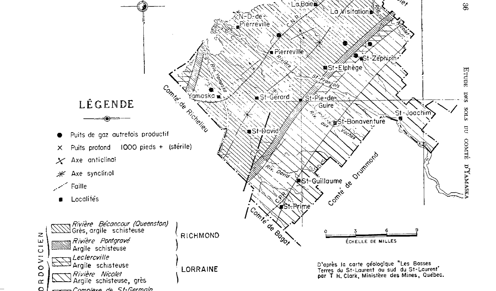
Ainsi la mer est soumise à des alternatives d'avancées (transgressions) et de reculs (régressions). Ce sont là des faits d'observation. Il en fut ainsi au cours des âges disparus, et toute l'histoire géologique montre que les mers se sont déplacées à la surface du globe et que toutes les régions de notre planète ont été, à différentes reprises, recouvertes par les eaux marines. Mais ces soulèvements des masses continentales ont été souvent accompagnés de mouvements horizontaux ou tangentiels.
La position normale d'une formation sédimentaire, en pays de plaine, est généralement horizontale, "La poussée des nappes de recouvrement des Apalaches venue de l'est, ayant chevauché les roches de l'Ordovicien, celles-ci furent le siège de plissements locaux, de chevauchements, de déformations et même de compénétration dans certains endroits, si bien qu'il nous a semblé rationnel de classer séparément ces roches tourmentées et de les distinguer des autres en les appelant "le complexe St-Germain". Ce complexe est évidemment limité au voisinage immédiat de la région apalachienne. On doit le considérer comme un terme absolument structural et il n'est pas possible de déterminer partout les éléments stratigraphiques qui le constituent" *.
C'est au moyen de l'étude des couches sédimentaires, de leur nature, de leur ordre de succession, de leur structure, enfin de leurs fossiles que la géologie parvient à reconnaître les antiques répartitions entre les mers et les continents, les changements que l'écorce terrestre a subis pour amener peu à peu les continents à la configuration qu'ils ont aujourd'hui.
Les périodes de repos, pendant lesquelles s'est formée aux fonds des mers telle ou telle assise sédimentaire, constituent autant d'époques géologiques. Ces périodes se sont séparées l'une de l'autre par des révolutions géologiques ou époques oragéniques, c'est-à-dire, par des accidents de niveau généralement lents, qui, en changeant plus ou moins le relief, ont modifié la configuration des continents et la distribution des mers. Chacune des mers géologiques prend le nom de terrains sédimentaires déposés dans son lit; ainsi on dit la mer Cambrienne, la mer Ordovicienne, la mer Silurienne, pour désigner les mers dont les dépôts ont formé les assises appelées cambriennes, ordoviciennes ou siluriennes, etc. On donne encore le nom de système à ces dépôts.
C'est à l'aide de ces principes et de ces décalements que la géologie a remonté à l'origine géologique du comté d'Yamaska, et a reconstitué les états géologiques et les principaux événements qui se sont succédés dans l'évolution de notre milieu géographique.
* T. H. Clark.
ETUDE DES SOLS DU COMTÉ D'YAMASKA
Par la nature pétrographique des formations géologiques du comté d'Yamaska, on peut étudier leur évolution dans le temps, leur composition et leur désagrégation. Le résultat final de l'altération des roches forme la partie la plus intéressante pour l'agriculteur : le sol arable.
La nature du sol est en relation étroite avec les roches qui lui ont donné naissance. C'est pourquoi, le géographe et le pédologue dans la région qu'ils se proposent d'étudier doivent connaître et comprendre les travaux des géologues pour les utiliser dans leur propre travail.
Avant de procéder à la description exacte des unités sédimentaires, il convient de faire quelques commentaires. D'abord, à l'exception unique du grès de Pierreville, chaque unité présente une gradation de bas en haut et de haut en bas, et chaque élément a sa place bien déterminée parmi ceux qui sont au-dessus ou au-dessous. Il semble donc que soit une succession complète et naturelle de lits représentant l'Ordovicien supérieur dans ces parties. Puis, le fait d'inclure le "Groupe Utica" peut surprendre. Il est ici inclus dans le Cincinnatien à cause de la parfaite concordance de ce groupe avec les couches du Lorraine inférieur parmi lesquelles il s'intercale, et aussi à cause de son contact lithologique net et marqué avec le Trenton sous-jacent, lequel cependant ne peut être observé dans les limites de cette région. De plus, aucune sous-formation n'est proposée pour la zone Lepteana de Foerste de la formation Rivière Nicolet. Enfin, les équivalents donnés dans la dernière colonne devraient être acceptés avec beaucoup de réserve. Les dépôts furent probablement ininterrompus dans le géosynclinal apalachien le long duquel du côté ouest nos roches sédimentaires se formèrent, tandis que plus loin à l'ouest en Ontario et dans les états de New-York et de l'Ohio, etc., les interruptions sant communes. Il n'est pas hors du damaine de la possibilité que la section Rivière Nicolet puisse devenir un type de l'Ordovicien supérieur pour la partie Nord-Est de l'Amérique du nord, lorsque l'on aura terminé la classification de la faune particulière à ces diverses subdivisions, lesquelles s'établissent comme suit pour le comté d'Yamaska :
Cette formation est constituée de schiste siliceux variant du gris foncé au gris clair et de grès en couches minces. Ce schiste n'est pas pétrolifère et ne contient pas de lits altérés de couleur chamois ni de concrétions. Il se désagrège facilement lorsqu'exposé à l'air. Les fossiles abondent dans quelques plans de stratification bien que très rares dans la formation entière : Dalmanella sp. common, Sinuites cancellatus, Clidophorus planulata, Byssonychia hyacinthensis, Cryptolithus beillulus, Triarthrus huguesensis. Formation de Rivière Nicolet.
Entre les schistes siliceux et tendres de Leclercville et les schistes calcaires du groupe Richmond se trouve une grande épaisseur de schistes siliceux et de grès, interstratifiés ici et là de couches minces de calcaire. Les grès se présentent tous sous une forme de masses lenticulaires, et la corrélation entre les deux rives d'une rivière manque parfois à cause de la nature
* D'après T. H. Clark.
Etude des sols du comté d'Yamaska
discontinue des caractères lithologiques dominants. Des subdivisions basées sur tout autre critère que la faune ne seraient d'aucune valeur tellement est variable d'un point à l'autre la succession des schistes et des grès.
La formation la plus puissante qui affleure dans cette région est particulièrement caractérisée sur la rivière Bécancour, entre Bécancour et un point situé à environ huit milles en amont du village. Elle est largement composée de schiste argileux et de grès rouge. Le schiste se désagrège facilement et le grès bien consolidé est rare. Le grain du grès varie depuis un conglomérat à éléments fins, dans les couches supérieures, jusqu'à des concrétions atteignant un demi-pouce de diamètre. Cette texture grossière est rare et confinée à ces lits. Partout se trouvent à la fois des lits de schiste et de grès d'un gris verdâtre plutôt clair. Il semble probable que le grès sait localisé à la partie supérieure de la formation. On peut voir de très belles coupes le long des rives des rivières St-François, Nicolet, Pontgravé, Bécancour et Gentilly, ainsi que de la Petite-Rivière-du-Chêne. On ne trouve aucun fossile dans cette formation, si ce n'est qu'à un endroit sur la rivière Bécancour où l'on a observé quelques indices.
Cette formation est constituée de schistes argileux calcaires interstratifiés de fréquentes couches minces de calcaire. Le grès se rencontre comme dans la formation de Rivière Nicolet mais ne présente nulle part un caractère dominant. La facilité de désagrégation au contact des agents atmosphériques est plus prononcée. A cause de cela, les fassiles sont faciles à collectionner bien qu'ils se brisent facilement. La haute teneur en calcaire de cette formation permet de distinguer facilement des couches inférieures. La formation passe graduellement et insensiblement dans la sous-formation de Rivière Carmel de la formatian de Rivière Bécancour. La section type se trouve sur la rive Nord de la rivière Pontgravé, immédiatement en amont de l'embouchure de la rivière Carmel. Elle affleure aussi sur les deux rives de la rivière Nicolet.
On a désigné sous le nom de sous-formation de Rivière Carmel, les quelque 170 pieds inférieurs de la formation de Rivière Bécancour. Elle forme des affleurements bien caractérisés, au confluent des rivières Carmel et Pontgravé, et est constituée par un schiste de texture uniforme, gris verdâtre, non calcaire, dépourvu également de stratifications et de fossiles. Le contact inférieur de cette sous-formation est graduel, mais il se dessine
habituellement le long de la couche fossilifère supérieure des assises de la formation Rivière Pontgravé; on peut aussi considérer l'absence de stratification comme un indice également très significatif pour déterminer la séparation des deux zones.
Le schiste gris verdâtre de la sous-formation de Rivière Carmel varie, de bas en haut, en des strates alternées bien définies de schistes gris verdâtre et rouges et de grès semblable à celui qu'on trouve dans lo formation de Rivière Bécancour proprement dite.
Une zone de grès de 115 pieds d'épaisseur au sommet de la formation de Rivière Bécancour (ou près de celui-ci) a reçu le nom de sous-formation de Pierreville. Elle consiste en des grès gris clair à éléments fins ou moyens. Les grès sont à joints solides, ils sont parfaitement consolidés et on peut les utiliser comme pierre à bâtir. Dans la section type de la formation, à environ cinq milles plus haut que Pierreville, le long de la rivière St-François, se trouve l'affleurement le plus élevé, mais d'après quelques-uns des journaux depuis, le grès gris est recouvert, de plus, de schiste et de grès rouges.
Les lits rouges de Rivière Bécancour occupent le centre du plissement, d'une extrémité à l'autre, sans interruption. La plus récente carte, celle de Ells, montrait des lambeaux isolés de lits rouges de Queenston, mais elle était basée sur des données bien incomplètes. Le flanc nord-ouest est partout moins escarpé que le flanc sud-est. De fait, cette dernière partie a été, à quelques endroits, tellement affectée par les lambeaux de charroyage lors des plissements apalachiens que des roches ont été tordues, tourmentées et rendues méconnaissables. Ainsi, il semble préférable de grouper ces roches tourmentées et légèrement métamorphisées sous le nom de "le complexe St-Germain". Celui-ci comprend, comme on a pu l'observer, les formations de Lotbinière et de Leclercville et, sans aucun doute aussi, certaines parties de la formation de Rivière Nicolet. Il y a aussi raison de supposer qu'une partie du Trenton sous-jacent puisse être compris dans ce salmigondis tectonique. Ce complexe forme des affleurements bien caractérisés le long des rivières plus importantes, particulièrement le long du St-François, au voisinage de St-Joachim.
Les roches du complexe St-Germain sont partout très inclinées, presque verticales à certains endroits; ayant été soumises, à maintes reprises, à l'action des plissements secondaires et des failles. Leur structure compliquée diminue graduellement vers le flanc est, moins tourmenté, du synclinal principal.
Les failles sont nombreuses dans les roches du complexe St-Germain. Ailleurs, bien que la dislocation ait dû affecter tout le territoire, on ne peut en discerner facilement les effets.
| Système | Série | Groupe | Formations, Sous-formations, Zones |
Épaisseur en pieds |
Équivalents |
|---|---|---|---|---|---|
| Ordovicien | Cinnacatien | Richmond |
Rivière Bécancour : grès rouge et schiste. Sous-formation de Pier- reville : grès gris (115') au sommet ou près de celui-ci. Sous-formation de Rivi- ère Carmel : schiste gris (170') à la base. |
1500+ | Queenston |
| Rivière Pontgravé : schiste argileux calcaire. |
156 | Waynesville | |||
| Lorroine |
Rivière Nicolet : schistes sablo-argileux et grès. Sous-formation de St- Hilaire (zone à Phola- domorpho (539'). Sous - formation de Chambly (zone à Proe- tus (287') (zone à Leptaena (569') |
2357 |
Pulaski Frankfort |
||
| Leclercville : schistes argi- lo-sableux. |
1000+ | ||||
| Utica | Lotbinière : schiste; la base n'est pas à décou- vert. |
300+ | Utica | ||
| Mohawkien | Trenton | "Calcaire de Trenton". | |||
| Épaisseur totale des formations qui affleu- rent au-dessus du Trenton. |
5313 | ||||
ETUDE DES SOLS DU COMTÉ D'YAMASKA
Le comté d'Yamaska comme toute autre région, a subi l'action des glaciers qui ont usé et poli la roche en place.
Les glaciers y ont exercé leur action comme agents de structure et de transport. En effet, les glaciers, après leur fonte, ont laissé des dépôts qui se sont accumulés de différentes façons et qui servent aujourd'hui de substratum à certains sols du comté.
Les dépôts glaciaires rencontrés se composent de débris de toute dimension (argile, limon, sable, cailloux, etc.). A ces débris entassés pêle-mêle saus la glace, on donne le nom de ''till''. Ce sont sur de tels matériaux hétérogènes que se sont formées les séries de Raimbault, de St-Sylvère et de Bedford. Ces matériaux varient en nature et en épaisseur selon la nature géologique et la topographie de la roche de fond. C'est justement à cause de cette nature géologique différente que l'on rencontre des tills riches en chaux ou pauvres en chaux. La partie inférieure du till est tenace et très compacte. Cette couche compacte, appelée "hardpan", entrave le drainage effectif du sol et le développement des racines. Elle est généralement située d'un à trois pieds de profondeur.
Une deuxième forme d'accumulation glaciaire visible dans ce comté, consiste en dépôts de sables, de graviers et de cailloux plus ou moins assortis et stratifiés. Ces dépôts résultent de l'action de l'eau de fusion pendant les époques de fonte des glaciers. On donne à ces amas le nom de "dépôts fluvio-glaciaires". Ils se présentent généralement en digues étroites et sinueuses, irrégulièrement distribuées. Elles impriment au paysage une topographie bossuée nettement caractéristique.
C'est sur ces basses morainiques que s'est développé le type de "sable et de gravier sableux de Grande-Ligne" que l'on voit en certains endroits dans le comté d'Yamaska.
Un autre facteur qui prouve le passage du glacier, c'est la vue de ces blocaux erratiques et le grand nombre de roches rencontrées à la surface du sol à certains endroits du comté.
Si les glaciers furent un agent géologique de la formation de quelques sols du comté, un autre agent a joué un rôle d'une importance beaucoup plus grande : l'invasion marine Champlain.
A mesure que la nappe de glace retraitait vers le nord, les eaux marines de l'Océan Atlantique envahissaient les vallées du St-Laurent jusqu'au niveau de 600 pieds environ. Pendant cette période de submersion marine, des sédiments se sont accumulés : les argiles dans les endroits les plus profonds de la mer, les sables et les graviers sur les rivages.
Le soulèvement saccadé du continent est inscrit sur les plages marines étagées en gradins, appelées "Terrasses".
Avec la collaboration de M. Auguste Mailloux.
Les dépôts marins, reliques du séjour de la mer Champlain, sont de beaucoup les plus étendus dans le comté. Cet alluvionnement semble être le résultat du remaniement des dépôts morainiques, d'une part, et de l'apport de matériaux fins amenés dans la mer par les cours d'eau tributaires eux-mêmes chargés de matériaux alluvionnaires provenant du rivage des moraines exondées, d'autre part. Les sables sont une masse claire de grains généralement fins parmi lesquels le quartz prédomine. Les sables apparurent lorsque la mer commença à baisser, mouvement qui communiquait une nouvelle vigueur érosive aux tributaires débouchant dans la mer Champlain. Ce sont donc les dépôts les plus récents, sauf ceux qui apparaissent dans les parties les plus basses et qu'on appelle "alluvions fluviatiles récentes, modernes et lacustres".
Avant de passer au dernier sujet de cet important chapitre, les alluvions fluviatiles, ojoutons un mot sur les terrasses. Ces dernières ne peuvent exister que là où le relief sous-marin présente assez de variété pour leur permettre en quelque sorte de s'accrocher. Là où le relief est très régulier, le niveau de la terrasse se contentera de se mouler exactement sur lui; la surface de terrasse sera conforme à celle de son soubassement rocheux.
La mer Champlain ne s'est pas évanouie d'un seul coup. Son retrait s'est effectué par saccades qui ont laissé leurs traces dans certaines formes appelées "terrasses".
Dans le comté de Yamaska, nous avons deux niveaux. Il y a, à la Baie du Febvre, un rebord de terrasse assez net, dont la dénivellation peut être de 60 pieds. Mais parvenu au sommet, plus rien qu'une plaine immense se déroulant vers le Sud. A Saint-Bonaventure, on dépasse à peine l'altitude 150' à 12.5 milles de La Baie. Dans deux niveaux seulement, dont l'un immense et s'élevant en pente insensible.
Or, nous constatons que ces deux niveaux supérieurs représentent simplement un assez mince placage d'argile sur la carcasse rocheuse, ici remarquablement plane. Au bord du Saint-François en avant de Pierreville, la roche apparaît à faible profondeur. Le vrai phénomène de terrasse, c'est-à-dire la formation d'un rebord, d'un gradin, n'apparaît que lorsque la plate-forme rocheuse se dérobe en profondeur vers l'ombilic du lac Saint-Pierre.
Au fur et à mesure que les rivières creusent leurs lits, les alluvions se déposent dans les endroits où la pente diminue et dans les étendues planes. S'il survient une crue des eaux, les sédiments atterrissent sur les rives et on nomme ces alluvions "dépôts de plaine d'inondation ou alluvions récentes". Ces alluvions s'étalent le long des cours d'eau sinueux, dans les parties planes sous forme de basses platières. Leur constitution physique est variable dans les différents points et se modifie même à de faibles distances. Ces pointes de terre se composent principalement de sable fin et grossier de limon d'argile sableuse. En général, les alluvions récentes forment des sols riches en matière organique au drainage défectueux et au profil peu développé. Ce sont des sols d'une fertilité proverbiale. Font partie des alluvions récentes les séries suivantes : Nicolet, La Baie, St-François, Pierreville, Godefroy, Comtois, St-Pierre, Abénakis et autres sols non-sériés.
Le but de la classification des sols est principalement de faire un inventaire des ressources du sol et de rapporter les informations recueillies sur des cartes et dans un rapport. Dans la province de Québec, cet inventaire se fait par des pédologues, agronomes spécialement entraînés dans la science du sol. Les sols sont étudies, in situ, en profondeur aussi bien qu'en surface, the (classifiés, cartographiés et décrits. On note la texture, la structure, la consistance, la couleur, la quantité de matière organique, la nature de la roche-mère, ainsi que la topographie, le drainage, la végétation naturelle, la croissance des plantes, le degré d'érosion, etc.)
Avant de commencer l'étude des sols d'un comté, on fait un relevé de la littéroture concernant la formation des sols, la géologie de surface, la physiographie, la végétation naturelle, le climat, les modes de culture, etc. Lorsque le travail sur le champ commence, l'un des premiers objectifs est de faire plusieurs excursions, afin d'étudier le développement du profil des sols et d'établir les principaux types dans l'étendue à classifier.
Le genre d'étude des sols employé dans le comté d'Yamaska peut être appelé "reconnaissance détaillée". On parcourt toutes les routes en voiture-automobile. Maintes fois, des renseignements supplémentaires sont nécessaires. On fait alors des chevauchées à travers les champs. Là où il est nécessaire, on fait des coupes et on examine le profil.
Des notes sont prises durant cette étude et les limites entre les types sont mises en plan sur des cartes militaires agrandies à deux pouces au mille.
On prélève des échantillons représentatifs de tous les profils différents. Ces échantillons sont pris, autant que possible, en terrain vierge ou en terrain non fertilisé. Les résultats analytiques de ces échantillons sont compilés et reportés à chaque série de sol.
On appelle sol le corps naturel, à la surface de la terre, composé de matière minérale et organique et constituant le milieu naturel à la croissance des plantes. Le sol n'est pas simplement une accumulation des débris de roches et de plantes. C'est une entité vivante formée par un processus de destruction et un processus de construction.
Sous l'action combinée des agents physiques, chimiques et biologiques, la roche se brise, se désagrège, s'altère et se décompose; une végétation primitive apparaît. Elle se modifie graduellement sous l'influence du climat. Il y a alors une perte partielle des produits les plus solubles et volatils, en même temps qu'une formation de nouveaux produits résultant de l'influence du climat par l'intermédiaire de la végétation et de la flore microbienne. C'est la résultante de ces différents processus qui donne naissance au sol avec sa structure, sa texture, sa composition chimique particulière influençant la croissance des plantes.
Ce processus de formation des sols développe, avec le temps, des couches ou horizons différenciés de la roche-mère. L'ensemble de ces divers horizons s'appelle "profil".
Le profil est influencé par le climat, la topographie, le drainage, la végétation, la composition chimique, la texture, etc. Il reflète donc les influences combinées de tous ces facteurs. Aussi est-il à la base de la classification des sols. D'après l'étude du profil, les sols du comté d'Yamaska ont ainsi été classés : ordre, groupe, série, type et phase.
L'ordre est la plus grande catégorie dans la classification des sols et comprend les trois subdivisions suivantes : zonal, intrazonal, azonal.
Les sols zonaux comprennent les grands groupes de sols possédant des profils bien développés et reflétant l'influence des facteurs actifs de la genèse du sol. Dans le sud de la province de Québec, il peut exister trois grands groupes de sols zonaux : les podzols, les bruns podzoliques et les gris brun podzoliques. Cependant, ces deux derniers grands groupes sont absents dans le comté d'Yamaska. Un podzol est un sol acide délavé qui, à l'état vierge, possède, sous une mince litière de feuilles, une couche gris clair (ou horizon A2) ressemblant à de la cendres. La couleur de la zone d'accumulation varie du brun au brun rougeâtre, parfois au rouge. Voici un profil typique d'un podzol tel que rencontré dans Yamaska.
Les sols intrazonaux reflètent plus l'influence d'un facteur local déterminé, comme le drainage, que l'effet normal du climat et de la végétation.
Dans le comté d'Yamaska les sols intrazonaux rencontrés sont les suivants : les sols semi-tourbeux, les sols tourbeux, les podzols à gley et les gleys. Les sols semi-tourbeux possèdent, à la surface, de la matière organique bien décomposée reposant sur un sol minéral gris. Les sols tourbeux sont constitués de tourbe ou de matière organique plus ou moins bien décomposée, reposant sur de la tourbe formée par l'accumulation de plantes marécageuses.
Les "podzols à gley" et les "gleys" se sont formés sous l'influence d'une nappe d'eau élevée, permanente ou périodique.
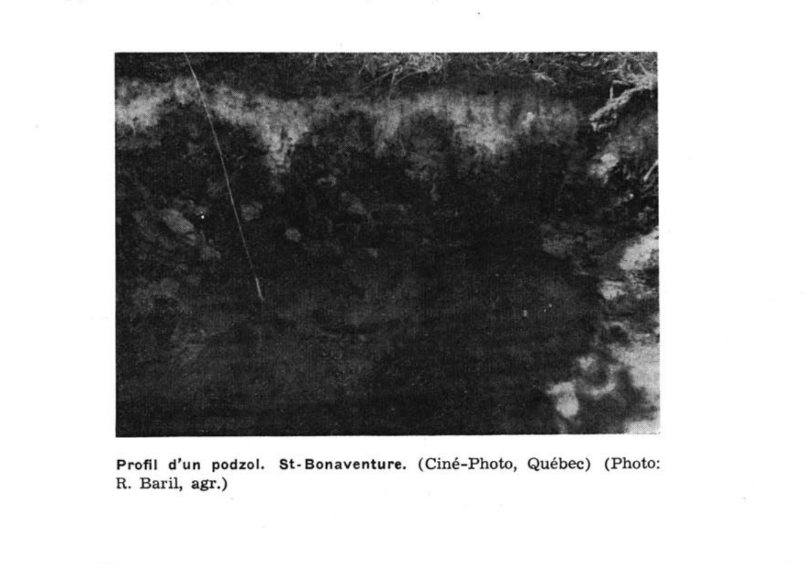
Les sols azonaux possèdent un profil peu ou pas développé et comprennent particulièrement les sols formés sur les alluvions récentes et modernes. En réalité, dans ces sols, la roche-mère va jusqu'à la surface, vu que les agents formateurs du sol n'ont pas encore eu le temps d'agir.
On appelle série de sol, des sols possédant des horizons semblables et provenant de la même roche-mère. On lui donne ordinairement le nom d'une ville, d'une rivière, etc., près de laquelle ces sols ont été trouvés pour la première fois. Pour le pédologue, le nom d'une série évoque dans son esprit une image du sol : la topographie, les conditions de drainage, les caractères de profil, la réaction, la couleur et la structure des horizons, la quantité de matière organique, la composition en éléments nutritifs, la productivité, etc.
Exemple : série de St-Jude.
Dans une série, on rencontre un ou plusieurs types définis d'après la texture de l'horizon A. Ainsi, le type indique, en plus des caractéristiques du profil, la texture de la surface du sol. Exemple : sable de la série de St-Jude indique que la série de St-Jude est constituée de sable dans l'horizon Ac. Le type de sol est l'unité principale dans la cartographie des sols, à cause de son caractère spécifique. Les données agronomiques doivent se rattacher généralement à cette unité de sol : le type.
La phase vient d'un ou de plusieurs caractères mineurs externes au profil, mais ayant son importance pratique au point de vue agricole. Exemple : sable de la série de St-Jude avec blacaux à la surface.
Étude des sols du comté d'Yamaska
| 0-pd | A⁰⁰ | Feuilles non tassées et débris organiques très peu décomposés; aussi appelé couche "L". |
| A⁰ | Enchevêtrement de débris organiques partiellement décomposés; aussi appelé couche "F". | |
| A¹ | Horizon noir composé de matière organique mêlée à la matière minérale; aussi appelé couche "H". | |
| A² | Horizon pâle, gris cendré, représentant la zone du maximum de délavage. | |
| 1-pd | B¹ | Horizon de transition apparent à B², de couleur brun à brun jaunâtre ou rougeâtre; accumulation de la matière organique. |
| Solum | B² | Horizon brun à brun rougeâtre, représentant la zone du maximum d'accumulation des sels de fer, d'aluminium, etc.; souvent compact. |
| 2-pds | B³ | Horizon de transition de couleur gris jaunâtre. |
| Roche-mère | C | Matériaux peu ou pas altérés par le processus de formation du sol; les horizons A et B se sont formés aux dépens de matériaux semblables. |
| 3-pds | ||
| Substratum | D | Matériaux géologiques différents de ceux de la roche-mère; peuvent ou ne peuvent pas avoir une influence sur le sol susjacent. |
|
0-pd
1-pd
Solum
2-pds
Roche-mère
3-pds
Substratum
|
|
Feuilles non tassées et débris organiques très peu décomposés; aussi appelé couche "L".
Enchevêtrement de débris organiques partiellement décomposés; aussi appelé couche "F".
Horizon noir composé de matière organique mêlée à la matière minérale; aussi appelé couche "H"; peut être absent.
Horizon pâle, gris cendré, représentant la zone du maximum de délavage.
Couche d'humus, brun très foncé, située entre A² et l'orterde.
Horizon, jaune doré à brun jaunâtre, représentant le maximum d'accumulation des sels de fer et d'aluminium; présence d'orterde ou d'ortstein; présence ou absence de mouchetures de rouille.
Horizon gris jaunâtre, fortement moucheté de rouille.
Matériaux peu ou pas altérés par le processus de formation du sol; les horizons A et B se sont formés aux dépens de matériaux semblables.
Matériaux géologiques différents de ceux de la roche-mère; peuvent ou ne peuvent pas avoir une influence sur le sol susjacent.
|
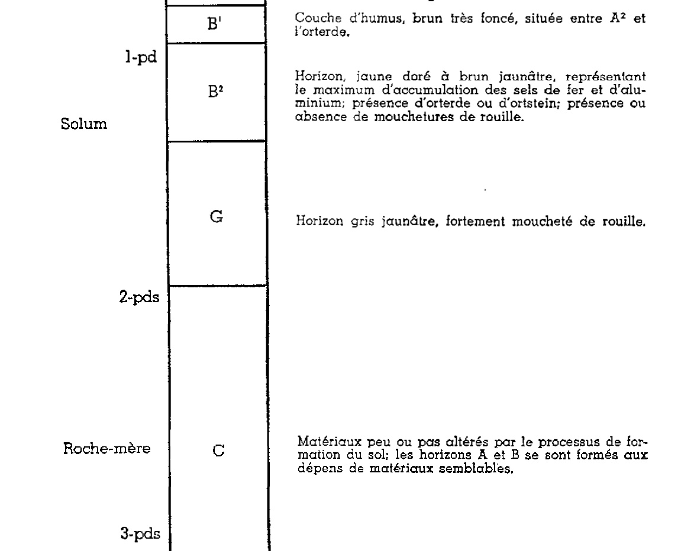
| 0-pd | A00 | Feuilles non tassées et débris organiques très peu décomposés; aussi appelé couche "L"; généralement présent dans les profils vierges, mais pouvant vite disparaître à la chute des feuilles. |
| A0 | Enchevêtrement de débris organiques partiellement décomposés; aussi appelé couche "F"; généralement moins de deux pouces d'épaisseur. | |
| A1 | Horizon noir composé de matière organique mêlée à la matière minérale; aussi appelé couche "H"; toujours présent. | |
| A2 | Horizon généralement plus pâle que les horizons supérieurs et inférieurs; probablement toujours présent, mais peut être souvent masqué par la matière organique. | |
| 1-pd | B2 | Horizon jaune clair à gris brun; toujours moucheté de rouille, quelquefois peu apparent. |
| Solum | G | Horizon gris clair à gris jaunâtre; toujours moucheté de rouille; les limites des horizons inférieurs à A2 sont toujours très diffuses. |
| 2-pds | C | Matériaux peu ou pas altérés par le processus de formation du sol; les horizons A et B se sont formés aux dépens de matériaux semblables. |
| Roche-mère |
~ ~ ~ ~ ~ ~ |
|
|
3-pds Substratum |
D |
Matériaux géologiques différents de ceux de la roche-mère; peuvent ou ne peuvent pas avoir une influence sur le sol susjacent. |
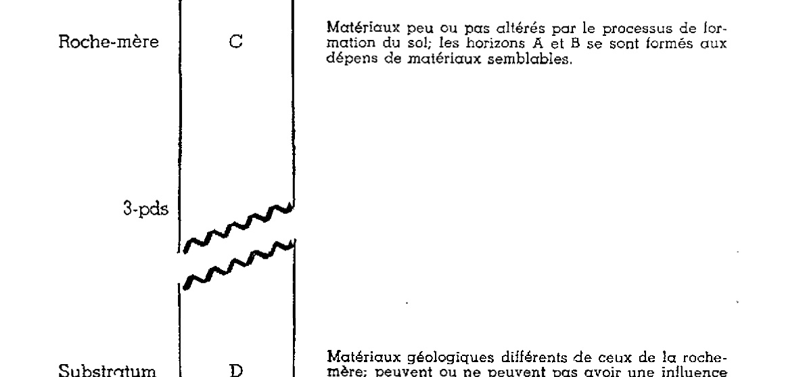
e)—Drainage variant d'excessif à mauvais :
1—Sable profond :
1—Sable de St-Amable (complexe)........................................................ Am
2—Sable mince sur argile :
1—Sable de De Guire (complexe)...................................................... Gu
B—Alluvions constituées de limon sableux.
a)—Drainage imparfait :
1—Limon sableux des Orignaux................................................................... Or
C—Alluvions constituées de limon argileux.
a)—Drainage imparfait :
1—Limon sableux des Saults.................................................................... So
b)—Drainage mauvais :
1—Limon sableux de St-Aimé.................................................................... Ai
D—Alluvions constituées d'argile contenant un fort pourcentage de silte (limon).
a)—Drainage imparfait :
1—Limon argileux de Levrard.................................................................... Lv
E—Alluvions constituées d'argile non calcaire.
a)—Drainage modérément bon :
1—Argile de Rideau....................................................................................... Ri
2—Argile de Rideau avec "taches" de sable à la surface...................................................................................................................... Ri-s
b)—Drainage imparfait :
1—Argile de Ste-Rosalie.............................................................................. R
F—Alluvions constituées d'argile non calcaire recouverte d'une mince couche de limon sableux.
a)—Drainage imparfait :
1—Limon sableux de Courval..................................................................... Co
G—Alluvions constituées d'argile calcaire.
a)—Drainage imparfait :
1—Argile de St-Urbain................................................................................... U
1)—Riches en chaux :
A—Alluvions constituées d'argile.
a)—Drainage mauvais :
1—Limon argileux de Nicolet................................................................... Ni
B—Alluvions de texture variable.
a)—Drainage très mauvais :
1—Limon argileux à limon sablo-argileux de LaBaie................... LB
2)—Pauvres en chaux :
A—Alluvions constituées de sable ou de gravier sableux.
a)—Drainage excessif à bon :
1—Sable grossier de St-François............................................................ Fsg
2—Limon sableux de St-François.......................................................... Fsl
3—Limon sablo-graveleux de St-François............................................ Fgl
b)—Drainage imparfait :
1—Limon sableux de Pierreville............................................................... Pils
2—Sable limoneux de Pierreville............................................................. Pisl
B—Alluvions constituées de limon sableux ou de limon.
a)—Drainage imparfait :
1—Limon sableux de Comtois.................................................................... Cm
C—Alluvions constituées de limon sablo-argileux.
a)—Drainage imparfait :
1—Limon sablo-argileux de Godfroy....................................................... Go
D—Alluvions constituées d'argile.
a)—Drainage imparfait :
1—Argile de St-Pierre.................................................................................. Pr
E—Alluvions constituées de limon argileux sur sable.
a)—Drainage imparfait :
1—Limon argileux d'Abénakis..................................................................... Ab
—Alluvions non différenciées
A—Sols semi-tourbeux
a)—Drainage très mauvais :
1—Sur argileHa
2—Sur sableHs
B—Sols tourbeux
a)—Drainage très mauvais :
1—Bien décomposés (muck)T.N.
2—Mal décomposés (peat)T
3—Savanes et sols marécageux~ ~ ~
1) Pentes abruptes, ravins, etc., de texture argileusee
2) Argile sur matière organique.
a)—Drainage imparfait :
1—Argile de Du FebvreDF
3) Sable grossier alcalin.
a)—Drainage bon :
1—Sable de Longue PointeLP
4) Limon silteux à argile
a)—Drainage très mauvais :
Sols immergési
1) Dune de sableA
Ce sont des sols formés sur les matériaux transportés par les glaciers et remaniés par les eaux de la mer Champlain. Ces matériaux proviennent de plusieurs formations géologiques, telles que les schistes argileux et les grès siliceux calcaires des groupes de Richmond inférieur, de Lorraine et de Trenton. (Complexe St-Germain).
Cette série ne comprend qu'un type: le limon sableux de Raimbault (1,383 acres) Rb.
Le limon sableux de Raimbault se rencontre surtout dans les paroisses suivantes: St-Joachim, St-Zéphirin et St-Guillaume. Dans ces paroisses, ce sol est souvent en association avec les sables de la série de St-Jude. De plus, dans la partie de la paroisse de St-Guillaume attenante aux comtés de Drummond et de Bagot, les sols et la série de Raimbault offrent plus de variations dans le drainage et la texture qu'ailleurs dans le comté. Dans une classification plus détaillée il serait peut-être opportun d'y établir une nouvelle série.
Ce sol s'est formé sur un till remanié riche en chaux formé de schistes argileux et de grès siliceux calcaires provenant des formations géologiques citées plus haut.
Les sols de la série de Raimbault ne s'étendent pas à perte de vue à la manière de l'argile de Ste-Rosalie ou du sable de St-Jude. Ils forment de petites plaines légèrement ondulées, entrecoupées de larges digues de roches et parsemées de nombreux tas de pierres.
ETUDE DES SOLS DU COMTÉ D'YAMASKA
Le drainage effectif de ces sols est imparfait. Les principales essences forestières sont l'orme, le cerisier, le bouleau, le cèdre et l'épinette noire.
Sur le rebord des fossés et des tas de roches, le long des clôtures, dans les friches pacagées, il y a une abondante végétation de spirée cotonneuse.
| Horizon | Profondeur en pouces |
Description |
|---|---|---|
| Ac | 0 à 6 | Limon sableux, brun foncé à brun grisâtre; structure finement granuleuse et consistance friable; pH: 5.5-6.4. |
| G | 6 à 14 | Limon sableux, gris clair avec quelques mouchetures de rouille; structure feuilletée et consistance ferme; présence assez fréquente de graviers et de petits cailloux subanguleux; pH: 6.8-7.8. |
| C | 14 et plus | Limon sableux, gris clair; structure très peu ou pas feuilletée, consistance ferme; présence de graviers et de petits cailloux subanguleux; fait parfois effervescence au contact de l'acide chlorhydrique dilué; pH: 7.3-8.6. |
Il y a quelques légères variations dans la texture de l'horizon Ac et dans la profondeur du till situé souvent à plus de trois pieds. À certains endroits le till est très peu apparent. Malgré la quasi-certitude d'une origine alluvionnaire Champlain, ces sols sont cartographiés dans la série de Raimbault à cause de la grande similitude de leur profil et de leurs matériaux.
A plusieurs endroits, notamment dans la paroisse de St-Joachim, le limon sableux de Raimbault occupe les dépressions et se trouve associé au limon sableux de St-Sylvère alors situé sur les légères élévations.
L'apparence du terrain cultivé est celle d'un limon sableux brun foncé. Le labour présente des taches variant du gris clair au rouille. La grande culture et l'industrie laitière sont à la base de l'exploitation. L'avoine a tendance à la verse. Le chaulage favorise la pousse du trèfle rouge, tandis que l'application de superphosphate améliore sensiblement le gazon des pacages en favorisant la croissance du trèfle blanc sauvage.
Cependant, à plusieurs endroits, le drainage reste le point de départ de toute amélioration de cette série de sol. Il est parfois difficile à exécuter à cause de la topographie du terrain et de la compacité du sous-sol.
Les résultats analytiques révèlent une déficience en éléments assimilables. Dans la zone de transition entre les sols de la série de Raimbault et ceux de la série de St-Sylvère, le limon sableux de Raimbault montre une déficience en magnésium échangeable.
|
Paroisse et numéro de l'échantillon |
St-Guillaume (46) |
||||||||||
|---|---|---|---|---|---|---|---|---|---|---|---|
| Type ................................................................................................................... | Limon sableux de Raimbault | ||||||||||
| No de laboratoire ......................................................................................... |
|
||||||||||
| Horizon ........................................................................................................ |
|
||||||||||
| Profondeur en pouces ............................................................................. |
|
||||||||||
|
Analyse physique Détritus ........................................................................................ Sable ............................................................................................ Limon .......................................................................................... Argile .......................................................................................... Humidité ...................................................................................... Perte au feu ................................................................................ C organique ................................................................................ Matière organique .................................................................... |
|
||||||||||
|
Analyse chimique : SiO² ............................................................................................ R²O³ ............................................................................................ CaO ............................................................................................ MgO ........................................................................................... K²O ............................................................................................ Mn³O⁴ ....................................................................................... P²O⁵ ............................................................................................ N ................................................................................................ |
74.6 14.7 2.26 0.66 1.50 0.06 0.11 0.13 |
74.5 15.7 2.40 2.37 1.94 0.06 0.24 0.04 |
71.2 20.1 2.64 1.26 2.10 0.08 0.26 0.03 |
|
Réaction : pH .............................................................................................. Besoin en CaCO³ — livres par acre ........................................ |
6.4 5500 |
6.9 3000 |
7.6 0.0 |
| Bases échangeables .................................................................. | (m.e. par 100 grs. de sel) | ||
|
Bases totales .............................................................................. Ca ............................................................................................ Mg .......................................................................................... Mn .......................................................................................... K ............................................................................................ Hydrogène ................................................................................ |
6.0 3.8 1.3 0.11 0.43 5.5 |
4.0 2.4 1.2 0.04 0.13 3.0 |
13.0 7.3 0.22 0.22 0.18 0.0 |
| (livres par acre) | |||
|
Ca ............................................................................................ Mg .......................................................................................... Mn .......................................................................................... K ............................................................................................ |
1520 320 60 340 |
960 300 20 100 |
2920 1160 120 140 |
Dans le comté d'Yamaska cette série ne comprend qu'un type : le limon sablo-argileux de Bedford (1,151 acres) Bd.
Le limon sablo-argileux de Bedford se rencontre surtout dans les parois de St-Joachim et de St-Zéphirin.
Le limon sableux de Raimbault peut ressembler, à plusieurs endroits, au limon sablo-argileux de Bedford. En effet, dans les paroisses ci-haut mentionnées, on peut constater la transition lente, mais certaine, qui existe entre la série de Raimbault venant du comté de Nicolet et la série de Bedford cartographiée dans les comtés de Drummond, de Bagot et de Missisquoi. C'est pourquoi dans les paroisses de St-Joachim et de St-Zéphirin, la texture des sols classifiés dans la série de Bedford peut varier d'un limon sableux à un limon sablo-argileux.
La topographie des sols de la série de Bedford est légèrement ondulée à ondulée. On y voit des tas ou des digues de pierres parsemés dans les champs tandis que le profil contient des roches et des cailloux dans toute sa profondeur.
Le drainage externe est lent tandis que le drainage interne peut varier de lent à très lent suivant la texture et la perméabilité du profil et la profondeur du till. Le drainage effectif est imparfait.
Les principaux arbres observés sur cette série de sol est l'orme et quelques conifères. Les principales plantes semi-naturelles sont : la spirée cotonneuse, la renoncule acre, le carex, etc...
| Horizon | Profondeur en pouces | Description |
|---|---|---|
| Ac | 0 à 7 | Limon sablo-argileux, brun gris très foncé; structure granuleuse et consistance friable : pH: 5.8. |
| G | 7 à 17 | Limon sablo-argileux, gris jaune à olive clair; présence de gros cailloux gréseux et de graviers tantôt acides, tantôt calcaires selon leur origine : pH: 7.0. |
| C | 17 et plus | Limon sablo-argileux gris à brun gris foncé; consistance ferme : présence de graviers et de petits cailloux subanguleux; les cailloux et le sol font ordinairement effervescence au contact de l'acide : pH: 7.2. |
Le terrain cultivé est un limon sablo-argileux, souvent un limon sableux, brun gris très foncé.
Les sols de la série de Bedford forment d'excellents pacages après application de superphosphate. Malgré leur richesse assez grande en calcium, une légère application de pierre à chaux moulue se montre favorable à la croissance du trèfle rouge et de la luzerne.
| RESULTATS ANALYTIQUES | ||||
|---|---|---|---|---|
| Paroisse et numéro de l'échantillon |
St-Joachim (48) |
|||
| Type | Limon sablo-argileux de Bedford |
|||
| No de laboratoire | 20448 | 20449 | 20450 | |
| Horizon | Ac | G | C | |
| Profondeur en pouces | 0-7 | 7-17 | 17+ | |
| Analyse physique : | % | % | % | |
| Détritus | 5.0 | 0.0 | 1.0 | |
| Sable | 68.4 | 48.4 | 52.4 | |
| Limon | 22.8 | 36.8 | 32.8 | |
| Argile | 8.8 | 14.8 | 14.8 | |
| Humidité | 0.6 | 0.7 | 0.4 | |
| Perte au feu | 3.9 | 1.4 | 0.9 | |
| C organique | 2.05 | 0.19 | 0.13 | |
| Matière organique | 3.53 | 0.33 | 0.22 | |
| Analyse chimique : | ||||
| SiO² | 75.2 | 71.7 | 73.1 | |
| R²O³ | 15.8 | 18.6 | 17.2 | |
| CaO | 1.19 | 2.30 | 1.76 | |
| MgO | 1.10 | 1.16 | 1.36 | |
| K²O | 1.93 | 2.00 | 1.99 | |
| Mn³O⁴ | 0.05 | 0.10 | 0.14 | |
| P²O⁵ | 0.18 | 0.30 | 0.31 | |
| N | 0.12 | 0.03 | 0.02 | |
| Réaction : | ||||
| pH | 5.8 | 7.0 | 7.2 | |
| Besoin en CaCO³ — livres par acre | 4200 | 2200 | 0 | |
| Bases échangeables | (m.e. par 100 grs. de sol) | |||
| Bases totales | 5.0 | 10.0 | 11.0 | |
| Ca | 3.4 | 5.8 | 6.1 | |
| Mg | 1.3 | 3.5 | 4.2 | |
| Mn | 0.11 | 0.36 | 0.55 | |
| K | 0.10 | 0.18 | 0.18 | |
| Hydrogène | 4.2 | 2.2 | 0.0 | |
| (livres par acre) | ||||
| Ca | 1360 | 2320 | 2440 | |
| Mg | 320 | 840 | 1020 | |
| Mn | 60 | 200 | 300 | |
| K | 80 | 140 | 140 | |
Ici les matériaux sant également charroyés par les glaciers et partiellement classifiés par les eaux de la mer Champlain. Les schistes argileux, les ardoises et les grès constituant la roche-mère sont acides et proviennent en très grande partie de la formation géologique de Sillery. Cependant, dans la partie contigue au comté de Drummond, on peut rencontrer certains sols de la série de St-Sylvère dont la roche-mère a une réaction neutre ou alcaline. Ceci s'observe dans les zones de transition entre les sols de la série de Bedfort et ceux de la série de St-Sylvère.
Le profil de ces sols a une teinte se rapprochant de la couleur chamois. Le processus de la podzolisation est assez avancé.
Cette série comprend deux types : le limon sobleux de St-Sylvère et le limon sablo-pierreux de St-Sylvère.
Les paroisses de St-Joachim, de St-Guillaume et de St-Bonaventure se partagent la majeure partie de l'aire occupée par les sols de la série de St-Sylvère dans le comté d'Yamaska.
Ces sols se sont développés sur un till remanié pauvre en chaux. La texture de la roche-mère est généralement un limon sableux parfois graveleux, caillouteux et pierreux.
La topographie est ondulée ou légèrement vallonnée. A certains endroits l'on constate une faible érosion de surface. De grosses roches, voir des blocs erratiques de trois à quatre pieds de diamètre, gisent dans les champs ou sont entassés en digues ou en tas.
Les petits boisés se disputent l'érable et la plaine, le bouleau et le tremble, l'épinette et le sapin. Et le long des clôtures et des digues, croît toujours l'éternelle spirée cotonneuse.
Le drainage effectif des sols de la série de St-Sylvère est imparfait; le drainage externe, modéré et le drainage interne, lent. Le limon sablo-pierreux de St-Sylvère possède un drainage légèrement meilleur.
Le limon sableux est le prototype de la série et en voici le profil étudié dans une friche pacagée :
| Horizon | Profondeur en pouces | Description |
|---|---|---|
| A1 | 0 à 2 | Sable siliceux humifère, brun foncé; pH: 5.0-5.3. Plusieurs grains de sable sont constitués de quartz. |
| A2 | 2 à 3 | Sable siliceux gris cendré; parfois absent. |
| B1G | 3 à 12 | Limon sableux, jaune chamois avec taches de rouille; structure feuilletée et consistance ferme; pH: 5.2-5.7. |
| B2G | 12 à 25 | Limon sableux, jaune clair avec taches de rouille; structure feuilletée et consistance ferme; pH: 5.6-5.8. |
| C | 25 et plus | Limon sableux, jaune faible; sans structure et de consistance ferme; pH: 5.8-7.2. La compacité augmente parfois avec la profondeur. On y trouve souvent des cailloux peu arrondis ou subanguleux. |
ETUDE DES SOLS DU COMTÉ D'YAMASKA
| Paroisse et numéro de l'échantillon: |
St-Joachim (45) |
St-Guillaume (92) |
|||||
|---|---|---|---|---|---|---|---|
| 20445 | 20446 | 20447 | 21175 | 21176 | 21177 | 21178 | |
| Type | Limon sableux de St-Sylvère | ||||||
| No de laboratoire | 20445 | 20446 | 20447 | 21175 | 21176 | 21177 | 21178 |
| Horizon | A1 | B(G) | C | A1 | B1(G) | B2(G) | C |
| Profondeur en pouces | 0-3 | 3-12 | 12+ | 0-6 | 6-12 | 12-22 | 22+ |
| Analyse physique | |||||||
| Détritus | % 5.0 |
% 22.0 |
% 53.0 |
% 6.0 |
% 19.0 |
% 4.0 |
% 8.0 |
| Sable | 65.4 | 74.4 | 75.4 | 61.6 | 82.2 | 73.2 | 47.6 |
| Limon | 25.4 | 16.4 | 15.4 | 33.2 | 12.2 | 22.2 | 47.2 |
| Argile | 9.2 | 9.2 | 9.2 | 5.2 | 5.6 | 4.6 | 5.2 |
| Humidité | 2.5 | 1.8 | 1.3 | 2.0 | 3.0 | 0.8 | 0.2 |
| Perte au feu | 10.4 | 5.2 | 3.5 | 12.8 | 6.5 | 2.3 | 0.8 |
| C organique | 5.22 | 1.91 | 1.05 | 6.88 | 2.29 | 0.74 | 0.14 |
| Matière organique | 9.00 | 3.29 | 1.79 | 11.86 | 3.95 | 1.27 | 0.23 |
| Analyse chimique: | |||||||
| SiO² | 69.2 | 70.2 | 70.4 | 64.2 | 63.5 | 72.8 | 74.2 |
| R²O³ | 14.8 | 16.8 | 19.4 | 16.6 | 23.6 | 18.0 | 17.4 |
| CaO | 1.36 | 0.95 | 1.26 | 2.25 | 1.70 | 1.81 | 2.11 |
| MgO | 0.76 | 1.24 | 1.38 | 0.83 | 1.00 | 0.85 | 0.84 |
| K²O | 1.42 | 1.62 | 1.83 | 1.87 | 1.69 | 2.07 | 2.20 |
| Mn³O⁴ | 0.06 | 0.07 | 0.09 | 0.07 | 0.08 | 0.05 | 0.06 |
| P²O⁵ | 0.24 | 0.18 | 0.29 | 0.13 | 0.16 | 0.21 | 0.28 |
| N | 0.31 | 0.12 | 0.08 | 0.39 | 0.11 | 0.05 | 0.03 |
| Réaction: | |||||||
| pH | 5.4 | 5.7 | 5.7 | 6.1 | 5.9 | 5.8 | 5.8 |
| Besoin en CaCO³ livres par acre |
13000 | 7600 | 6400 | 4500 | 8000 | 2000 | |
| Bases échangeables (m.e. par 100 grs. de sol) | |||||||
| Bases totales | 7.0 | 3.0 | 3.0 | 25.0 | 3.0 | 2.0 | 2.0 |
| Ca | 4.9 | 1.6 | 1.4 | 20.8 | 1.9 | 0.8 | 0.5 |
| Mg | 1.3 | 1.0 | 1.2 | 2.7 | 0.6 | 0.3 | 0.4 |
| Mn | 0.33 | 0.07 | 0.18 | 0.82 | 0.04 | 0.01 | 0.05 |
| K | 0.23 | 0.10 | 0.20 | 0.22 | 0.10 | 0.08 | 0.09 |
| Hydrogène | 13.0 | 7.6 | 6.4 | 4.5 | 8.0 | 2.0 | |
| (livres par acre) | |||||||
| Ca | 1960 | 640 | 560 | 8320 | 760 | 320 | 200 |
| Mg | 320 | 240 | 300 | 660 | 140 | 80 | 100 |
| Mn | 180 | 40 | 100 | 440 | 24 | 10 | 28 |
| K | 180 | 80 | 160 | 180 | 80 | 60 | 80 |
La surface labourée est jaunâtre et présente quelques légères variations dans la texture et la couleur. La texture est plutôt légère, mais le sol motte s'il est travaillé trop humide et se masse vite s'il est piétiné par les animaux. Comme dans le cas du limon sableux de Roimbault, la profondeur du till varie et dépasse souvent trois pieds.
Dans le comté d'Yamaska, le limon sableux de St-Sylvère est généralement peu cultivé à cause de l'abondance de roches. Ce sol, dont la fertilité varie de moyenne à pauvre, est souvent boisé ou laissé en friche. Quelques lopins, jadis cultivés, se reboisent lentement.
Le drainage de ce type de sol est légèrement meilleur que celui du limon sableux de St-Sylvère. Sa topographie, plus brisée, prend parfois l'allure d'un cordon. Le profil contient du gravier, des cailloux et des roches. Dans une classification plus détaillée, on pourrait en faire une série distincte.
La disposition et la couleur des horizons sont à peu près identiques à celles décrites dans le profil du limon sableux de St-Sylvère. Mais, dans le limon sablo-pierreux, il y a beaucoup moins de mouchetures dans les horizons B1 et B2 et naturellement, plus de graviers, de cailloux et de roches.
Ce type de sol est très peu cultivé. Il est souvent pavé de blocs aux. En général, il n'y a aucune amélioration avantageuse à y apporter, si ce n'est une fertilisation adéquate afin d'améliorer ces pâturages naturels.
A la fonte du glacier, les eaux ont remanié et classé les matériaux de la moraine. Sous l'action conjointe de l'eau et de la glace il s'est formé des dépôts fluvio-glaciaires de texture sableuse et graveleuse, appelés kames et eskers, communément connus saus les noms de ''dos d'âne'' ou ''dos de cheval''.
Cette série comprend deux types différents : le sable graveleux de Grande-Ligne; le gravier sableux de Grande-Ligne.
Les sols de cette série se rencontrent dans plusieurs paroisses du comté. Leur topographie est particulière : coteaux allongés, cordons étroits ou buttes isolées d'origine Champlain ou fluvio-glaciaire, formés de sable et de gravier siliceux (grès, quartz, granite, gneiss, ferromagnésiens, etc...).
Ces coteaux et ces buttes possèdent généralement un drainage un peu excessif. La quantité de roches est très variable à la surface.
La végétation est mixte : ici des érables et des plaines; là, des bouleaux, des pruches, etc... Les buttes cultivées sont souvent tapissées de danthonies, d'épervières, etc... Par endroits, l'érosion a déjà commencé son œuvre néfaste.
| RESULTATS ANALYTIQUES | ||||
|---|---|---|---|---|
| Paroisse et numéro de l'échantillon |
St-Bonaventure (88) |
|||
| Type | Sable graveleux de Grande-Ligne | |||
| No de laboratoire | 21171 | 21172 | 21173 | 21174 |
| Horizon | A | B1 | B2 | C |
| Profondeur en pouces | 0-4 | 4-24 | 24-36 | 36+ |
| Analyse physique | % | % | % | % |
| Détritus | 5.0 | 10.0 | 2.0 | 0.0 |
| Sable | 81.8 | 92.0 | 96.8 | 95.8 |
| Limon | 14.6 | 5.4 | 1.6 | 2.8 |
| Argile | 3.6 | 2.6 | 1.6 | 1.4 |
| Humidité | 1.2 | 0.6 | 0.3 | 0.2 |
| Perte au feu | 6.6 | 1.3 | 0.6 | 0.4 |
| C organique | 3.18 | 0.30 | 0.15 | 0.31 |
| Matière organique | 5.48 | 0.51 | 0.26 | 0.53 |
| Analyse chimique : | ||||
| SiO2 | 77.3 | 76.6 | 78.4 | 72.0 |
| R2O3 | 12.3 | 15.6 | 17.2 | 17.1 |
| CaO | 1.42 | 1.48 | 1.37 | 1.72 |
| MgO | 0.33 | 0.61 | 0.67 | 0.88 |
| K2O | 1.95 | 1.98 | 1.85 | 2.00 |
| MnO4 | 0.05 | 0.05 | 0.05 | 0.07 |
| P2O5 | 0.11 | 0.10 | 0.16 | 0.16 |
| N | 0.24 | 0.06 | 0.03 | 0.02 |
| Réaction : | ||||
| pH | 5.8 | 6.0 | 6.0 | 6.0 |
| Besoin en CaCO3 — livres par acre | 4700 | 1000 | 0 | 0.0 |
| Bases échangeables (m.e. par 100 grs. de sol) | ||||
| Bases totales | 11.0 | 2.0 | 1.0 | 2.0 |
| Ca | 8.4 | 0.8 | 0.4 | 0.5 |
| Mg | 1.2 | 0.6 | 0.5 | 0.4 |
| Mn | 0.33 | 0.02 | 0.06 | 0.15 |
| K | 0.15 | 0.04 | 0.04 | 0.11 |
| Hydrogène | 4.7 | 1.0 | 0.0 | 0 |
| (livres par acre) | ||||
| Ca | 3360 | 320 | 160 | 200 |
| Mg | 300 | 140 | 120 | 100 |
| Mn | 180 | 20 | 40 | 80 |
| K | 120 | 20 | 20 | 80 |
Ce type se rencontre seul ou en complexe avec le gravier sableux de Grande-Ligne. Lorsque la texture du profil est uniquement constituée de sable, le Grande-Ligne diffère du sable de la série de Ste-Sophie par l'absence de mouchetures à la base de l'horizon B. De plus, la topographie de la série de Grande-Ligne diffère complètement de celle des séries de Sorel et de Ste-Sophie.
Il arrive fréquemment que certains profils situés sur ces buttes et ces coteaux ressemblent aux profils des séries de Sorel ou de Ste-Sophie. Pour éliminer la complexité sur la carte des sols du comité d'Yamaska, les buttes, dont la texture varie de sable à limon sableux furent cartographiées dans la série de Grande-Ligne.
Voici une description d'un profil représentatif :
| Horizon | Profondeur en pouces |
Description |
|---|---|---|
| Ac | 0 à 6 | Sable ou limon sableux, brun jaunâtre; structure finement granulée et consistance friable; pH: 5.0. |
| A² | Sable gris cendré, très mince et souvent absent. | |
| B | 6 à 15 | Sable jaunâtre; sans structure ni consistance; pH: 5.5. |
| C | 15 et plus | Sable, jaune faible; sans structure ni consistance; pH: 6.0. |
Il existe certaines variations dans le profil, surtout dans la présence d'un ou de plusieurs horizons B.
| Horizon | Profondeur en pouces |
Description |
|---|---|---|
| Aº | 0 à 1 | Litière composée de feuilles et de débris végétaux. |
| A¹ | 1 à 5 | Gravier sableux à limon sablo-graveleux, brun foncé, faiblement humifère, sans structure ni consistance; pH: 5.5-5.8. |
| A² | 5 à 6 | Sable et gravier, gris cendré, déposés en bande sinueuse irrégulière, parfois en poche ou sous forme d'une langue; pH: 5.5. |
| B | 6 à 15 | Sable graveleux à gravier sableux (parfois schisteux), brun ocre; sans structure ni consistance; parfois légèrement concrétionné et cimenté à la partie immédiatement au-dessous de l'horizon A²; pH: 5.5-5.8. |
| C | 15 et plus | Sable graveleux à gravier sableux (parfois schisteux), jaune faible, sans consistance; pH: 5.7-6.0 |
Le profil peut contenir les horizons B1 et B2 mais leurs limites sont très diffuses.
Le sol se prête à la culture de la pomme de terre, à l'horticulture, à la pomiculture familiale, etc...
Il arrive souvent que les deux derniers types se rencontrent en complexe. Dans ce cas, ils apparaissent sur la carte des sols sous le vocable "complexe de Grande-Ligne" (symbole : GL).
D'après les résultats analytiques, les sols de la série de Grande-Ligne semblent très pauvres en éléments échangeables : azote, acide phosphorique et potasse. De plus, ces sols sont pauvres en matières organique. A certains endroits, les sols de la série Grande-Ligne semblent excessivement riches en manganèse échangeable. Cette présence excessive du manganèse peut être toxique aux plantes.
Le drainage et l'épaisseur de ces sables sont très variables. Aussi, existent-ils plusieurs profils différents ce qui a permis la cartographie de six séries distinctes.
Cette série ne comprend qu'un seul type : le sable de Sorel.
Les sables de la série de Sorel sont dispersés un peu partout dans le comté. Au point de vue génétique, ce sont des podzols formés sur un sable siliceux déposé par la mer Champlain. Mais, à cause de la nature même du sol, le vent a souvent transporté des particules de sable pour former des dunes. Plusieurs de ces dépôts éoliens se sont fixés sous une influence quelconque. Alors commence le processus de la formation du sol. Un climat humide et tempéré, un sol poreux et ouvert, tout contribue à accélérer le processus de la podzolisation. Aussi, certaines anciennes dunes sont aujourd'hui de vrois podzols.
La topographie est variable. Les champs sont légèrement à fortement vallonnés et se terminent fréquemment par des coteaux à pente abrupte.
Le drainage est excessif. Le pin rouge et le pin blanc recouvraient jadis ces sables secs. De nos jours, le bouleau apparaît aussitôt que le sol reste en friche, mais son apparence rabougrie dénote un sol très pauvre en matière organique et en éléments nutritifs. La danthonie forme le gazon semi-naturel des pâturages.
Sol ouvert, matériaux pauvres en chaux, végétation de conifères, climat humide et tempéré, en un mot, les sables de la série de Sorel possèdent des conditions idéales à un processus interne de la podzolisation. A l'exception des dunes de formation récente, le profil du sable de la série de Sorel est celui d'un podzol typique décrit auparavant :
| Paroisse et numéro de l'échantillon | Ste-Eulalie (Comté de Nicolet) |
Nicolet (Comté de Nicolet) |
|||||||
|---|---|---|---|---|---|---|---|---|---|
| Sable de Sorel | Sable grossier de Sorel | ||||||||
| No de laboratoire | 19362 | 19363 | 19364 | 19365 | 19366 | 19398 | 19399 | ||
| Horizon | A1 | A2 | B1 | B2 | C | A1 | A2 | B | C |
| Profondeur en pouces | 0-2 | 2-5 | 5-7 | 7-18 | 18+ | 0-2 | 2-6 | 6-16 | 16+ |
| Analyse physique : | |||||||||
| Détritus | 0.0 | 0.0 | 0.0 | 0.0 | 0.5 | 2.5 | 9.5 | 0.5 | 1.0 |
| Sable | 86.8 | 89.6 | 91.6 | 93.6 | 97.6 | 93.8 | 95.3 | 96.8 | 97.8 |
| Limon | 9.2 | 7.4 | 5.4 | 3.4 | 0.4 | 3.9 | 2.9 | 0.9 | 0.6 |
| Argile | 4.0 | 3.0 | 3.0 | 3.0 | 2.0 | 2.3 | 1.8 | 2.3 | 1.6 |
| Humidité | 3.3 | 0.1 | 1.2 | 0.8 | 0.3 | 0.4 | 0.1 | 0.5 | 0.2 |
| Perte au feu | 2.9 | 0.3 | 3.7 | 1.5 | 0.5 | 2.0 | 0.0 | 0.4 | 0.1 |
| C organique | 1.71 | 0.22 | 1.78 | 0.65 | 0.21 | 1.40 | 0.08 | 0.54 | 0.14 |
| Matière organique | 3.10 | 0.38 | 3.06 | 1.12 | 0.36 | 2.41 | 0.13 | 0.93 | 0.24 |
| Analyse chimique : | |||||||||
| SiO2 | 86.5 | 86.2 | 76.5 | 77.8 | 80.0 | 74.8 | 83.7 | 70.9 | 78.7 |
| R2O3 | 10.5 | 10.4 | 14.2 | 15.3 | 14.6 | 17.2 | 11.3 | 21.9 | 14.4 |
| CaO | 1.61 | 1.71 | 1.58 | 2.02 | 1.42 | 1.55 | 0.91 | 2.28 | 1.68 |
| MgO | 0.14 | 0.07 | 0.39 | 0.40 | 0.33 | 1.08 | 0.26 | 1.21 | 0.61 |
| K2O | 2.12 | 2.24 | 2.26 | 2.50 | 2.37 | 1.65 | 2.03 | 1.56 | 1.89 |
| Mn3O4 | 0.05 | 0.03 | 0.04 | 0.04 | 0.04 | 0.12 | 0.02 | 0.23 | 0.07 |
| P2O5 | 0.03 | 0.02 | 0.03 | 0.03 | 0.03 | 0.03 | 0.03 | 0.02 | 0.04 |
| N | 0.10 | 0.04 | 0.08 | 0.04 | 0.03 | 0.10 | 0.02 | 0.03 | 0.02 |
| Réaction : | |||||||||
| pH | 5.9 | 6.2 | 6.1 | 6.0 | 5.9 | 6.0 | 6.5 | 6.3 | 6.4 |
| Besoin en CaCO3 livres par acre |
3900 | 1200 | 9700 | 400 | 1200 | 2700 | 0 | 1400 | 500 |
| Bases échangeables : (m.e. par 100 grs. de sol) | |||||||||
| Bases totales | 5.0 | 1.5 | 1.5 | 1.0 | 1.0 | 2.2 | 0.6 | 0.5 | 0.5 |
| Ca | 3.60 | 0.80 | 0.50 | 0.40 | 0.40 | 1.60 | 0.20 | 0.20 | 0.20 |
| Mg | 0.70 | trace | trace | trace | trace | 0.40 | trace | trace | trace |
| Mn | 0.49 | 0.03 | 0.05 | 0.03 | 0.05 | 0.06 | 0.03 | 0.03 | 0.03 |
| K | 0.14 | 0.03 | 0.05 | 0.02 | 0.03 | 0.16 | 0.15 | 0.14 | 0.13 |
| Hydrogène | 3.9 | 1.2 | 9.7 | 0.4 | 1.2 | 2.7 | 0.0 | 1.4 | 0.5 |
| (livres par acre) | |||||||||
| Ca | 1440 | 320 | 200 | 160 | 160 | 640 | 80 | 80 | 80 |
| Mg | 172 | trace | trace | trace | trace | 96 | trace | trace | trace |
| Mn | 268 | 18 | 30 | 20 | 25 | 40 | 16 | 16 | 16 |
| K | 105 | 40 | 40 | 16 | 25 | 120 | 120 | 110 | 105 |
| Horizon | Profondeur en pouces |
Description |
|---|---|---|
| A0 | 0 à 1 | Litière de feuilles mortes. |
| A1 | 1 à 3 | Sable humifère, brun foncé; pH : 5.3-6.0. |
| A2 | 3 à 5 | Sable, gris cendré; pH : 5.8-6.0. |
| B1 | 5 à 9 | Sable, jaune foncé à brun noirâtre avec accumulation d'humus; pH : 6.0-6.3. |
| B2 | 9 à 15 | Sable, jaune brunâtre à brun ocreux avec ortstein; pH : 6.0-6.3. |
| B3 | 15 à 30 | Sable, jaune chamois; pH : 6.0-6.3. |
| C | 30 et plus | Sable, gris à jaune faible; pH : 6.0-6.4. |
Il y a beaucoup de variations dans la profondeur des horizons A2, B1 (souvent absent), B2 et B3. A certains endroits, il y a formation de bancs d'ortstein, ce qui a pour effet de couper la capillarité du sel et de ralentir le drainage interne. Il peut alors arriver que le drainage excessif des sables de la série de Sorel se paralyse sous l'influence de ces bancs compacts et ferrugineux et devienne modérément bon, puis imparfait.
Là où la nappe d'eau est à cinq ou six pieds de la surface, on peut trouver quelques mouchetures de rouille dans l'horizon C ou à la base de l'horizon B3.
La valeur agricole des sables de la série de Sorel est pauvre. A plusieurs endroits, notamment à St-Guillaume et à St-Bonaventure, le sol laissé en friche est bientôt envahi par une végétation de bouleauax.
Les analyses démontrent que les sables de la série de Sorel sont pauvres en éléments nutritifs : azote, acide phosphorique, potassium, calcium, magnésium, etc... Il faut, à chaque année, combler le déficit par le fumier et les engrais chimiques. Une faible application de pierre à chaux dolomitique finement moulue serait favorable à la croissance et à la qualité des légumes.
Dans le comté d'Yamaska, cette série comprend un seul type : le sable de Ste-Sophie.
Etablie dans la paroisse de Ste-Sophie-de-Levrard, comté de Nicolet, la série de Ste-Sophie couvre une superficie peu importante dans le comté d'Yamaska. La roche-mère est constituée d'un sable siliceux déposé par la mer Champlain. Les champs sont parfois unis mais, dans l'ensemble, la topographie est légèrement ondulée. Le drainage est assez capricieux : L'eau de pluie pénètre rapidement dans le sol, mais la nappe d'eau n'est pas aussi profonde que dans le cas des sables de la série de Sorel. Effectivement le drainage de la série de Ste-Sophie est bon. Il arrive parfois qu'il soit modérément bon si la couche compacte est imperméable et sise à trois ou quatre pieds de profondeur.
| RESULTATS ANALYTIQUES | |||||||||||||||||||||||||||||||||||||
|---|---|---|---|---|---|---|---|---|---|---|---|---|---|---|---|---|---|---|---|---|---|---|---|---|---|---|---|---|---|---|---|---|---|---|---|---|---|
| Paroisse et numéro de l'échantillon |
Ste-Sophie (Nicolet) |
||||||||||||||||||||||||||||||||||||
| Type | Sable de Ste-Sophie | ||||||||||||||||||||||||||||||||||||
| No de laboratoire |
|
||||||||||||||||||||||||||||||||||||
| Horizon |
|
||||||||||||||||||||||||||||||||||||
| Profondeur en pouces |
|
||||||||||||||||||||||||||||||||||||
Analyse physique :
|
|||||||||||||||||||||||||||||||||||||
Analyse chimique :
|
|||||||||||||||||||||||||||||||||||||
Réaction :
|
|||||||||||||||||||||||||||||||||||||
Bases échangeables (m.e. par 100 grs. de sol)
|
|||||||||||||||||||||||||||||||||||||
| (livres par acre) | |||||||||||||||||||||||||||||||||||||
|
|||||||||||||||||||||||||||||||||||||
La végétation naturelle de pins blanc et rouge est disparue et remplacée par une autre composée de bouleaux et d'épinettes. Dans les prairies l'on observe la marguerite blanche et l'herbe à poux, ainsi que la spirée cotonneuse le long des clôtures et des tas de pierres.
| Horizon | Profondeur en pouces | Description |
|---|---|---|
| Ac | 0 à 8 | Sable, brun jaunâtre; pH : 5.6. |
| B | 8 à 20 | Sable généralement grossier, brun vif, parfois tacheté de rouille à la base de l'horizon; pH : 5.8. |
| C | 20 et plus | Sable généralement grossier, gris jaunâtre, tacheté de rouille; pH : 6.2. |
La présence d'ortstein est exceptionnelle. L'horizon B peut contenir un B1 et B2. En sol vierge l'horizon A2 est constant. Les champs en culture sont de couleur brun jaunâtre.
Suit une description d'un sol vierge de la série de Ste-Sophie.
| Horizon | Profondeur en pouces | Description |
|---|---|---|
| A0 | Presqu'absent | |
| A1 | 0 à 1 | Sable humifère brun très foncé; sans structure, ni consistance; pH : 4.8. |
| A2 | 1 à 5 | Sable blanc; sans structure, ni consistanse; pH : 5.0. |
| B1 | 5 à 14 | Sable brun vif; sans structure, ni consistance; pH : 5.2. |
| B2 | 14 à 21 | Sable brun vif avec taches brun rouge; sans structure, ni consistance; pH : 5.6. |
| C1 | 21 à 32 | Sable gris clair avec taches jaune olive; sans structure, ni consistance; pH : 5.8. |
| C2 | 32 et plus | Sable de couleur olive, légèrement tassé; pH : 5.9. |
Le sable de la série de St-Jude est un sable siliceux d'origine Champlain. La topographie est une plaine unie comme dans le cas de l'argile de Ste-Rosalie. Les drainages externes et internes sont lents et le drainage effectif est imparfait.
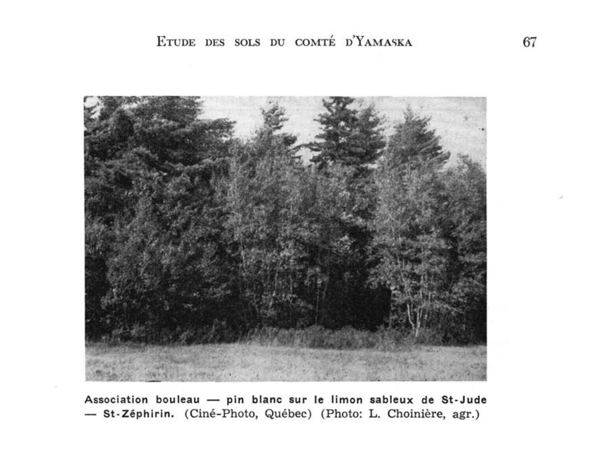
La végétation naturelle consiste surtout dans le bouleau, l'aulne, le pin, le sapin, le mélèze, etc...
Sable de St-Jude (10662 acres) J.
Profil en sol vierge :
| Horizon | Profondeur en pouces | Description |
|---|---|---|
| A0 | 0 à 1 | Litière de feuilles et de débris végétaux partiellement décomposés. |
| A1 | 1 à 3 | Sable, brun foncé ou noir, fortement humifère et peu minéralisé; sans structure et de consistance friable; pH : 5.6. |
| A2 | 3 à 5 | Sable, gris cendré; sans structure ni consistance; horizon mince et sinueux; pH : 5.5-6.7. |
| B(G) ou G(B) |
5 à 15 | Sable, jaune à gris jaunâtre, avec mouchetures de rouille ;sans structure et consistance ferme; pH : 5.6-6.2. L'ortstein est presque toujours absent. |
| C | 15 et plus | Sable, jaune à gris jaunâtre avec mouchetures de rouille irrégulièrement distribuées; sans structure et un peu tassé; pH : 6.0-6.5. |
| RESULTATS ANALYTIQUES | ||||||||||||||
|---|---|---|---|---|---|---|---|---|---|---|---|---|---|---|
| Paroisse et numéro de l'échantillon: |
St-François-du-Lac (111) |
St-François-du-Lac (108) |
||||||||||||
| Sable de St-Jude | ||||||||||||||
| No de laboratoire | 21194 | 21195 | 21196 | 21197 | 21191 | 21192 | 21193 | |||||||
| Horizon | Ac | B(G) | C1 | C2 | Ac | B(G) | C | |||||||
| Profondeur en pouces | 0-5 | 5-15 | 15-30 | 30+ | 0-6 | 6-18 | 18+ | |||||||
| Analyse physique | % | % | % | % | % | % | % | |||||||
| Détritus | 0.0 | 0.0 | 0.0 | 0.0 | 0.0 | 1.0 | 0.0 | |||||||
| Sable | 82.0 | 89.4 | 93.0 | 98.5 | 86.8 | 94.0 | 98.7 | |||||||
| Limon | 13.8 | 5.8 | 3.8 | 1.3 | 9.2 | 3.3 | 0.6 | |||||||
| Argile | 4.2 | 4.8 | 3.2 | 0.2 | 4.0 | 2.7 | 0.7 | |||||||
| Humidité | 0.7 | 1.7 | 0.2 | 0.1 | 1.4 | 0.1 | 0.1 | |||||||
| Perte au feu | 4.7 | 3.1 | 0.7 | 0.3 | 12.4 | 0.4 | 0.1 | |||||||
| C organique | 2.85 | 0.75 | 0.27 | 0.29 | 7.66 | 0.29 | 0.10 | |||||||
| Matière organique | 4.91 | 1.29 | 0.46 | 0.50 | 12.20 | 0.50 | 0.17 | |||||||
| Analyse chimique: | ||||||||||||||
| SiO² | 77.4 | 70.0 | 72.0 | 73.6 | 64.7 | 75.2 | 75.3 | |||||||
| R²O³ | 14.7 | 22.3 | 20.8 | 20.4 | 15.8 | 18.3 | 14.7 | |||||||
| CaO | 1.64 | 2.46 | 2.66 | 2.76 | 1.77 | 2.00 | 2.35 | |||||||
| MgO | 0.59 | 1.10 | 1.32 | 1.00 | 0.60 | 0.77 | 0.75 | |||||||
| K²O | 1.55 | 1.87 | 2.06 | 2.26 | 1.89 | 2.27 | 2.06 | |||||||
| Mn³O⁴ | 0.07 | 0.09 | 0.12 | 0.09 | 0.06 | 0.06 | 0.06 | |||||||
| P²O⁵ | 0.11 | 0.10 | 0.19 | 0.15 | 0.13 | 0.16 | 0.11 | |||||||
| N | 0.14 | 0.05 | 0.03 | 0.02 | 0.32 | 0.03 | 0.03 | |||||||
| Réaction: | ||||||||||||||
| pH | 4.8 | 5.4 | 5.6 | 5.8 | 4.8 | 6.0 | 6.1 | |||||||
| Besoin en CaCO³ livres par acre |
7600 | 3300 | 0 | 0 | 12200 | 0 | 0 | |||||||
| Bases échangeables | ||||||||||||||
| (m.e. par 100 grs. de sol) | ||||||||||||||
| Bases totales | 3.0 | 1.0 | 2.0 | 2.0 | 3.0 | 3.0 | 3.0 | |||||||
| Ca | 2.0 | 0.3 | 0.5 | 0.7 | 1.8 | 1.1 | 1.0 | |||||||
| Mg | 0.6 | 0.3 | 0.6 | 0.6 | 0.9 | 1.6 | 1.2 | |||||||
| Mn | 0.06 | 0.01 | 0.10 | 0.01 | 0.02 | 0.04 | 0.02 | |||||||
| K | 0.21 | 0.07 | 0.13 | 0.10 | 0.19 | 0.11 | 0.09 | |||||||
| Hydrogène | 7.6 | 3.3 | 0.0 | 0.0 | 12.2 | 0.0 | 0.0 | |||||||
| (livres par acre) | ||||||||||||||
| Ca | 800 | 120 | 200 | 280 | 520 | 440 | 400 | |||||||
| Mg | 160 | 80 | 140 | 140 | 220 | 380 | 300 | |||||||
| Mn | 40 | 6 | 60 | 6 | 18 | 20 | 18 | |||||||
| K | 180 | 60 | 100 | 80 | 160 | 80 | 80 | |||||||
Étude des sols du comté d'Yamaska
| Paroisse et numéro de l'échantillon |
Yamaska (58) |
||
|---|---|---|---|
| Type | Sable de St-Jude | ||
| No de laboratoire | 21141 | 21142 | 21143 |
| Horizon | Ac | B(G) | C |
| Profondeur en pouces | 0-9 | 9-28 | 28+ |
| Analyse physique | % | % | % |
| Détritus | 0.0 | 0.0 | 0.0 |
| Sable | 82.8 | 85.8 | 81.6 |
| Limon | 12.0 | 10.2 | 12.4 |
| Argile | 5.2 | 4.0 | 6.0 |
| Humidité | 0.9 | 0.3 | 0.2 |
| Perte au feu | 4.8 | 0.9 | 0.9 |
| C organique | 2.14 | 0.36 | 0.24 |
| Matière organique | 3.69 | 0.61 | 0.41 |
| Analyse chimique : | |||
| SiO₂ | 71.3 | 70.9 | 71.4 |
| R₂O₃ | 16.4 | 18.8 | 18.6 |
| CaO | 2.09 | 2.74 | 2.71 |
| MgO | 0.64 | 1.43 | 1.32 |
| K₂O | 2.07 | 2.28 | 2.35 |
| Mn₃O₄ | 0.05 | 0.08 | 0.05 |
| P₂O₅ | 0.34 | 0.18 | 0.19 |
| N | 0.20 | 0.03 | 0.02 |
| Réaction : | |||
| pH | 6.4 | 6.4 | 6.6 |
| Besoin en CaCO₃ — livres par acre | 3200 | 0 | 0 |
| Bases échangeables | (m.e. par 100 grs. de sol) | ||
| Bases totales | 6.0 | 4.0 | 9.0 |
| Ca | 4.3 | 2.3 | 4.3 |
| Mg | 1.0 | 1.2 | 3.3 |
| Mn | 0.13 | 0.10 | 0.07 |
| K | 0.31 | 0.17 | 0.19 |
| Hydrogène | 3.2 | 0.0 | 0.0 |
| (livres par acre) | |||
| Ca | 1720 | 920 | 1720 |
| Mg | 240 | 300 | 800 |
| Mn | 80 | 60 | 40 |
| K | 240 | 140 | 160 |
| Horizon | Profondeur en pouces |
Description |
|---|---|---|
| Ac | 0 à 6 | Sable, brun foncé, faiblement ou moyennement humifère; sans structure, consistance friable; pH : 5.6-5.8. |
| B(G) ou G(B) | 6 à 15 | Sable micacé, gris, légèrement tacheté de rouille; sans structure, consistance ferme; pH : 5.4-6.2. |
| C | 15 et plus | Sable micacé, gris, légèrement tacheté de rouille; sans structure, un peu tassé; pH : 6.0-6.5. |
Dans le comté d'Yamaska, les sols de la série de St-Jude ont leur importance à cause de leur grande superficie. Labouré, le sal apparaît sous différentes couleurs variant du jaune au gris avec des taches foncées ou pâles.
La valeur agricole est moyenne. Le sol, une fois l'égouttement amélioré, répond bien au chaulage et à l'engrais chimique. Cependant, il vaut mieux appliquer ces correctifs à doses plutôt faibles et répéter plus souvent. Il en est de même pour le fumier. On peut résumer ainsi la formule d'application du fumier, de la chaux et des engrais chimiques : "en appliquer souvent mais peu à la fois".
A plusieurs endroits, la mer Champlain n'a déposé qu'une couche mince de matériaux grossiers sur l'argile; ceci a donné naissance à des sols minces.
Le sable de St-Damase possède les mêmes caractéristiques de topographie, de drainage, de profil et la même roche-mère que la série de St-Jude décrite plus haut. Dans le cas présent le substratum argileux est situé plus près de la surface.
Le sable de St-Damase, forme une plaine unie, aux drainages externe et interne lents, et au drainage effectif imparfait. Le substratum est situé à environ 20 pouces de la surface et peut varier de 12 à 30 pouces. La nature de ce substratum est une argile bleue, massive, collante et plastique.
Le sable de St-Damase est l'équivalent du sable de St-Jude, phase mince du rappart de Nicolet.
| Horizon | Profondeur en pouces |
Description |
|---|---|---|
| Ac | 0 à 6 | Sable ou sable limoneux, brun foncé, sans structure, consistance friable; pH : 5.7. |
| B(G) | 6 à 20 | Sable, brun rouge à gris jaune, bariolé à la base de taches de rouille; sans structure ni consistance; pH : 6.5. L'épaisseur de cet horizon peut varier de 6 à 18 pouces. |
| C | 20 à 24 | Sable gris avec taches de rouille; pH : 6.5. Très souvent absent. |
| D | de 12 à 30 de la surface |
Argile grise à gris bleu, tachetée de rouille; structure massive, consistance très collante et plastique; pH : 7.0-7.5. |
| Paroisse et numéro de l'échantillon : | St-Bonaventure (83) | La Baie (122) | ||||||||
|---|---|---|---|---|---|---|---|---|---|---|
| 21166 | 21167 | 21168 | 21169 | 21170 | 20945 | 20946 | 20947 | 20948 | 20949 | |
| Type | Sable de St-Damase | |||||||||
| No de laboratoire | 21166 | 21167 | 21168 | 21169 | 21170 | 20945 | 20946 | 20947 | 20948 | 20949 |
| Horizon | A1 | A2 | B1 | B2 | D | Ac | B1 | B2 | C | D |
| Prof. en pouces | 0-3 | 3-6 | 6-12 | 12-18 | 18+ | 0-5 | 5-9 | 9-12 | 12-16 | 16+ |
| Analyse physique : | ||||||||||
| Détritus | % 4.0 |
% 2.0 |
% 4.0 |
% 2.0 |
% 0.0 |
% 10.5 |
% 5.0 |
% 4.5 |
% 2.0 |
% 0.0 |
| Sable | 75.6 | 83.0 | 90.0 | 94.0 | 17.6 | 61.2 | 61.2 | 77.2 | 79.2 | 26.8 |
| Limon | 21.2 | 12.6 | 7.4 | 4.4 | 11.6 | 25.6 | 23.6 | 15.6 | 5.6 | 13.6 |
| Argile | 3.2 | 4.4 | 2.6 | 1.6 | 70.8 | 13.2 | 15.2 | 7.2 | 15.2 | 59.6 |
| Humidité | 1.7 | 0.1 | 1.4 | 0.2 | 3.5 | 2.7 | 2.5 | 0.6 | 0.7 | 3.1 |
| Perte au feu | 14.6 | 0.5 | 3.5 | 0.5 | 3.4 | 8.9 | 6.0 | 1.4 | 1.0 | 2.8 |
| C organique | 7.51 | 0.26 | 1.87 | 0.13 | 0.12 | 4.31 | 0.60 | 0.49 | 0.29 | 1.05 |
| Matière organique | 12.94 | 0.44 | 3.22 | 0.22 | 0.20 | 7.43 | 1.03 | 0.84 | 0.40 | 1.81 |
| Analyse chimique : | ||||||||||
| SiO² | 67.7 | 79.6 | 72.6 | 75.8 | 58.0 | 67.2 | 67.8 | 73.3 | 72.2 | 60.3 |
| R²O³ | 13.2 | 14.8 | 18.4 | 17.0 | 27.1 | 17.1 | 19.3 | 17.6 | 19.2 | 27.9 |
| CaO | 1.35 | 1.51 | 1.92 | 2.13 | 2.07 | 1.70 | 1.87 | 2.29 | 2.33 | 2.42 |
| MgO | 0.51 | 0.37 | 0.76 | 0.84 | 2.98 | 0.86 | 1.26 | 1.23 | 1.65 | 2.77 |
| K²O | 1.65 | 2.11 | 2.00 | 2.19 | 2.64 | 2.05 | 2.04 | 2.05 | 2.21 | 2.83 |
| Mn³O⁴ | 0.04 | 0.05 | 0.06 | 0.05 | 0.12 | 0.07 | 0.05 | 0.07 | 0.06 | 0.08 |
| P²O⁵ | 0.35 | 0.15 | 0.13 | 0.19 | 0.10 | 0.19 | 0.16 | 0.16 | 0.18 | 0.22 |
| N | 0.44 | 0.03 | 0.06 | 0.04 | 0.04 | 0.26 | 0.16 | 0.04 | 0.02 | 0.03 |
| Réaction: | ||||||||||
| pH | 4.2 | 4.7 | 5.2 | 6.0 | 6.2 | 5.5 | 5.5 | 5.7 | 6.3 | 6.7 |
| Besoin en CaCO³ livres par acre | 16700 | 1000 | 8000 | — | — | 10000 | 7500 | 1000 | — | — |
| Bases échangeables (m.e. par 100 grs. de sol) | ||||||||||
| Bases totales | 5.0 | 1.0 | 2.0 | 2.0 | 28.0 | 5.0 | 4.0 | 2.0 | 9.0 | 31.0 |
| Ca | 2.2 | 0.5 | 0.4 | 0.6 | 16.8 | 3.0 | 2.0 | 0.9 | 4.6 | 16.4 |
| Mg | 1.7 | 0.4 | 0.7 | 0.7 | 8.9 | 0.9 | 0.8 | 0.6 | 4.1 | 11.8 |
| Mn | 0.12 | 0.00 | 0.01 | 0.03 | 0.28 | 0.17 | 0.07 | 0.01 | 0.11 | 0.25 |
| K | 0.15 | 0.04 | 0.04 | 0.04 | 0.73 | 0.11 | 0.10 | 0.05 | 0.26 | 0.73 |
| Hydrogène | 16.7 | 1.0 | 8.0 | — | — | 10.0 | 7.7 | 1.0 | — | — |
| (livres par acre) | ||||||||||
| Ca | 880 | 200 | 160 | 240 | 6720 | 1200 | 800 | 360 | 1840 | 6560 |
| Mg | 420 | 100 | 160 | 180 | 2160 | 220 | 200 | 160 | 1000 | 2880 |
| Mn | 66 | 2 | 6 | 18 | 156 | 94 | 42 | 6 | 60 | 140 |
| K | 120 | 20 | 20 | 20 | 580 | 100 | 80 | 40 | 220 | 580 |
| RESULTATS ANALYTIQUES | ||||
|---|---|---|---|---|
| Paroisse et numéro de l'échantillon |
St-Zéphirin (41) |
|||
| Type | Sable de St-Damase | |||
| No de laboratoire | 20441 | 20442 | 20443 | 20444 |
| Horizon | Ac | B(G) | C(G) | D |
| Profondeur en pouces | 0-8 | 8-15 | 15-24 | 24+ |
| Analyse physique | ||||
| Détritus | % 0.5 |
% 0.5 |
% 0.5 |
0.0 |
| Sable | 87.4 | 94.4 | 93.2 | 30.8 |
| Limon | 9.4 | 4.4 | 5.6 | 22.8 |
| Argile | 3.2 | 1.2 | 1.2 | 46.4 |
| Humidité | 0.5 | 0.5 | 0.2 | 2.9 |
| Perte au feu | 2.2 | 1.3 | 0.4 | 2.0 |
| C organique | 1.28 | 0.59 | 0.19 | 0.19 |
| Matière organique | 2.20 | 0.96 | 0.34 | 0.34 |
| Analyse chimique : | ||||
| SiO² | 75.6 | 72.9 | 73.5 | 64.3 |
| R²O³ | 15.2 | 16.8 | 16.4 | 21.9 |
| CaO | 1.94 | 2.90 | 3.00 | 2.82 |
| MgO | 0.53 | 0.97 | 0.91 | 2.45 |
| K²O | 2.20 | 2.16 | 2.24 | 2.43 |
| Mn³O⁴ | 0.07 | 0.09 | 0.08 | 0.09 |
| P²O⁵ | 0.11 | 0.32 | 0.29 | 0.26 |
| N | 0.10 | 0.04 | 0.02 | 0.02 |
| Réaction : | ||||
| pH | 5.9 | 6.7 | 6.8 | 7.2 |
| Besoin en CaCO³ — livres par acre | 3600 | 3400 | 1200 | 2100 |
| Bases échangeables (m.e. par 100 grs. de sol) | ||||
| Bases totales | 4.0 | 4.0 | 3.0 | 24.0 |
| Ca | 2.0 | 2.6 | 1.5 | 13.2 |
| Mg | 1.3 | 1.2 | 1.1 | 9.7 |
| Mn | 0.01 | 0.07 | 0.11 | 0.29 |
| K | 0.15 | 0.08 | 0.08 | 0.64 |
| Hydrogène | 3.6 | 3.4 | 1.2 | 2.1 |
| (livres par acre) | ||||
| Ca | 800 | 1400 | 600 | 5280 |
| Mg | 320 | 300 | 280 | 2360 |
| Mn | 6 | 40 | 60 | 160 |
| K | 120 | 60 | 40 | 500 |
La végétation naturelle est variée : orme, pin blanc, épinette, mélèze, etc.
Les champs cultivés ressemblent beaucoup au sable de la série de St-Jude. Leur couleur varie de brun foncé au brun pâle. On y pratique surtout la grande culture et l'industrie laitière.
Un seul type a été cartographié : le sable de St-Samuel.
Sable de St-Samuel (2598 acres) Sm.
Le sable de la série de St-Samuel est un sol formé de matériaux siliceux déposés par la mer Champlain. Il occupe généralement les dépressions à surface unie.
La nappe phréatique est près de la surface et l'eau pénètre très lentement à l'intérieur du sol. Le drainage effectif est par conséquent mauvais.
La végétation comprend le bouleau, le cèdre, le sapin, l'épinette noire, le mélèze, l'aulne, etc. Très souvent ces essénces végètent, rabougrissent et meurent prématurément. Le thé du Labrador, les carex, les joncs, les calamagrostides, etc., croissent sur les terrains cultivés.
Le profil est peu ou pas développé.
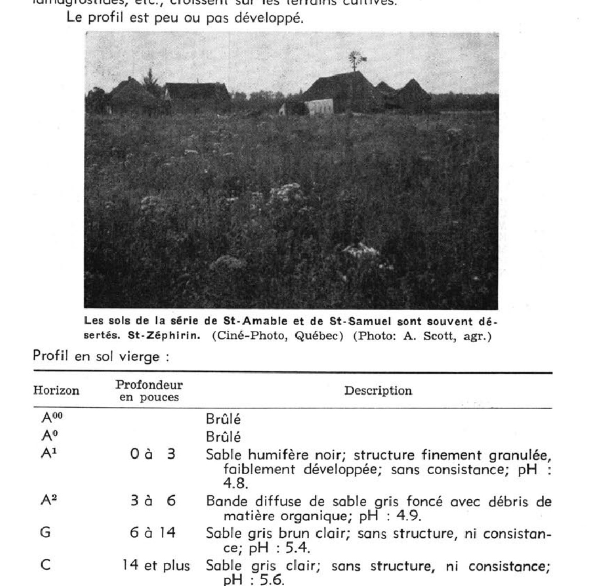
| Horizon | Profondeur en pouces | Description |
|---|---|---|
| A00 | Brûlé | |
| A0 | Brûlé | |
| A1 | 0 à 3 | Sable humifère noir; structure finement granulée, faiblement développée; sans consistance; pH : 4.8. |
| A2 | 3 à 6 | Bande diffuse de sable gris foncé avec débris de matière organique; pH : 4.9. |
| G | 6 à 14 | Sable gris brun clair; sans structure, ni consistance; pH : 5.4. |
| C | 14 et plus | Sable gris clair; sans structure, ni consistance; pH : 5.6. |
| RESULTATS ANALYTIQUES | |||
|---|---|---|---|
|
Paroisse et numéro de l'échantillon |
St-Zéphirin (5) |
||
| Type ................................................................................................................................................... | Sable de St-Samuel | ||
| No de laboratoire ....................................................................................................................... | 20405 | 20406 | 20407 |
| Horizon ..................................................................................................................................... | Ac | G | C |
| Profondeur en pouces ....................................................................................................... | 0–8 | 8–14 | 14+ |
|
Analyse physique Détritus .............................................................................................................................. Sable ................................................................................................................................. Limon ............................................................................................................................... Argile ................................................................................................................................ Humidité .......................................................................................................................... Perte au feu ....................................................................................................................... C organique ...................................................................................................................... Matière organique ........................................................................................................... |
% 0.0 85.8 9.9 4.3 1.0 5.3 3.06 5.27 |
% 0.0 89.6 6.4 4.0 0.8 2.3 1.08 1.86 |
% 0.0 95.9 2.9 1.3 0.2 0.5 0.22 0.37 |
| Analyse chimique : | |||
|
SiO2 ...................................................................................................................................... R2O3 ..................................................................................................................................... CaO ................................................................................................................................... MgO ................................................................................................................................... K2O ..................................................................................................................................... Mn3O4 .................................................................................................................................. P2O5 ..................................................................................................................................... N ........................................................................................................................................ |
75.1 14.0 1.61 0.74 1.84 0.04 0.11 0.16 |
74.8 15.6 2.13 1.00 2.02 0.05 0.18 0.05 |
73.6 17.3 2.82 1.21 2.19 0.09 0.23 0.04 |
| Réaction : | |||
|
pH ..................................................................................................................................... Besoin en CaCO3 — livres par acre .................................................................................. |
5.0 8000 |
5.5 6200 |
5.8 2500 |
| Bases échangeables ........................................................................................................ | (m.e. par 100 grs. de sol) | ||
|
Bases totales ..................................................................................................................... Ca ................................................................................................................................. Mg ................................................................................................................................ Mn ................................................................................................................................ K .................................................................................................................................. Hydrogène ........................................................................................................................ |
2.0 1.1 0.5 0.05 0.08 8.0 |
2.0 1.0 0.5 0.01 0.03 6.2 |
1.5 0.5 0.5 0.01 0.03 2.5 |
| (livres par acre) | |||
|
Ca ..................................................................................................................................... Mg ..................................................................................................................................... Mn ..................................................................................................................................... K ....................................................................................................................................... |
440 120 30 60 |
400 120 6 20 |
200 120 6 20 |
| Horizon | Profondeur en pouces |
Description |
|---|---|---|
| Ac | 0 à 7 | Sable humifère, noirâtre; pH : 5.0-5.8. |
| G | 7 à 14 | L'épaisseur varie de 5 à 10 pouces. |
| C | 14 et plus | Sable, gris tacheté de rouille; sans structure ni consistance; pH : 5.5-6.0. L'épaisseur varie de 6 à 10 pouces. |
| Sable, gris bleu; sans structure, parfois tassé; pH : 5.8-6.5. |
Le sable de l'horizon C dégage des gaz d'acide sulfhydrique (gaz puant). Cet horizon C peut souvent se subdiviser en C1 et C2; dans ce cas, C1 est moucheté de rouille.
En terrain cultivé, la couleur gris brun foncé du labour est due à l'abondance d'une matière organique mal décomposée. La valeur agricole est pauvre et le drainage reste à la base de toute l'amélioration du sable de la série de St-Samuel.
Le sable de St-Samuel offre souvent des variations soit dans la texture de la surface, soit dans la quantité de matière organique ou sait dans la couleur du profil. La surface varie souvent d'un sable à un sable limoneux, parfois à limon sableux.
La couleur du profil est généralement pâle. Cependant, on peut trouver, dans des régions à drainage mauvais, sous l'horizon sableux gris pâle avec taches de rouille une couche de sable généralement grossier de teinte brun rouille.
La série d'Aston est un sable mince sur argile à drainage mauvais. Cette série n'est représentée que par un seul type : le sable d'Aston.
Sable d'Aston (15275 acres) As.

Les sols de la série d'Aston se rencontrent un peu partout dans le comté d'Yamaska. Ils sont souvent en association avec le sable de St-Damase ou le sable de St-Samuel. Le sable d'Aston est une alluvion Champlain constituée de sable siliceux. La topographie est une plaine unie.
La couleur du profil est plutôt claire :
| Horizon | Profondeur en pouces | Description |
|---|---|---|
| Ac | 0 à 7 | Sable brun foncé à noirâtre; sans structure, consistance friable; pH : 5.6-6.0. |
| G | 7 à 15 | Sable gris jaunâtre avec taches de rouille; sans structure ni consistance; pH : 6.0-6.9. |
| D | 15 et plus | Argile gris bleu; structure massive, consistance très collante et plastique. |
La profondeur du substratum varie de 12 à 24 pouces, parfois jusqu'à 30 pouces.
La couleur de la surface du terrain labouré est brun foncé. La grande culture et l'industrie laitière se pratiquent communément sur le sable de la série d'Aston.
| Paroisse et numéro de l'échantillon : | St-Guillaume (52) |
St-David (18) |
Pierreville (58) |
||||||
|---|---|---|---|---|---|---|---|---|---|
| Sable d'Aston | |||||||||
| No de laboratoire | 20550 | 20551 | 20552 | 20516 | 20517 | 20518 | 20881 | 20882 | 20883 |
| Horizon | Ac | G | D | Ac | G | D | Ac | G | D |
| Profondeur en pouces | 0-8 | 8-14 | 14+ | 0-7 | 7-15 | 15+ | 0-8 | 8-16 | 16+ |
| Analyse physique | |||||||||
| Détritus | 0.0 | 0.5 | 0.0 | 0.0 | 0.0 | 0.0 | 0.0 | 0.0 | 1.0 |
| Sable | 87.2 | 94.2 | 16.4 | 87.2 | 90.7 | 15.6 | 84.0 | 91.8 | 45.8 |
| Limon | 9.9 | 4.9 | 46.8 | 9.0 | 5.0 | 6.4 | 10.2 | 6.2 | 17.2 |
| Argile | 2.9 | 0.9 | 36.8 | 3.8 | 4.3 | 78.0 | 5.8 | 2.0 | 37.0 |
| Humidité | 0.7 | 0.1 | 1.8 | 0.4 | 0.7 | ||||
| Perte au feu | 4.0 | 0.2 | 1.9 | 2.8 | 4.3 | ||||
| C organique | 2.37 | 0.20 | 0.28 | ||||||
| Matière organique | 4.00 | 0.34 | 0.48 | ||||||
| Analyse chimique | |||||||||
| SiO² | 74.0 | 76.1 | 69.1 | ||||||
| R²O³ | 16.6 | 17.3 | 21.6 | ||||||
| CaO | 2.28 | 2.55 | 1.89 | ||||||
| MgO | 0.92 | 1.03 | 1.74 | ||||||
| K²O | 1.68 | 1.56 | 2.30 | ||||||
| Mn³O⁴ | 0.06 | 0.08 | 0.05 | ||||||
| P²O⁵ | 0.24 | 0.19 | 0.18 | ||||||
| N | 0.16 | 0.02 | 0.24 | ||||||
| Réaction : | |||||||||
| pH | 5.9 | 6.4 | 6.6 | 6.6 | 6.3 | 6.7 | 6.0 | 6.5 | 6.8 |
| Besoin en CaCO³ livres par acre | 6100 | 1700 | 3200 | ||||||
| Bases échangeables : (m.e. par 100 grs. de sol) | |||||||||
| Bases totales | 5.0 | 3.0 | 4.0 | ||||||
| Ca | 2.8 | 1.0 | 1.3 | ||||||
| Mg | 1.5 | 1.1 | 2.4 | ||||||
| Mn | 0.15 | 0.04 | trace | ||||||
| K | 0.25 | 0.10 | 0.05 | ||||||
| Hydrogène | 6.1 | 1.7 | 3.2 | ||||||
| (livres par acre) | |||||||||
| Ca | 1120 | 400 | 520 | ||||||
| Mg | 360 | 260 | 540 | ||||||
| Mn | 80 | 20 | trace | ||||||
| K | 200 | 80 | 40 | ||||||
En améliorant le drainage et en appliquant les engrais riches en acide phosphorique, le sol se prête bien à l'établissement de pâturages fertilisés sur vieilles prairies. Cependant, comme dans le cas des sables de la série de St-Jude, sa valeur agricole est plutôt pauvre.
La série de St-Amable est constituée d'un caténa de drainage.
Le sable de St-Amable couvre une superficie assez importante du comté, soit environ 14.6 de son étendue totale. Cette série est plutôt un caténa des sables des séries de St-Jude, de St-Samuel, de Ste-Sophie et occasionnellement de Sorel. La topographie du sable de St-Amable est celle d'une plaine plus ou moins ondulée et ressemble beaucoup à la surface d'une mer houleuse.
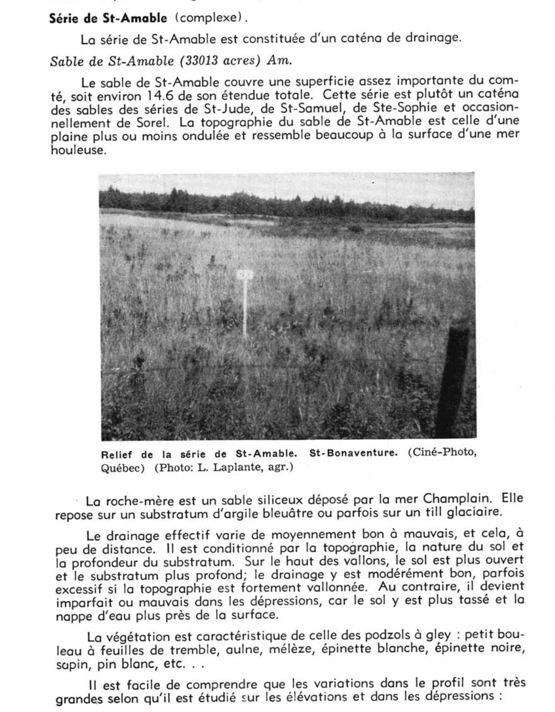
La roche-mère est un sable siliceux déposé par la mer Champlain. Elle repose sur un substrat d'argile bleuâtre ou parfois sur un till glaciaire.
Le drainage effectif varie de moyennement bon à mauvais, et cela, à peu de distance. Il est conditionné par la topographie, la nature du sol et la profondeur du substrat. Sur le haut des vallons, le sol est ouvert et le substrat plus profond; le drainage y est modérément bon, parfois excessif si la topographie est fortement vallonnée. Au contraire, il devient imparfait ou mauvais dans les dépressions, car le sol y est plus tassé et la nappe d'eau plus près de la surface.
La végétation est caractéristique de celle des podzols à gley : petit bouleau à feuilles de tremble, aulne, mélèze, épinette blanche, épinette noire, sapin, pin blanc, etc...
Il est facile de comprendre que les variations dans le profil sont très grandes selon qu'il est étudié sur les élévations et dans les dépressions :
a) Sol vierge sur les élévations :
| Horizon | Profondeur en pouces |
Description |
|---|---|---|
| A⁰ | 0 à 1 | Feuilles mortes avec un peu d'humus acide de coloration noire. |
| A¹ | 1 à 4 | Sable de teinte noire à brun foncé, fortement humifère et peu minéralisé; sans structure, consistance friable; pH : 4.5-5.8. |
| A² | 4 à 7 | Sable, gris cendré; sans structure ni consistance; épaisseur variable; descend dans l'horizon B sous forme de langues irrégulières; pH : 5.5-6.0. |
| B (G) | 7 à 15 | Sable, brun rouge; sans structure, consistance friable. L'ortstein ferrugineux est presque toujours absent; pH : 5.0-6.0. L'horizon B peut souvent se diviser en B¹ et B². |
| C | 15 et plus | Sable micacé de teinte grise avec un peu de gley; sans structure, parfois tassé; pH : 5.8-6.5. |
b) Sol vierge dans les dépressions, à quelques pieds du profil précédent :
| Horizon | Profondeur en pouces |
Description |
|---|---|---|
| A⁰ | 0 à 2 | Feuilles mortes avec un peu d'humus acide de coloration noire. |
| A¹ | 2 à 5 | Sable de teinte noire fortement humifère; sans structure, consistance friable; pH : 5.5-5.8. |
| A² | 5 à 6 | Sable, gris cendré; parfois absent ou en langues irrégulières et sinueuses; pH : 5.5-5.8. |
| G (B) | 6 à 15 | Sable, gris à jaune pâle, tacheté de gley; sans structure, consistance ferme; pH : 5.5-6.0. |
| C | 15 et plus | Sable, gris; tassé; pH : 6.0-6.5. |
Les champs labourés sont de teinte plus claire sur les élévations et plus foncée dans les dépressions.
En général, le sable de St-Amable est très acide, pauvre en humus et très pauvre en éléments nutritifs. On peut parfois l'améliorer en vue de cultures spécialisées, mais il ne faut pas perdre de vue qu'il sera toujours un sol très pauvre. Il est préférable de laisser en forêt les lots classifiés dans la série de St-Amable. Ce sont des lots absolument impropres à la colonisation.
Comme dans le cas de la série de St-Amable, la série de De Guire est constituée du même catena de drainage et de la même roche-mère. Le St-Amable est un sol profond, tandis que le De Guire est un sol mince sur argile.
Cette série de sol a été établie dans le comté d'Yamaska et occupe une superficie de 4879 acres. La topographie est identique à celle de la série de St-Amable.
La roche-mère est un sable siliceux d'origine Champlain. Son substratum argileux repose à moins de trois pieds de la surface, généralement entre 15 et 24 pouces.
Le drainage varie de bon à mauvais à peu de distance, selon la topographie et la profondeur du substratum.
La végétation est variée : érable rouge, merisier, orme, sapin, épinette, tilleul, pin blanc, etc..
Les variations dans la topographie et la profondeur du substratum causent des changements brusques dans le profil :
| Horizon | Profondeur en pouces |
Description |
|---|---|---|
| A0 | 0 à 1 | Feuilles mortes de couleur noir faiblement décomposées. |
| A1 | 1 à 3 | Sable gris brun foncé, fortement humifère; sans structure ni consistance; pH : 4.2. |
| A2 | 3 à 6 | Couche irrégulière de sable gris clair; sans structure, ni consistance; pH : 4.4-4.7. |
| B1 | 6 à 10 | Sable brun rouge; sans structure, ni consistance; pH : 5.2-5.5. |
| B2 | 10 à 16 | Sable brun rouge foncé; sans structure, ni consistance; présence occasionnelle d'ortstein ferrugineux; présence de gley; pH : 5.7-6.0. |
| C | 16 à 18 | Sable gris avec gley; horizon souvent absent; pH : 6.0-6.5. |
| D | 18 et plus | Argile gris jaune devenant gris bleu en profondeur; structure prismatique, cansistance plastique; pH : 6.2-6.7. |
b) Sol vierge dans les dépressions :
| Horizon | Profondeur en pouces |
Description |
|---|---|---|
| A0 | 0 à 2 | Feuilles mortes de coloration noire. |
| A1 | 2 à 5 | Sable noir, fortement humifère; sans structure, ni consistance; pH : 5.5-5.8. |
| A2 | 5 à 6 | Sable gris; parfois absent; pH : 5.5-5.8. |
| G | 6 à 15 | Sable gris à jaune pâle, tacheté de gley; sans structure, ni consistance; pH : 5.6-6.0. |
| D | 15 et plus | Argile gris bleu; massive et plastique; pH : 6.2-6.7. |
La plus grande superficie de cette série de sol est en forêt. Les champs labourés ont une teinte plus claire sur les élévations et plus foncée dans les dépressions. La valeur agricole du sable de De Guire est médiocre, se rapprochant beaucoup de celle du sable de St-Amable.
Limon sableux des Orignaux (899 acres) Or.
Dans le comté d'Yamaska, le limon sableux des Orignaux se rencontre surtout sur quelques berges de rivière.
La roche-mère, un limon sableux, fut déposée à la fin de la période Champlain. La topographie est ondulée au légèrement vallonnée. Il y a danger d'érosion sur les berges.
Le drainage effectif du sol est imparfait, surtout lorsque le limon sableux des Orignaux voisine le sable de la série de St-Jude.
Seuls quelques arbres isolés : pin blanc, érable rouge, orme, etc...., donnent une faible idée de la végétation naturelle de ce sol qui est entièrement cultivé.
| Paroisse et numéro de l'échantillon: |
St-Elphège (31) |
La Visitation (131) |
||||||
|---|---|---|---|---|---|---|---|---|
| Type | Limon sableux des Orignaux | |||||||
| No de laboratoire | 20431 | 20432 | 20433 | 20434 | 20954 | 20955 | 20956 | 20957 |
| Horizon | Ac | B1 | B2 | C | Ac | B1 | B2 | C |
| Profondeur en pouces | 0-8 | 8-15 | 15-24 | 24 | 0-8 | 8-16 | 16-25 | 25 |
| Analyse physique | ||||||||
| Détritus | 0.5 | 0.0 | 0.0 | 1.0 | 0.3 | 4.5 | 0.0 | 0.0 |
| Sable | 60.0 | 54.4 | 58.0 | 66.4 | 73.6 | 87.2 | 71.2 | 54.8 |
| Limon | 33.6 | 38.6 | 36.6 | 28.8 | 15.2 | 8.6 | 17.6 | 30.0 |
| Argile | 6.4 | 7.0 | 5.4 | 4.8 | 11.2 | 4.2 | 11.2 | 15.2 |
| Humidité | 1.8 | 1.1 | 0.7 | 0.5 | 1.1 | 0.5 | 0.8 | 0.9 |
| Perte au feu | 5.4 | 3.2 | 1.3 | 1.0 | 4.3 | 1.6 | 1.3 | 1.0 |
| C organique | 2.30 | 0.52 | 0.22 | 0.11 | 1.85 | 0.22 | 0.36 | 0.10 |
| Matière organique | 3.96 | 0.89 | 0.37 | 0.19 | 3.19 | 0.37 | 0.61 | 0.17 |
| Analyse chimique: | ||||||||
| SiO2 | 72.6 | 75.2 | 75.0 | 75.0 | 69.6 | 71.0 | 70.0 | 69.4 |
| R2O3 | 16.3 | 15.7 | 15.8 | 15.9 | 19.4 | 20.6 | 20.8 | 20.9 |
| CaO | 1.62 | 1.69 | 1.94 | 1.94 | 2.94 | 3.17 | 3.19 | 3.24 |
| MgO | 0.80 | 0.86 | 1.09 | 1.17 | 1.13 | 1.19 | 1.47 | 1.91 |
| K2O | 1.63 | 1.80 | 1.99 | 2.11 | 2.33 | 2.23 | 2.43 | 3.10 |
| Mn3O4 | 0.06 | 0.05 | 0.07 | 0.09 | 0.08 | 0.08 | 0.09 | 0.09 |
| P2O5 | 0.28 | 0.17 | 0.23 | 0.19 | 0.16 | 0.21 | 0.25 | 0.28 |
| N | 0.20 | 0.07 | 0.05 | 0.04 | 0.15 | 0.07 | 0.03 | 0.02 |
| Réaction: | ||||||||
| pH | 6.0 | 6.4 | 6.8 | 6.8 | 6.8 | 6.6 | 6.8 | 7.0 |
| Besoin en CaCO3 livres par acre |
6100 | 2600 | 2500 | 2100 | 1000 | 0 | 0 | 0 |
| Bases échangeables (m.e. par 100 grs. de sol) | ||||||||
| Bases totales | 6.0 | 4.0 | 4.0 | 3.0 | 18.0 | 6.0 | 11.0 | 16.0 |
| Ca | 4.6 | 2.0 | 1.5 | 1.3 | 11.0 | 3.9 | 7.2 | 9.4 |
| Mg | 1.1 | 1.1 | 1.5 | 0.9 | 5.0 | 1.2 | 3.3 | 5.8 |
| Mn | 0.29 | 0.02 | 0.25 | 0.07 | 0.42 | 0.02 | 0.20 | 0.19 |
| K | 0.15 | 0.03 | 0.10 | 0.13 | 0.39 | 0.07 | 0.19 | 0.61 |
| Hydrogène | 6.1 | 2.6 | 2.5 | 2.1 | 1.0 | 0.0 | 0.0 | 0.0 |
| (livres par acre) | ||||||||
| Ca | 1840 | 800 | 600 | 520 | 4400 | 1560 | 2880 | 3760 |
| Mg | 260 | 260 | 360 | 220 | 1220 | 300 | 800 | 1420 |
| Mn | 160 | 12 | 140 | 40 | 240 | 14 | 100 | 100 |
| K | 120 | 20 | 80 | 100 | 300 | 60 | 140 | 480 |
| Horizon | Profondeur en pouces |
Description |
|---|---|---|
| Ac | 0 à 7 | Limon sableux brun jaunâtre, moyennement humifère; structure finement granulée et consistance très friable; pH : 6.0. |
| A² | Sable gris cendré; couche très mince parfois absente. | |
| BG | 7 à 20 | Limon sableux brun à jaune foncé, tacheté de rouillle; contient de légères concrétions ferrugineuses pisiformes; structure finement granulée ou lamellaire, consistance friable; pH : 6.4. L'horizon B peut se subdiviser très souvent en B¹ et B². |
| C | 20 et plus | Limon sableux moucheté, jaune faible à grisâtre; structure lamellaire et cansistance friable; pH : 6.8. |
Dans le comté d'Yamaska, la série des Orignaux semble un peu moins acide que dans le comté de Nicolet.
La texture varie souvent entre celle d'un limon et celle d'un limon sableux. On peut aussi rencontrer des variations dans la profondeur du profil, surtout dans les zones de transition entre le limon sableux des Orignaux et l'argile de Ste-Rosalie.
La surface labourée est un limon sableux brun tacheté de blanc, de jaune et de noir.
Dans le comté d'Yamaska, le sol est surtout utilisé pour la grande culture et les pâturages. On peut produire avantageusement des récoltes spécialisées. Les éléments nutritifs sont bien équilibrés mais à un niveau beaucoup trop faible. Le sol est acide et pauvre en magnésium échangeable. Il faut corriger par un chaulage à la chaux dolomitique.
Cette série comprend un seul type : le limon sableux des Saults.
Limon sableux des Saults (3226 acres) So.
C'est une alluvion Champlain ayant un limon argileux comme roche-mère. Sa topographie est plane et son drainage effectif, imparfait.
L'orme, le cerisier, le bouleau et le pin blanc s'élèvent épars dans les champs tandis que le sol supporte une végétation calcifuge : mousse, vesce, verge d'or, renoncule âcre, pissenlit, oxalide d'Europe, chardon des champs, etc...
Les profils en terrains vierges sont rares dans le comté d'Yamaska, car ces sols sont défrichés et ensemencés depuis longtemps.
| Paroisse et numéro de l'échantillon: |
La Visitation (63) |
St.-Joachim (38) |
Pierreville (118) |
||||||||
|---|---|---|---|---|---|---|---|---|---|---|---|
| 20886 | 20887 | 20888 | 20889 | 20438 | 20439 | 20440 | 20941 | 20942 | 20943 | 20944 | |
| Type .................................... | Limon à limon sableux des Saults | ||||||||||
| No de laboratoire ..... | 20886 | 20887 | 20888 | 20889 | 20438 | 20439 | 20440 | 20941 | 20942 | 20943 | 20944 |
| Horizon ............................. | Ac | B(G1) | G2 | C | Ac | B(G) | C | Ac | B(G1) | G2 | C |
| Profondeur en pouces | 0-7 | 7-15 | 15-26 | 26+ | 0-8 | 8-16 | 16+ | 0-8 | 8-15 | 15-24 | 24+ |
| Analyse physique: Détritus ........................ Sable ............................. Limon ........................... Argile ........................... Humidité ...................... Perte au feu ............... C organique ................ Matière organique |
% 0.5 71.2 16.8 12.0 0.8 2.4 1.12 1.91 |
% 0.3 46.8 27.2 26.0 2.3 1.9 0.25 0.43 |
% 0.0 43.2 22.8 34.0 2.6 1.7 0.09 0.16 |
% 0.0 33.2 12.8 54.0 3.1 2.3 0.17 0.31 |
% 6.0 45.6 30.8 23.6 1.2 4.6 |
% 3.0 55.2 20.8 24.0 |
% 0.0 25.2 12.8 62.0 |
% 1.0 70.8 17.2 12.0 0.9 4.5 |
% 0.0 52.8 31.2 16.0 |
% 0.0 47.2 41.6 11.2 |
% 0.0 45.2 44.0 10.8 |
| Analyse chimique: SiO2 .............................. R2O3 ............................. CaO ............................. MgO ............................. K2O .............................. Mn3O4 ......................... P2O5 ............................. N. ................................ |
70.8 19.6 2.70 1.03 2.29 0.06 0.23 0.10 |
67.0 22.4 2.80 1.71 2.39 0.07 0.25 0.04 |
66.5 23.5 2.74 2.23 2.49 0.13 0.30 0.01 |
63.4 23.0 2.71 2.87 2.73 0.13 0.23 0.03 |
|||||||
| Réaction: pH ................................ Besoin en CaCO3 livres par acre ......... |
6.0 2600 |
6.3 3300 |
6.6 1200 |
6.7 2500 |
5.7 |
6.1 |
6.6 |
6.0 |
6.2 |
6.7 |
7.0 |
| Bases échangeables... (m.e. par 100 grs. de sol) | |||||||||||
|
Bases totales ......... Ca ................................ Mg ............................... Mn ............................... K .................................. Hydrogène ............... |
8.0 4.2 2.6 0.07 0.03 2.6 |
20.0 9.7 9.1 0.25 0.08 3.3 |
20.0 10.5 8.5 0.33 0.28 1.2 |
26.0 13.4 9.5 0.40 0.69 2.5 |
|||||||
| (livres par acre) | |||||||||||
|
Ca ................................ Mg ............................... Mn ............................... K .................................. |
1680 640 80 100 |
3880 2200 140 60 |
4200 2080 180 220 |
5360 2320 220 540 |
|||||||
| Horizon | Profondeur en pouces | Description |
|---|---|---|
| Ac | 0 à 7 | Limon à limon sableux brun pâle; structure granuleuse et consistance friable; pH : 5.7-6.0. L'épaisseur varie de 6 à 10 pouces. |
| B(G) | 7 à 16 | Limon à limon argileux gris jaunâtre, tacheté de rouille; structure granuleuse et consistance friable; pH : 6.1-6.3. L'épaisseur varie de 6 à 12 pouces. |
| C | 16 et plus | Limon argileux de couleur grise, légèrement tacheté de rouille; structure massive et consistance ferme; pH : 6.6-7.0. |
| Horizon | Profondeur en pouces | Description |
|---|---|---|
| A⁰ | 0 à 1 | Feuilles mortes, à demi décomposées. |
| A¹ | 1 à 2 | Limon sableux noir, très humifère; structure granuleuse et consistance friable; pH : 5.4. |
| A² | 2 à 5 | Limon sableux gris; structure feuilletée, consistance friable; pH : 5.5. |
| B(G¹) | 5 à 7 | Limon argileux jaune foncé tacheté de rouille; structure granuleuse et consistance friable; pH : 6.3. |
| G² | 7 à 22 | Limon argileux gris jaunâtre tacheté de rouille; structure grossièrement feuilletée, consistance friable; pH : 6.6. |
| C | 22 et plus | Limon argileux gris, légèrement tacheté de rouille; structure massive et consistance ferme; pH : 6.7. |
Il y a des variations dans la texture, surtout dans le solum. La surface du sol est un limon à limon sableux, brun pâle se prêtant bien à la grande culture et à l'industrie laitière. Le sol est de bonne valeur agricole et se travaille bien.
La série des Saults s'apparente avec la série de St-Aimé et la série de Levrard. Les sols de la série de St-Aimé possèdent des horizons G et C interstratifiés de sable et d'argile et un drainage effectivement mauvais. Les sols de la série de Levrard s'en distinguent par un solum et une roche-mère de texture plus lourde.
Les analyses chimiques révèlent que les sols de la série des Saults ont une faible capacité d'échange et un faible pourcentage de saturation. De plus, les éléments nutritifs de base sont bien équilibrés mais leur niveau est bas. Les remèdes à apporter sont : augmentation des colloïdes organiques, choulage, engrais chimique, en tenant compte de l'exigence des récoltes.
La série de St-Aimé ne comprend qu'un seul type :
Limon sableux de St-Aimé (1809 acres) Ai.
La série de St-Aimé fut établie dans le comté de Richelieu. La roche-mère est constituée d'un mélange d'argile et de sable déposés en strates. La topographie très unie et la nature imperméable des strates d'argile conditionnent le drainage des sols de la série de St-Aimé; drainages externe et interne très lents et drainage effectif, mauvais.
La hache et la charrue ont grandement contribué à faire disparaître la végétation naturelle. De nos jours, il y croît l'orme, l'érable rouge, le bouleau, l'épinette. Les champs abandonnés ou mal cultivés poussent la vesce, la verge d'or, l'aster, le chardon des champs, la renoncule âcre, le pissenlit, etc. . .
| Horizon | Profondeur en pouces | Description |
|---|---|---|
| Ac | 0 à 8 | Limon sableux brun noirâtre; granuleuse et friable; pH : 5.6. |
| G | 8 à 20 | Limon sableux à limon argileux (texture variable : argile et sable interstratifiés) gris pâle avec présence de rouille; structure lamellaire et consistance friable; pH : 6.4. |
| C | 20 et plus | Limon à limon argileux (texture variable : argile et sable interstratifiés) gris bleuâtre; structure lamellaire à massive et consistance collante; pH : 6.6. |
Il existe beaucoup de variations dans la texture dues aux différentes épaisseurs des strates d'argile et de sable.
La surface cultivée est généralement un limon sableux, brun noirâtre, traversée par des raies de curage gris rouille.
Jusqu'ici les sols de la série de St-Aimé ont été exploités en vue de la grande culture et de l'industrie laitière. Ils répondent bien à cette vocation culturale si le drainage est amélioré. L'introduction de cultures spécialisées dans la rotation aurait de bons effets sur ces sols de valeur agricole moyenne.
| RESULTATS ANALYTIQUES | |||||||||||||||||||||||||||||
|---|---|---|---|---|---|---|---|---|---|---|---|---|---|---|---|---|---|---|---|---|---|---|---|---|---|---|---|---|---|
| Paroisse et numéro de l'échantillon |
St-François-du-Lac (115) |
||||||||||||||||||||||||||||
| Type ............................................................................................................ | Limon sableux de St-Aimé | ||||||||||||||||||||||||||||
| No de laboratoire ...................................................................................... |
|
||||||||||||||||||||||||||||
| Horizon .................................................................................................... |
|
||||||||||||||||||||||||||||
| Profondeur en pouces ........................................................................ |
|
||||||||||||||||||||||||||||
|
Analyse physique Détritus ........................................................................ Sable ............................................................................. Limon ............................................................................ Argile ........................................................................... Humidité ...................................................................... Perte au feu ................................................................ C organique ................................................................ Matière organique ..................................................... |
|
||||||||||||||||||||||||||||
|
Analyse chimique : SiO² ............................................................................ R²O³ ............................................................................ CaO ............................................................................ MgO ............................................................................ K²O ............................................................................ Mn³O⁴ ........................................................................ P²O⁵ ............................................................................ N ................................................................................ |
|
||||||||||||||||||||||||||||
|
Réaction : pH ............................................................................ Besoin en CaCO³ — livres par acre ............................ |
|
||||||||||||||||||||||||||||
| Bases échangeables .............................................................. | (m.e. par 100 grs. de sol) | ||||||||||||||||||||||||||||
|
Bases totales .............................................................. Ca ..................................................................... Mg .................................................................... Mn .................................................................... K ...................................................................... Hydrogène ................................................................ |
|
||||||||||||||||||||||||||||
| (livres par acre) | |||||||||||||||||||||||||||||
|
Ca ............................................................................ Mg ............................................................................ Mn ............................................................................ K .............................................................................. |
|
||||||||||||||||||||||||||||
88ETUDE DES SOLS DU COMTÉ D'YAMASKA
La série de Levrard tire son nom du canton de Levrard, comté de Nicolet. Dans le comté d'Yamaska, elle ne comprend qu'un type : le limon argileux de Levrard.
La nature de la roche-mère est un limon argileux ou une argile déposée par la mer Champlain. Elle contient ordinairement de 70 à 85% de limon et d'argile en proportion à peu près égale. Dans de nombreuses coupes pouvant mesurer jusqu'à 75 pieds de profondeur rencontrées dans le comté de Nicolet, la roche-mère est de texture à peu près identique et forme de l'argile sous l'effet de la pression.
La topographie est unie ou subhorizontale. L'eau pénètre lentement dans ce sol imparfaitement drainé. L'érosion en rigolets et en ravins est à craindre sur les bords des rivières et des coulées. Plusieurs cas se constatent sur les sols de cette série, tout particulièrement lorsque le labours est fait dans le sens de la pente et que les raies de curage sont ouvertes jusque sur les berges de la rivière ou de la coulée.
La première végétation naturelle est disparue et remplacée par quelques ormes, et par de rares pins blancs. Le profil ressemble beaucoup aux gleys :
| Horizon | Profondeur en pouces | Description |
|---|---|---|
| Ac | 0 à 8 | Limon argileux brun grisâtre; structure granuleuse et consistance friable; pH : 5.0-6.0. |
| A² | 8 à 12 | Limon argileux blanchâtre; structure en miettes; l'épaisseur varie de 2 à 4 pouces; pH : 5.0-6.0. |
| G | 12 à 22 | Limon argileux à argile gris jaunâtre fortement tachetée de rouille; structure nuciforme et consistance collante; l'épaisseur varie de 7 à 12 pouces; pH : 5.4-7.1. |
| C | 22 et plus | Limon argileux lourd à argile gris bleu; structure nuciforme et consistance collante; pH : 6.0-7.5. |
La couche blanchâtre appelée A² se voit toujours sous la couche de labour.
Le terrain cultivé est un limon argileux, brun grisâtre, sans roches ni cailloux. La grande culture et l'industrie laitière sont généralement pratiquées sur ces sols.
| RESULTATS ANALYTIQUES | ||||
|---|---|---|---|---|
|
de l'échantillon Paroisse et numéro |
Ste-Brigitte (Nicolet) |
|||
| Type ................................................................................................................... | Limon argileux de Lévrard | |||
| No de laboratoire .............................................................................................. |
|
|||
| Horizon ............................................................................................................. |
|
|||
| Profondeur en pouces ................................................................................... |
|
|||
|
Analyse physique Détritus .............................................................................................. Sable ................................................................................................. Limon ............................................................................................... Argile ............................................................................................... Humidité ........................................................................................... Perte au feu ...................................................................................... C organique ..................................................................................... Matière organique ........................................................................... |
|
|||
| Analyse chimique : | ||||
|
SiO² ................................................................................................... R²O³ ................................................................................................... CaO .................................................................................................. MgO .................................................................................................. K²O ................................................................................................... Mn³O⁴ ............................................................................................... P²O⁵ .................................................................................................. N ....................................................................................................... |
|
|||
| Réaction : | ||||
|
pH ................................................................................................... Besoin en CaCO³ — livres par acre ................................................ |
|
|||
| Bases échangeables ........................................................................ | (m.e. par 100 grs. de sol) | |||
|
Bases totales ..................................................................................... Ca ............................................................................................. Mg ............................................................................................. Mn ............................................................................................. K ............................................................................................... Hydrogène .................................................................................. |
|
|||
| (livres par acre) | ||||
|
Ca ................................................................................................... Mg ................................................................................................... Mn ................................................................................................... K ..................................................................................................... |
|
|||
Dans le comté d'Yamaska, ces alluvions sont représentées par deux séries : l'argile de Ste-Rosalie et l'argile de Rideau. Dans ces séries la roche-mère est beaucoup plus lourde et contient généralement de 60 à 80% d'argile (Bouyoucos). Dans la série de Levrard le sous-sol contient une moyenne de 30 à 45% d'argile, rarement 55%.
Cette série a été cartographiée dans le comté de Carleton, Ontario; elle se rencontre sur la Ferme Expérimentale Centrale. Dans le comté d'Yamaska elle ne comprend qu'un type : l'argile de Rideau, et une phase : l'argile de Rideau avec "taches" de sable à la surface.
L'argile de Rideau est située sur la deuxième terrasse reliant la ville de Nicolet à la Baie-du-Febvre et dans les paroisses de St-Zéphirin et d'Yamaska.
C'est une argile déposée par la mer Champlain. La topographie, légèrement vallonnée, est fréquemment brisée par des coulées larges et profondes. Ces anciennes berges sont grandement sujettes à l'érosion.
Le drainage externe est lent. La structure du sol favorise un peu le drainage interne qui varie de modérément bon à lent.
La végétation actuelle comprend l'orme, le hêtre et l'érable rouge. La surface des champs et le profil sont libres de roches.
Dans le comté d'Yamaska, tous les sols appartenant à cette série sont cultivés.
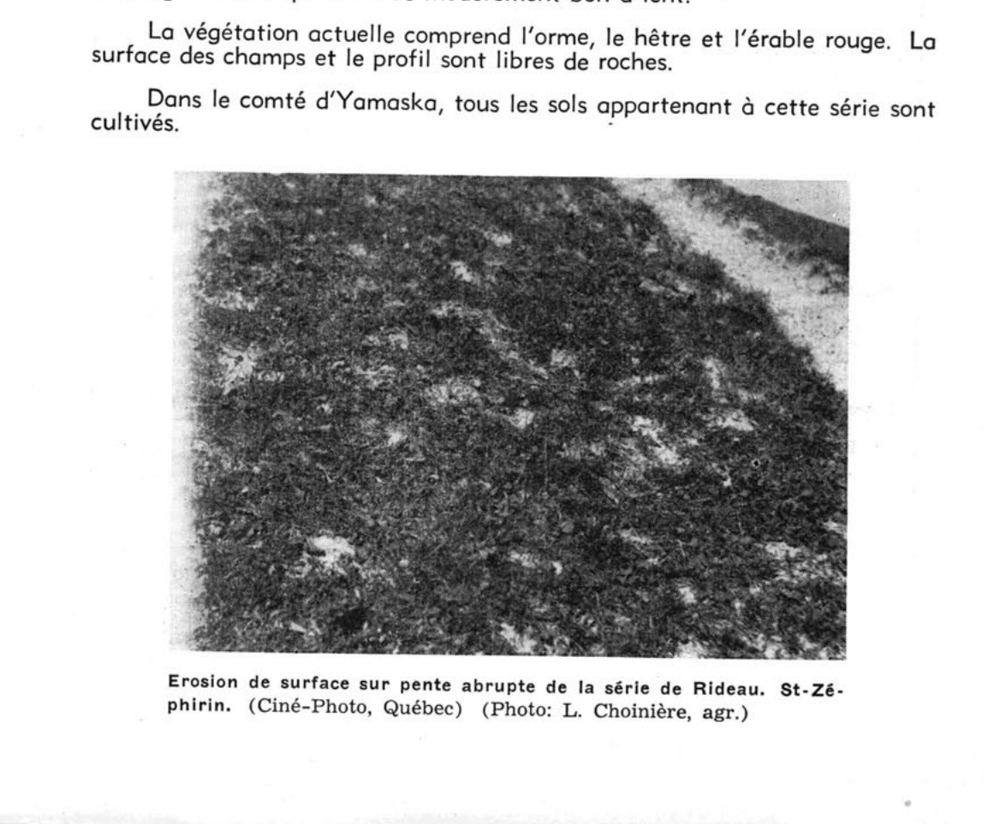
| Horizon | Profondeur en pouces |
Description |
|---|---|---|
| Ac | 0 à 7 | Argile faiblement humifère de teinte brune à l'état humide et blanchissant à l'état sec; structure granuleuse, consistance friable; pH : 5.4. |
| A² | trace | Argile gris pâle. |
| B (G) | 7 à 20 | Argile lourde brun à jaune; les taches de rouille ne prédominent pas et sont concentrées à la base; structure fragmentaire grossièrement développée, consistance collante; pH : 5.5-5.9. |
| C | 20 et plus | Argile très lourde gris jaune; structure massive, consistance très collante; le sol ne fait pas effervescence au contact de l'acide dilué; pH : 6.5. |
Dans les coupes séchées à l'air, le sol a une apparence grisâtre ou blanchâtre. Les champs cultivés possèdent une coloration brun pâle tirant sur le gris.
L'argile de Rideau possède une bonne valeur agricole pour la grande culture et l'industrie laitière. Des cultures spécialisées telles que le lin, la betterave à sucre, etc., y ont donné d'excellents résultats.
Les principales mesures à suivre pour conserver la fertilité de ce sol sont le maintien de la matière organique, le chaulage et l'emploi adéquat d'engrais chimiques riches en acide phosphorique.
Dans le haut de la Baie-du-Febvre en allant vers la ville de Nicolet, l'argile de Rideau est recouverte de nombreux petits îlots minces de sable. Vu l'impossibilité de cartographier tous ces îlots, il a été décidé d'inclure le tout dans la série de Rideau.
Sur la carte pédologique, on a ajouté un s au symbole Ri utilisé pour l'argile de Rideau formant ainsi Ri-s (2010 acres).
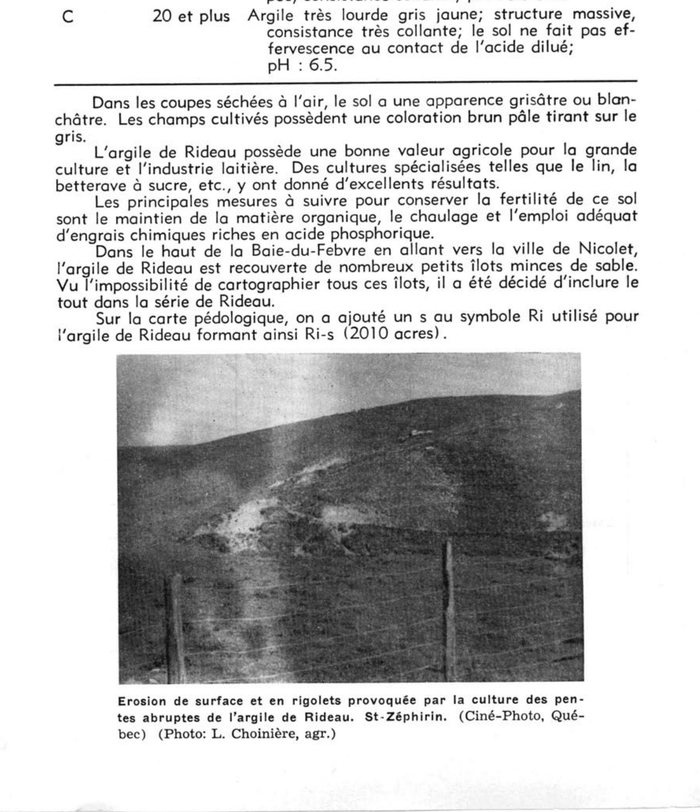
| RESULTATS ANALYTIQUES | ||||||||||||
|---|---|---|---|---|---|---|---|---|---|---|---|---|
| Paroisse et numéro de l'échantillon: |
St-Zéphirin (91) |
La Baie-du-Febvre (79) |
||||||||||
| 20914 | 20915 | 20916 | 20902 | 20903 | 20904 | |||||||
| Type ................................................. | Argile de Rideau | |||||||||||
| No de laboratoire ................................. | 20914 | 20915 | 20916 | 20902 | 20903 | 20904 | ||||||
| Horizon ................................................ | Ac | B(C) | C | Ac | B(G) | C | ||||||
| Profondeur en pouces ........................ | 0-8 | 8-16 | 16+ | 0-7 | 7-0 | 20+ | ||||||
| Analyse physique | % | % | % | % | % | % | ||||||
| Détritus ........................................ | 0.3 | 0.0 | 0.0 | 0.2 | 0.0 | 0.0 | ||||||
| Sable ........................................... | 40.0 | 37.6 | 17.6 | 49.2 | 19.6 | 19.6 | ||||||
| Limon ........................................... | 23.2 | 15.2 | 7.2 | 16.0 | 16.0 | 11.6 | ||||||
| Argile ........................................... | 36.8 | 47.2 | 75.2 | 34.8 | 64.4 | 68.8 | ||||||
| Humidité ...................................... | 3.0 | 2.9 | 4.4 | 2.4 | ||||||||
| Perte au feu ................................. | 7.1 | 3.7 | 3.1 | 4.8 | ||||||||
| C organique ............................... | 2.95 | 1.00 | 0.07 | |||||||||
| Matière organique ....................... | 5.08 | 1.72 | 0.12 | |||||||||
| Analyse chimique: | ||||||||||||
| SiO² .............................................. | 61.5 | 63.0 | 58.0 | |||||||||
| R²O³ ............................................. | 23.2 | 25.0 | 28.1 | |||||||||
| CaO ............................................. | 2.02 | 2.16 | 2.38 | |||||||||
| MgO ............................................. | 2.27 | 2.65 | 3.74 | |||||||||
| K²O ............................................. | 2.51 | 2.63 | 2.55 | |||||||||
| Mn³O⁴ ........................................... | 0.09 | 0.10 | 0.09 | |||||||||
| P²O⁵ ............................................. | 0.24 | 0.20 | 0.22 | |||||||||
| N ................................................. | 0.22 | 0.07 | 0.04 | |||||||||
| Réaction: | ||||||||||||
| pH ................................................ | 5.4 | 5.5 | 6.5 | 6.5 | 5.9 | 6.1 | ||||||
| Besoin en CaCO³ livres par acre ............................ |
9000 | 5700 | 3200 | |||||||||
| Bases échangeables ......................... | (m.e. par 100 grs. de sol) | |||||||||||
| Bases totales ................................. | 12.0 | 13.0 | 36.0 | |||||||||
| Ca ........................................ | 5.6 | 5.7 | 17.0 | |||||||||
| Mg ........................................ | 4.6 | 5.4 | 12.1 | |||||||||
| Mn ........................................ | 0.22 | 0.25 | 0.33 | |||||||||
| K ......................................... | 0.69 | 0.36 | 0.56 | |||||||||
| Hydrogène .................................... | 9.0 | 5.7 | 3.2 | |||||||||
| (livres par acre) | ||||||||||||
| Ca ................................................ | 2240 | 2280 | 6800 | |||||||||
| Mg ................................................ | 1120 | 1320 | 2540 | |||||||||
| Mn ................................................ | 120 | 140 | 180 | |||||||||
| K .................................................. | 540 | 280 | 440 | |||||||||
L'argile de Ste-Rosalie se rencontre dans toutes les paroisses du comté d'Yamaska et couvre 13.6% du comté.
La roche-mère est constituée d'une argile lourde d'origine Champlain.
Les champs d'argile de la série de Ste-Rosalie sont très plats, exempts de roches et de cailloux. Le sol se draine imparfaitement à cause de sa topographie très plane et de la nature plastique du sous-sol.
Les sols à l'état vierge sont à peu près inexistants. Anciennement, d'après le dire des vieux et en se basant sur les vieilles constructions, cette argile devait être couverte d'une immense forêt de grands pins rouges. De nos jours, l'orme est à peu près le seul arbre aperçu dans les champs.
| Horizon | Profondeur en pouces |
Description |
|---|---|---|
| Ac | 0 à 6 | Argile de coloration gris noir à l'état humide et de couleur grise à l'état sec, moyennement à fortement humifère; structure fortement granuleuse, consistance friable devenant légèrement dure lorsque le sol est séché à l'air; pH : 5.4-6.0. |
| A² | 6 à 7 | Horizon gris cendré, irrégulier, mince et sinueux; souvent absent. |
| G(B) | 7 à 16 | Argile lourde gris brun, fortement bariolée de rouille; structure granuleuse ou fragmentaire, consistance collante; pH : 6.5-6.9. |
| C | 16 et plus | Argile lourde gris bleu; structure massive et consistance très collante; ne fait pas effervescence à l'acide; pH : 6.9-7.1. |
Dans plusieurs paroisses, la roche-mère contient jusqu'à 83% d'argile (méthode Bouyoucos). A plusieurs endroits, les cultivateurs appellent l'argile de la série de Ste-Rosalie, "la glaise rouillée".
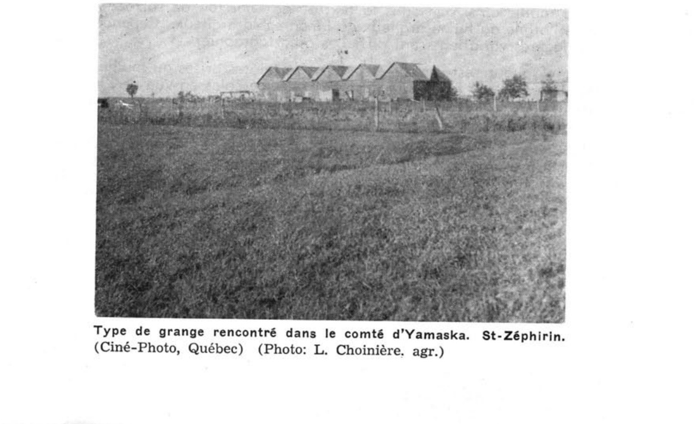
| Paroisse et numéro de l'échantillon : | St-Guillaume (21) |
St-Guillaume (30) |
St-Guillaume (40) |
|||||||||||||||
|---|---|---|---|---|---|---|---|---|---|---|---|---|---|---|---|---|---|---|
| Argile de Ste-Rosalie | ||||||||||||||||||
| No de laboratoire | 20519 | 20520 | 20521 | 20528 | 20529 | 20530 | 20538 | 20539 | 20540 | |||||||||
| Horizon | Ac | G(B) | C | Ac | G(B) | C | Ac | G(B) | C | |||||||||
| Profondeur en pouces | 0-8 | 8-14 | 14+ | 0-6 | 6-17 | 17+ | 0-8 | 8-12 | 12+ | |||||||||
| Analyse physique | % | % | % | % | % | % | % | % | % | |||||||||
| Détritus | 0.0 | 0.0 | 0.0 | 0.0 | 0.0 | 0.0 | 0.0 | 0.0 | 0.0 | |||||||||
| Sable | 51.6 | 37.2 | 16.4 | 55.6 | 27.6 | 10.4 | 46.8 | 8.8 | 8.8 | |||||||||
| Limon | 20.4 | 23.4 | 17.2 | 16.8 | 5.8 | 9.4 | 19.2 | 11.2 | 13.2 | |||||||||
| Argile | 28.0 | 39.4 | 66.4 | 27.6 | 66.6 | 80.2 | 34.0 | 80.0 | 78.0 | |||||||||
| Humidité | 1.4 | 2.3 | 3.0 | |||||||||||||||
| Perte au feu | 4.0 | 7.5 | 10.1 | |||||||||||||||
| (livres par acre) | ||||||||||||||||||
| Réaction : pH |
6.2 | 6.9 | 7.1 | 5.5 | 6.0 | 6.8 | 6.2 | 7.8 | 7.9 | |||||||||
Il existe des variations dans l'intensité et la distribution des mouche-tures de rouille ainsi que dans la texture de l'horizon de surface; celle-ci varie de l'argile au limon argileux ou limon sablo-argileux. Cependant toutes ces légères variations sont difficiles à cartographier.
Le sol labouré est sombre et bigarré de teintes grises ou rouilles. C'est un très bon sol pour la culture du foin et des céréales en vue de l'industrie laitière. Dans la plaine de Montréal, la betterave à sucre y a donné d'excellents rendements.
Les améliorations importantes consistent dans le drainage souterrain, le labour Richard, la sidération, l'application d'engrais riches en phosphates. Il faut aussi éviter de travailler le sol lorsqu'il est trop humide, car ceci gâche pour longtemps la belle structure granuleuse de l'argile de la série de Ste-Rosalie. Elle devient alors très dure, cornée et compacte. La pierre à choux moulue favorise la granulation et l'aération de ce sol, tout en corrigeant sa légère acidité.
L'argile de Ste-Rosalie est fortement apparentée à l'argile de Rideau. Cette dernière est mieux drainée, brunâtre et moins humifère.
| RESULTATS ANALYTIQUES | |||||||||
|---|---|---|---|---|---|---|---|---|---|
| Paroisse et numéro de l'échantillon: |
Yamaska (61) |
St-Bonaventure (33) |
St-Elphège (17) |
||||||
| 21144 | 21145 | 21146 | 20531 | 20532 | 20533 | 20417 | 20418 | 20419 | |
| Type | Argile de Ste-Rosalie | ||||||||
| No de laboratoire | 21144 | 21145 | 21146 | 20531 | 20532 | 20533 | 20417 | 20418 | 20419 |
| Horizon | Ac | G(B) | C | Ac | G(B) | C | Ac | G(B) | C |
| Profondeur en pouces | 0-6 | 6-18 | 18+ | 0-8 | 8-15 | 15+ | 0-8 | 8-20 | 20+ |
| Analyse physique | |||||||||
| Détritus | % 0.5 |
% 1.0 |
% 0.5 |
% 0.0 |
% 0.0 |
% 0.0 |
% 0.0 |
% 0.0 |
% 0.0 |
| Sable | 25.6 | 9.6 | 17.6 | 30.4 | 14.4 | 12.4 | 40.4 | 14.0 | 12.0 |
| Limon | 30.8 | 38.8 | 40.8 | 24.4 | 6.4 | 8.4 | 18.8 | 8.8 | 4.8 |
| Argile | 43.6 | 51.6 | 41.6 | 45.2 | 79.2 | 79.2 | 40.8 | 77.2 | 83.2 |
| Humidité | 1.6 | 1.6 | 1.4 | 4.0 | 5.8 | 5.1 | 2.4 | 5.2 | 4.4 |
| Perte au feu | 7.8 | 2.3 | 2.9 | 10.4 | 4.4 | 3.7 | 6.0 | 3.9 | 3.2 |
| C organique | 3.20 | 0.20 | 0.10 | 4.55 | 0.43 | 0.33 | 2.53 | 0.55 | 0.34 |
| Matière organique | 5.51 | 0.34 | 0.17 | 7.84 | 0.73 | 0.56 | 4.36 | 0.95 | 0.58 |
| Analyse chimique | |||||||||
| SiO² | 63.5 | 54.2 | 63.2 | 58.8 | 58.2 | 58.7 | 64.3 | 57.3 | 57.7 |
| R²O³ | 20.2 | 23.3 | 22.9 | 23.6 | 30.2 | 27.4 | 20.7 | 27.9 | 27.3 |
| CaO | 2.06 | 2.63 | 3.22 | 1.97 | 2.04 | 2.50 | 2.65 | 2.54 | 2.61 |
| MgO | 1.52 | 2.80 | 2.75 | 2.31 | 3.41 | 3.74 | 1.81 | 3.51 | 3.76 |
| K²O | 2.37 | 2.35 | 2.53 | 2.18 | 2.72 | 2.67 | 2.27 | 2.56 | 2.87 |
| Mn³O⁴ | 0.05 | 0.09 | 0.09 | 0.07 | 0.12 | 0.11 | 0.07 | 0.12 | 0.09 |
| P²O⁵ | 0.23 | 0.23 | 0.30 | 0.40 | 0.22 | 0.20 | 0.24 | 0.25 | 0.20 |
| N | 0.27 | 0.04 | 0.04 | 0.30 | 0.07 | 0.04 | 0.21 | 0.08 | 0.08 |
| Réaction: | |||||||||
| pH | 5.7 | 6.5 | 7.0 | 5.6 | 6.3 | 6.8 | 5.8 | 6.2 | 7.1 |
| Besoin en CaCO³ livres par acre |
4500 | 0 | 0 | 12500 | 4300 | 3200 | 6500 | 4500 | 5000 |
| Bases échangeables: | |||||||||
| (m.e. par 100 grs. de sol) | |||||||||
| Bases totales | 18.0 | 23.0 | 51.0 | 18.0 | 34.0 | 35.0 | 16.0 | 32.0 | 36.0 |
| Ca | 10.6 | 12.8 | 34.6 | 11.1 | 18.1 | 18.6 | 8.5 | 17.7 | 17.6 |
| Mg | 6.7 | 8.5 | 14.4 | 14.2 | 13.6 | 4.0 | 5.8 | 11.4 | 15.9 |
| Mn | 0.18 | 0.30 | 0.56 | 0.18 | 0.44 | 0.40 | 0.18 | 0.55 | 0.40 |
| K | 0.50 | 0.24 | 0.48 | 0.54 | 0.79 | 0.72 | 0.46 | 0.61 | 1.15 |
| Hydrogène | 4.5 | 0.0 | 0.0 | 12.5 | 4.3 | 3.2 | 6.5 | 4.5 | 5.0 |
| (livres par acre) | |||||||||
| Ca | 4240 | 5120 | 13840 | 4440 | 7240 | 7440 | 3400 | 7080 | 7040 |
| Mg | 1640 | 2060 | 3480 | 3440 | 3300 | 980 | 1400 | 3780 | 3860 |
| Mn | 100 | 160 | 300 | 100 | 240 | 220 | 100 | 300 | 220 |
| K | 400 | 180 | 380 | 420 | 620 | 560 | 360 | 480 | 900 |
| RESULTATS ANALYTIQUES | |||||||||
|---|---|---|---|---|---|---|---|---|---|
| Paroisse et numéro de l'échantillon: |
St-Zéphirin (95) |
St-Guillaume (96) |
St-Gérard (99) |
||||||
| Argile de Ste-Rosalie | |||||||||
| Type | |||||||||
| No de laboratoire | 20918 | 20919 | 20920 | 21179 | 21180 | 21181 | 21182 | 21183 | 21184 |
| Horizon | Ac | G(B) | C | Ac | G(B) | C | Ac | G(B) | C |
| Profondeur en pouces | 0-8 | 8-16 | 16+ | 0-7 | 7-15 | 15+ | 0-8 | 8-16 | 16+ |
| Analyse physique | % | % | % | % | % | % | % | % | % |
| Détritus | 0.5 | 0.5 | 0.0 | 1.0 | 0.5 | 0.0 | 0.5 | 0.0 | 0.0 |
| Sable | 49.2 | 30.4 | 20.4 | 51.6 | 27.2 | 19.6 | 51.6 | 29.6 | 22.4 |
| Limon | 13.2 | 9.2 | 7.2 | 15.2 | 9.6 | 7.2 | 19.2 | 9.2 | 12.4 |
| Argile | 37.6 | 60.4 | 72.4 | 33.2 | 63.2 | 73.2 | 29.2 | 61.2 | 65.2 |
| Humidité | 3.3 | 3.0 | 2.6 | ||||||
| Perte au feu | 8.1 | 8.0 | 8.1 | ||||||
| (livres par acre) | |||||||||
| Réaction: pH |
5.9 | 6.7 | 7.0 | 5.3 | 5.6 | 6.2 | 5.4 | 5.7 | 6.2 |
SOLS FORMÉS SUR ALLUVIONS CONSTITUÉES D'ARGILE NON
CALCAIRE RECOUVERTE D'UNE MINCE COUCHE DE LIMON SABLEUX
Cette série ne comprend qu'un seul type :
Limon sableux de Courval (32427 acres) Co.
D'origine Champlain, le limon sableux de Courval possède une topographie très unie et un drainage effectif imparfait. Il consiste dans un limon sableux brun foncé à noirâtre, de six à huit pouces d'épaisseur reposant sur un substratum formé d'argile.
Voici un profil en sol vierge :
| Horizon | Profondeur en pouces |
Description |
|---|---|---|
| A00 | 0 à ¼ | Feuilles mortes non décomposées. |
| A0 | ¼ à 1 | Feuilles mortes à demi-décomposées. |
| A1 | 1 à 3 | Matière organique bien décomposée, noire; structure granuleuse finement développée; consistance friable; pH : 5.0. |
| A2 | 3 à 5 | Limon gris jaune; structure lamellaire; consistance friable; pH : 5.4. |
| B1 (G1) | 5 à 12 | Limon sableux gris jaune avec traînées de rouille; structure granuleuse peu développée; consistance friable; pH : 5.7. |
| G2 | 12 à 20 | Argile gris jaune avec traînées de rouille; structure nuciforme; consistance dure à l'état sec et collante à l'état humide; pH : 6.2. |
| C | 20 et plus | Argile lourde, gris bleu; structure prismatique; consistance collante; pH : 6.6. |
La charrue a intimement mêlé les horizons A et l'horizon B1 (G1), en tout ou en partie, pour donner un limon sableux de Courval.
Le profil en sol cultivé peut ainsi se résumer :
| Horizon | Profondeur en pouces |
Description |
|---|---|---|
| Ac | 0 à 7 | Limon sableux brun foncé; structure finement granuleuse, consistance friable; pH : 5.8-6.3. |
| A2 | 7 à 10 | Couche gris pâle, souvent absente en terrain cultivé. |
| G | 10 à 18 | Argile grise fortement tachetée de rouille; structure nuciforme, consistance friable; pH : 5.8-6.3. |
| C | 18 et plus | Argile lourde gris bleu; structure prismatique parfois massive, consistance collante; pH : 6.8-7.3. |
Les séries de Courval et de Ste-Rosalie peuvent facilement se confondre surtout lorsque les champs sont en foin ou en céréales. On y voit également une plaine très unie, quelques ormes, dans les champs, des saules géants près des fossée, etc... En effet, leur différence essentielle consiste dans la texture de lo surface cultivée. Le Courval est un limon sableux, tandis que le Ste-Rosalie est une argile.
Le sol est légèrement acide et pauvre en acide phosphorique assimilable. Il faut, après amélioration du drainage, lui appliquer un faible chaulage et une généreuse fumure au superphosphate et aux engrais chimiques complets selon les exigences de la rotation en cours. Le cultivateur aurait avantage à approfondir graduellement son labour dans le limon sableux de Courval. En
| RESULTATS ANALYTIQUES | ||||||||||
|---|---|---|---|---|---|---|---|---|---|---|
| Paroisse et numéro de l'échantillon : |
St-François-du-Lac (12) |
St-Gérard (15) |
St-Guillaume (24) |
|||||||
| Type | Limon sableux de Courval | |||||||||
| 20510 | 20511 | 20512 | 20513 | 20514 | 20515 | 20522 | 20523 | 20524 | ||
| No de laboratoire ..... | 20510 | 20511 | 20512 | 20513 | 20514 | 20515 | 20522 | 20523 | 20524 | |
| Horizon ........................... | Ac | G | C | Ac | G | C | Ac | G | C | |
| Profondeur en pouces | 0-8 | 8-16 | 16+ | 0-6 | 6-15 | 15+ | 0-12 | 12-18 | 18+ | |
| Analyse physique .... | % | % | % | % | % | % | % | % | % | |
| Détritus .................... | 0.0 | 0.0 | 0.0 | 0.0 | 0.0 | 0.0 | 0.0 | 0.0 | 0.0 | |
| Sable ........................ | 62.0 | 41.6 | 15.6 | 69.6 | 26.4 | 16.0 | 72.0 | 30.6 | 38.0 | |
| Limon ....................... | 20.4 | 19.4 | 16.4 | 11.4 | 11.6 | 10.0 | 7.8 | 9.2 | 5.8 | |
| Argile ....................... | 17.6 | 39.0 | 68.0 | 19.0 | 62.0 | 74.0 | 20.2 | 60.2 | 56.2 | |
| Humidité ................... | 1.3 | 2.1 | 0.9 | |||||||
| Perte au feu ........... | 6.2 | 6.7 | 3.2 | |||||||
| Réaction : pH ............................ |
5.7 | 6.3 | 6.8 | 5.6 | 6.7 | 7.0 | 6.5 | 6.5 | 7.0 | |
| RESULTATS ANALYTIQUES | ||||||||
|---|---|---|---|---|---|---|---|---|
| Paroisse et numéro de l'échantillon |
St-Elphège (20) |
La Baie (82) |
||||||
| Type | Limon sableux de Courval | |||||||
| 20420 | 20421 | 20422 | 20905 | 20906 | 20907 | |||
| No de laboratoire ................... | 20420 | 20421 | 20422 | 20905 | 20906 | 20907 | ||
| Horizon .................................... | Ac | G | C | Ac | G | C | ||
| Profondeur en pouces | 0-8 | 8-22 | 22+ | 0-7 | 7-18 | 18+ | ||
| Analyse physique .................... | % | % | % | % | % | % | ||
| Détritus ............................ | 0.0 | 0.0 | 0.0 | 0.0 | 0.5 | 0.0 | ||
| Sable ................................ | 75.6 | 13.6 | 13.2 | 71.6 | 57.6 | 22.0 | ||
| Limon ............................... | 11.2 | 6.8 | 5.8 | 11.6 | 9.6 | 9.2 | ||
| Argile ............................... | 13.2 | 79.6 | 81.0 | 16.8 | 32.8 | 68.8 | ||
| Humidité ........................... | 1.3 | 1.9 | ||||||
| Perte au feu ................... | 6.1 | 5.5 | ||||||
| Réaction : pH .................................... |
6.5 | 7.4 | 7.8 | 5.7 | 6.2 | 6.7 | ||
| Paroisse et numéro de l'échantillon: | St-Elphège (128) |
St-Elphège (51) |
St-Guillaume (27) |
|||||||
|---|---|---|---|---|---|---|---|---|---|---|
| Type .................................................... | Limon sableux de Courval | |||||||||
| No de laboratoire .. | 20951 | 20952 | 20953 | 20451 | 20452 | 20453 | 20454 | 20255 | 20526 | 20527 |
| Horizon .................... | Ac | G | C+ | Ac | G1 | G2 | C+ | Ac | G | C+ |
| Prof. en pouces ... | 0-8 | 8-20 | 20 | 0-8 | 8-13 | 13-25 | 25 | 0-7 | 7-12 | 12 |
| Analyse physique | ||||||||||
| Détritus | 2.0 | 0.0 | 0.0 | 1.0 | 1.0 | 0.0 | 0.0 | 0.0 | 0.0 | 0.0 |
| Sable | 85.2 | 23.2 | 16.8 | 60.4 | 32.4 | 31.2 | 14.8 | 75.6 | 29.6 | 17.6 |
| Limon | 7.8 | 10.8 | 4.8 | 20.8 | 22.8 | 20.8 | 10.8 | 8.8 | 7.8 | 8.8 |
| Argile | 7.0 | 66.0 | 78.4 | 18.8 | 44.8 | 48.0 | 74.4 | 15.6 | 62.6 | 73.6 |
| Humidité | 0.6 | 3.2 | 3.2 | 1.4 | 3.2 | 2.8 | 3.5 | 1.3 | 4.1 | 4.6 |
| Perte au feu | 3.2 | 3.0 | 2.7 | 5.9 | 4.6 | 3.3 | 3.0 | 4.5 | 4.0 | 4.0 |
| C organique | 1.65 | 0.29 | 0.36 | 2.67 | 0.53 | 0.23 | 0.19 | 2.31 | 0.46 | 0.37 |
| Matière organique | 2.84 | 0.50 | 0.61 | 4.60 | 0.99 | 0.39 | 0.33 | 3.98 | 0.78 | 0.63 |
| Analyse chimique: | ||||||||||
| SiO² | 72.3 | 59.5 | 69.0 | 69.0 | 59.3 | 65.2 | 58.4 | 71.0 | 62.1 | 59.8 |
| R²O³ | 17.0 | 28.6 | 29.1 | 18.8 | 26.6 | 24.9 | 25.6 | 17.7 | 25.4 | 25.9 |
| CaO | 2.13 | 2.60 | 2.92 | 1.33 | 1.27 | 1.68 | 1.61 | 2.38 | 2.04 | 2.24 |
| MgO | 0.91 | 3.47 | 3.82 | 1.50 | 2.85 | 2.87 | 3.61 | 1.10 | 2.89 | 3.38 |
| K²O | 2.29 | 3.07 | 2.99 | 1.89 | 2.25 | 2.55 | 2.72 | 2.65 | 1.82 | 2.43 |
| Mn³O⁴ | 0.06 | 0.10 | 0.13 | 0.07 | 0.13 | 0.14 | 0.13 | 0.08 | 0.12 | 0.18 |
| P²O⁵ | 0.19 | 0.24 | 0.20 | 0.23 | 0.27 | 0.22 | 0.25 | 0.24 | 0.22 | 0.22 |
| N | 0.12 | 0.06 | 0.05 | 0.21 | 0.05 | 0.04 | 0.04 | 0.17 | 0.05 | 0.05 |
| Réaction: | ||||||||||
| pH .................... | 5.8 | 6.4 | 6.9 | 5.6 | 5.8 | 6.8 | 7.2 | 6.0 | 7.0 | 7.6 |
| Besoin en CaCO³ livres par acre |
3000 | 0 | 0 | 7400 | 5200 | 2500 | 2100 | 5300 | 3100 | 2500 |
| Bases échangeables (livres par acre) | ||||||||||
| Bases totales | 7.0 | 33.0 | 35.0 | 8.0 | 19.0 | 27.0 | 31.0 | 8.0 | 28.0 | 35.0 |
| Ca | 4.3 | 19.2 | 19.8 | 3.8 | 8.3 | 13.0 | 14.7 | 4.7 | 11.6 | 16.2 |
| Mg | 2.0 | 12.2 | 12.1 | 3.0 | 8.8 | 11.3 | 14.9 | 2.7 | 12.3 | 15.3 |
| Mn | 0.06 | 0.50 | 0.91 | 0.11 | 0.36 | 0.36 | 0.18 | 0.15 | 0.44 | 0.87 |
| K | 0.32 | 0.97 | 1.44 | 0.38 | 0.41 | 0.46 | 0.41 | 0.15 | 0.25 | 0.67 |
| Hydrogène | 3.0 | 0.0 | 0.0 | 7.4 | 5.2 | 2.5 | 2.1 | 5.3 | 3.1 | 2.5 |
| (m.e. par 100 grs. de sol) | ||||||||||
| Ca .................... | 1720 | 7880 | 7920 | 1520 | 3320 | 5200 | 5880 | 1880 | 4640 | 6480 |
| Mg .................... | 480 | 2580 | 2540 | 540 | 2040 | 2760 | 3620 | 660 | 3000 | 3600 |
| Mn .................... | 32 | 280 | 250 | 60 | 200 | 200 | 100 | 80 | 240 | 480 |
| K .................... | 260 | 760 | 1120 | 300 | 320 | 360 | 320 | 120 | 200 | 520 |
effet, la couche de sol située sous le terrain cultivé est beaucoup plus riche en calcium et en magnésium échangeables que la couche de surface. De plus, en mêlant ainsi l'argile à la terre franche sableuse, le cultivateur augmenterait la capacité d'échange de son sol.
Dans le comté d'Yamaska, la série de St-Urbain se rencontre dans la paroisse de St-Guillaume. Classifiée, en premier lieu, dans le comté de Châteauguay, la série de St-Urbain diffère de la série de Ste-Rosalie surtout par la nature calcaire de la roche-mère.
La roche-mère est une argile lourde calcaire, d'origine Champlain.
Comme dans le cas de l'argile de Ste-Rosalie, les champs d'argile de St-Urbain sont plats exempts de roches et de cailloux. Le drainage ressemble beaucoup à celui de la série de Ste-Rosalie.
Dans la paroisse de St-Guillaume, les sols de la série de St-Urbain sont tous en culture; impossible d'y trouver un sol vierge.
De nos jours, l'orme est à peu près le seul arbre aperçu dans les champs.
| Horizon | Profondeur en pouces |
Description |
|---|---|---|
| Ac | 0 à 8 | Argile, parfois limon sablo-argileux, gris noir, moyennement humifère; structure granuleuse bien développée, consistance friable; pH : 5.8. |
| G | 8 à 15 | Argile lourde gris olive clair, bariolée de rouille; structure prismatique, consistance collante; pH : 6.6. |
| C | 15 et plus | Argile lourde gris bleu; structure massive, consistance collante; fait effervescence à l'acide; pH : 8.0. |
Il existe de légères variations dans la texture de l'horizon Ac. La profondeur du calcaire varie de 15 à 30 pouces de la surface.
Le sol labouré est de couleur sombre. Sa fertilité est très bonne. On y cultive avec succès foin et céréales.
Les améliorations à y apporter sont : le drainage, le labour Richard, l'application d'engrais phosphatés. Il faut éviter de travailler le sol lorsqu'il est trop humide pour conserver sa belle structure granuleuse.
| Paroisse et numéro de l'échantillon |
St-Guillaume (43) |
||
|---|---|---|---|
| Type ............................................................................................ | Argile de St-Urbain | ||
| No de laboratoire ...................................................................... | 20541 | 20542 | 20543 |
| Horizon ...................................................................................... | Ac | G | C |
| Profondeur en pouces ............................................................... | 0-8 | 8-15 | 15+ |
| Analyse physique : | |||
| Détritus .................................................................................... | % 1.0 |
% 0.0 |
% 0.0 |
| Sable ........................................................................................ | 62.8 | 11.4 | 14.0 |
| Limon ....................................................................................... | 17.2 | 11.8 | 8.2 |
| Argile ........................................................................................ | 20.0 | 76.8 | 76.8 |
| Humidité .................................................................................. | 1.6 | 2.7 | 2.4 |
| Perte au feu .............................................................................. | 7.2 | 4.1 | 4.6 |
| C organique .............................................................................. | 3.90 | 0.65 | 0.57 |
| Matière organique ................................................................... | 6.72 | 1.12 | 0.98 |
| Analyse chimique : | |||
| SiO² .......................................................................................... | 66.7 | 58.2 | 56.9 |
| R²O³ .......................................................................................... | 17.9 | 26.0 | 26.1 |
| CaO .......................................................................................... | 2.76 | 2.72 | 3.36 |
| MgO .......................................................................................... | 1.98 | 3.28 | 4.50 |
| K²O .......................................................................................... | 2.03 | 2.64 | 2.80 |
| Mn³O⁴ ....................................................................................... | 0.06 | 0.07 | 0.10 |
| P²O⁵ .......................................................................................... | 0.19 | 0.22 | 0.19 |
| N .............................................................................................. | 0.24 | 0.05 | 0.04 |
| Réaction : | |||
| pH ............................................................................................ | 5.8 | 6.6 | 8.0 |
| Besoin en CaCO³ — livres par acre ............................................. | 8100 | 3200 | 0 |
| Bases échangeables (m.e. par 100 grs. de sol) | |||
| Bases totales ............................................................................ | 12.0 | 29.0 | 39.0 |
| Ca ...................................................................................... | 6.6 | 15.0 | 17.7 |
| Mg ..................................................................................... | 4.0 | 10.6 | 18.7 |
| Mn ..................................................................................... | 0.07 | 0.25 | 0.51 |
| K ....................................................................................... | 0.72 | 0.95 | 0.46 |
| Hydrogène ................................................................................ | 8.1 | 3.2 | 0.0 |
| (livres par acre) | |||
| Ca ............................................................................................ | 2640 | 6000 | 7080 |
| Mg ........................................................................................... | 980 | 2580 | 4560 |
| Mn ........................................................................................... | 40 | 140 | 280 |
| K .............................................................................................. | 560 | 740 | 360 |
Ces alluvions sont formées sur les matériaux déposés par l'eau du fleuve, des rivières et des lacs depuis le retrait de la mer Champlain. En général, le processus de la formation du sol est peu ou pas commencé. Aussi, ces sols possèdent souvent des couches de matériaux assortis par l'eau plutôt qu'un vrai profil.
Les matériaux charriés et déposés par l'eau sont parfois riches en chaux. Le cas se présente dans le comté d'Yamaska. Ces matériaux sont généralement de texture argileuse ou limoneuse, fréquemment plaqués et interstratifiaires de lits de matériaux plus sableux.
La série de Nicolet ne comprend qu'un seul type : le limon argileux de Nicolet.
Limon argileux de Nicolet (2488 acres) Ni.
Les sols de la série de Nicolet sont des alluvions fluvio-lacustres de nature argileuse. Ces sols azonaux forment une plaine unie, située à vingt-cinq pieds au-dessus du niveau de l'eau du fleuve St-Laurent. Les drainages externe et interne sont très lents et le drainage effectif, mauvais. Dans les champs presque entièrement en foin ou en pâturage poussent le saule, la salicaire, l'orme etc... ; sur les vieilles prairies et les endroits peu cultivés croissent les psygamons, l'épervière orangée, les carex, les spirées, la renoncule aquatique, etc...
Le profil de ce sol n'est pas encore développé; la texture de la surface varie d'un limon argileux à un limon sablo-argileux.
| Couche | Profondeur en pouces | Description |
|---|---|---|
| 1 | 0 à 12 | Limon argileux brun foncé; structure granuleuse et consistance friable; pH : 5.6-6.3. |
| 2 | 12 à 24 | Limon sablo-argileux à limon argileux gris avec taches et traînées de rouille; structure et consistance variables; parfois calcaire; pH : 6.9-7.2. |
| 3 | 24 et plus | Argile gris bleu; structure et consistance variables; fait une vive effervescence au contact de l'acide chlorhydrique dilué; pH : 7.9-8.2. |
En résumé, les sols de la série de Nicolet sont des alluvions récentes, de texture argileuse, mal drainées, riches en matière organique, souvent calcaires à quinze ou vingt pouces, mais presque toujours calcaires à 30 pouces. Ils sont moins sujets à l'inondation, moins riches en matière organique et de texture plus homogène que les sols de la série de LaBaie.
| Paroisse et numéro de l'échantillon : | La Baie (55) |
La Baie (11) |
||||
|---|---|---|---|---|---|---|
| Type ........................................................ | Limon argileux de Nicolet | |||||
| No de laboratoire ................................. | 20878 | 20879 | 20880 | 20411 | 20412 | 20413 |
| Horizon .................................................... | ||||||
| Profondeur en pouces ........................ | 0-12 | 12-24 | 24+ | 0-12 | 12-24 | 24+ |
|
Analyse physique Détritus .................................................. Sable ...................................................... Limon ..................................................... Argile ..................................................... Humidité ............................................... Perte au feu .......................................... C organique ......................................... Matière organique .............................. |
% 0.0 43.2 32.8 24.0 5.8 21.3 11.50 19.72 |
% 0.5 69.2 10.8 20.0 0.9 2.5 1.18 2.03 |
% 0.0 13.2 8.8 78.0 2.6 4.0 1.17 2.01 |
% 0.0 44.8 33.2 22.0 5.7 20.9 |
% 0.0 54.8 16.8 28.4 |
% 0.0 18.8 10.8 70.4 |
|
Analyse chimique : SiO² ...................................................... R²O³ ...................................................... CaO ...................................................... MgO ...................................................... K²O ...................................................... Mn³O⁴ ................................................. P²O⁵ ...................................................... N .......................................................... |
52.8 17.6 2.56 1.76 1.86 0.05 0.33 0.96 |
75.0 15.9 2.75 1.44 1.97 0.06 0.18 0.10 |
56.0 26.0 4.30 4.57 2.75 0.11 0.21 0.06 |
|||
|
Réaction : pH ........................................................ Besoin en CaCO³ livres par acre ..................................... |
6.3 6500 |
6.9 800 |
7.9 0 |
5.6 |
7.2 |
8.2 |
| Bases échangeables ............................. | (m.e. par 100 grs. de sol) | |||||
|
Bases totales Ca ................................................. Mg ................................................ Mn ................................................ K .................................................. Hydrogène ........................................... |
43.0 30.0 10.7 0.51 0.36 6.5 |
12.0 4.6 4.2 0.16 0.21 0.8 |
30.0 17.2 8.8 1.12 1.65 0.0 |
|||
|
(livres par acre)
|
||||||
|
Ca ........................................................ Mg ....................................................... Mn ........................................................ K .......................................................... |
10000 2600 280 280 |
1820 1820 80 160 |
6880 2140 620 1320 |
|||
Le drainage est l'amélioration la plus importante à apporter aux sols de cette série. La haute teneur en calcium de la roche-mère en ferait d'excellents sols pour la culture de la luzerne. Actuellement, ces sols ont une valeur agricole moyenne; ils sont propres à la culture du foin et à l'établissement de bons pâturages, mais ils sont médiocres pour les cultures spécialisées et les céréales qui y sont très sujettes à la verse.
Un seul type a été cartographié dans le comté d'Yamaska : le limon argileux de LaBaie
Les sols de cette série se rencontrent dans la Commune de La Baie-du-Febvre. Le terrain est plat et de quelques pieds seulement plus élevé que le niveau normal des eaux du lac St-Pierre et du fleuve St-Laurent. Aussi, les sols de la série de LaBaie sont presque entièrement inondés au printemps et très souvent à la période des pluies de l'automne. L'eau y séjourne parfois à l'état stagnant. Le drainage est donc très mauvais. De ce fait, la végétation possède un caractère plutôt hydromorphe : aulne, salicaire, carex, iris, joncs, etc..
C'est un sol azonal, une alluvion récente constituée de limon argileux et d'argile; cependant, comme dans le cas de la plupart des alluvions récentes, des variations dans la texture se rencontrent assez fréquemment.
| RESULTATS ANALYTIQUES | |||||||||||||||||||||
|---|---|---|---|---|---|---|---|---|---|---|---|---|---|---|---|---|---|---|---|---|---|
| Paroisse et numéro de l'échantillon |
La Baie-du-Febvre (76) |
||||||||||||||||||||
| Type ........................................................................ | Limon argileux de La Baie | ||||||||||||||||||||
| No de laboratoire ..................................................... |
|
||||||||||||||||||||
| Horizon .................................................................... |
|
||||||||||||||||||||
| Profondeur en pouces ............................................ |
|
||||||||||||||||||||
| Analyse physique ................................................. |
|
||||||||||||||||||||
|
Détritus ........................................................ Sable .......................................................... Limon ........................................................ Argile ........................................................ Humidité ................................................... Perte au feu .............................................. |
|
|
|
||||||||||||||||||
|
Réaction : pH ................................................................ |
|
||||||||||||||||||||
| Couche | Profondeur en pouces | Description |
|---|---|---|
| 1 | 0 à 12 | Limon argileux noirâtre, structure et consistance friable; pH : 5.9. |
| 2 | 12 à 24 | Limon argileux à limon sableux gris pâle avec grosses taches de rouille; structure et consistance variables; pH : 6.7-7.0. |
| 3 | 24 à 36 | Limon argileux ou argile gris-bleu; structure et consistance variables. Le sol fait parfois effervescence au contact de l'acide chlorhydrique dilué; pH : 7.5-8.6. |
Le sol est rarement labouré. Les prairies infestées de salicaires et de plantes aquatiques, donnent un foin et un pâturage de médiocre qualité. D'une valeur agricole presque nulle, seul un bon drainage peut améliorer ce sol. Cependant, à cause de sa faible élévation au-dessus des eaux du fleuve, le drainage est un problème difficile et coûteux.
Les sols de la série de LaBaie forment très souvent une caténa de drainage avec les sols de la série de Nicolet. Pour les premiers, le drainage effectif est très mauvais, tandis qu'il est mauvais pour les seconds. Ces derniers sont aussi moins expansés aux inondations.
A certains endroits, le limon argileux de LaBaie est un véritable sol semi-tourbeux (half-bog).
En général, les matériaux déposés par les rivières ou le lac St-Pierre sont délavés de leurs bases les plus solubles. Aussi, les sols en voie de formation sur ces matériaux sont-ils relativement pauvres en chaux dans toute leur profondeur. Comme dans le cas énoncé plus haut, leur profil est très peu ou pas développé. Le drainage et la texture de ces sols sont assez variables pour établir, dans le comté, six séries distinctes de sol.
Le long des rivières, surtout de la rivière St-François, l'eau a déposé, ici et là, des terrasses de sable, de limon sableux, parfois de limon sablo-graveleux.
La série de St-François comprend trois types dans le comté d'Yamaska : le sable grassier de St-François, le limon sableux de St-François et le limon sablo-graveleux de St-François.
La série de St-François a été cartographiée dans les comtés de Richmond, de Shefford, de Brome et de Missisquoi. On la retrouve aussi dans les comtés de Drummond, de Bagot et ailleurs.
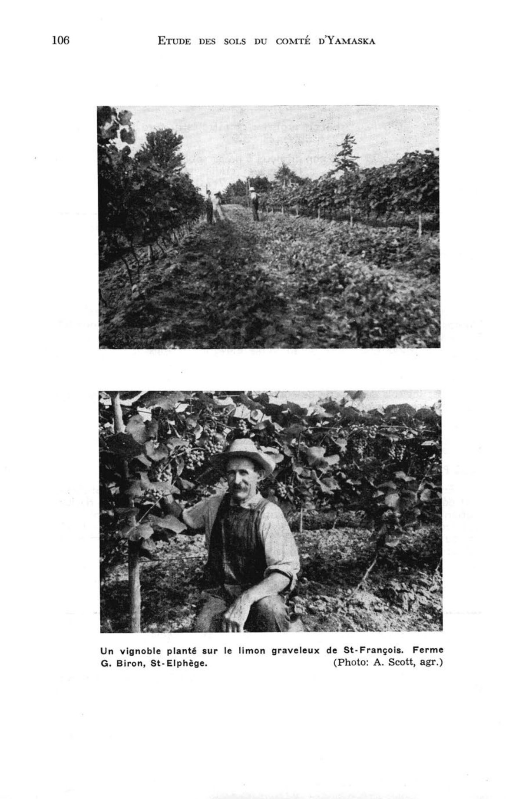
Dans le comté d'Yamaska, les sols de la série de St-François ne couvrent que 2467 acres et n'existent pas à l'état vierge.
Sable grossier de St-François (858 acres) Fsg.
Le sable grossier de St-François possède un drainage excessif. Dans Yamaska, il ne couvre que 858 acres de superficie.
Voici un profil en terrain cultivé :
| Horizon | Profondeur en pouces |
Description |
|---|---|---|
| Ac | 0 à 7 | Sable grossier brun jaune; sans structure ni consistance; pH : 5.6. |
| B | 7 à 25 | Sable grossier brun jaune clair; sans structure ni consistance; pH : 5.9. |
| C | 25 et plus | Sable grossier jaune pâle ; sans structure ni consistance. |
Limon sableux de St-François (994 acres) Fsl.
Le drainage du limon sableux de St-François est très bon et le sable moins grossier que dans le type précédent.
Voici un profil étudié sur l'Ile du Fort.
| Horizon | Profondeur en pouces |
Description |
|---|---|---|
| Ac | 0 à 8 | Limon sableux brun jaune; structure granuleuse, faiblement développée, consistance très friable; pH : 5.8. |
| B1 | 8 à 14 | Sable moyen limoneux brun jaune clair; sans structure ni cansistance; pH : 5.9. |
| B2 | 14 à 30 | Sable moyen olive clair; sans structure ni consistance; pH : 6.0. |
| C | 30 et plus | Sable grossier, jaune pâle; pH : 6.1. |
Limon sablo-graveleux de St-François (615 acres) Fgl.
Le limon sablo-graveleux de St-François se rencontre le long de la rivière dans les paroisses de St-Bonaventure, de Joachim et de St-Elphège. Le drainage est bon.
Voici un profil en sol cultivée :
| Horizon | Profondeur en pouces |
Description |
|---|---|---|
| Ac | 0 à 9 | Limon sablo-graveleux brun foncé; structure granuleuse; consistance friable; pH : 5.3. |
| B | 9 à 18 | Gravier sableux jaune brun; stratifié; pH : 5.9. |
| C | 18 et plus | Gravier sableux gris jaunâtre; stratifié; pH : 5.9. |
Au point de vue agricole, le sable grossier de St-François est très pauvre à cause de sa texture grossière. Il existe des possibilités agricoles sur les deux autres types au point de vue horticole : patates, tomates, carottes, etc... A St-Elphège, il y o un très beau vignoble sur le limon sablo-garveleux de St-François.
ETUDE DES SOLS DU COMTÉ D'YAMASKA
| Paroisse et numéro de l'échantillon |
St-Joachim (35) |
||
|---|---|---|---|
| Type | Limon sablo-graveleux de St-François |
||
| No de laboratoire | 20435 | 20436 | 20437 |
| Horizon | Ac | G | C |
| Profondeur en pouces | 0–9 | 9–18 | 18+ |
| Analyse physique | % | % | % |
| Détritus | 16.0 | 39.0 | 36.0 |
| Sable | 71.2 | 86.2 | 86.6 |
| Limon | 20.4 | 9.4 | 7.4 |
| Argile | 8.4 | 4.4 | 6.0 |
| Humidité | 1.8 | 1.0 | 0.6 |
| Perte au feu | 7.6 | 2.8 | 1.8 |
| C organique | 3.19 | 0.83 | 0.35 |
| Matière organique | 5.50 | 1.40 | 0.60 |
| Analyse chimique : | |||
| SiO² | 70.2 | 74.4 | 76.5 |
| R²O³ | 15.3 | 16.1 | 15.5 |
| CaO | 1.17 | 1.27 | 1.20 |
| MgO | 0.94 | 1.28 | 1.17 |
| K²O | 1.98 | 1.97 | 2.11 |
| Mn³O⁴ | 00.6 | 0.07 | 0.06 |
| P²O⁵ | 0.26 | 0.17 | 0.19 |
| N | 0.24 | 0.07 | 0.05 |
| Réaction : | |||
| pH | 5.3 | 5.9 | 5.9 |
| Besoin en CaCO³ — livres par acre | 10200 | 5500 | 3700 |
| Bases échangeables (m.e. par 100 grs. de sol) | |||
| Bases totales | 6.0 | 4.0 | 4.0 |
| Ca | 4.2 | 2.2 | 1.7 |
| Mg | 1.4 | 1.2 | 1.5 |
| Mn | 0.25 | 0.22 | 0.22 |
| K | 0.25 | 0.18 | 0.18 |
| Hydrogène | 10.2 | 5.5 | 3.7 |
| (livres par acre) | |||
| Ca | 1680 | 880 | 680 |
| Mg | 340 | 300 | 380 |
| Mn | 140 | 120 | 120 |
| K | 200 | 140 | 140 |
Dans les paroisses de Notre-Dame-de-Pierreville et de Pierreville, on rencontre une grande plaine unie à faible élévation. De vingt-cinq pieds au-dessus du fleuve son niveau baisse insensiblement jusqu'à celui du lac St-Pierre.
La roche-mère est un sable fluvio-lacustre. Les drainages externe et interne sont lents et le drainage effectif est imparfait.
Les principaux arbres sont le bouleau, le pin blanc, et en s'approchant du lac, on voit des érables argentés, des peupliers et des saules.
Les principales plantes semi-naturelles sont : le panic capillaire, la petite oseille, la prêle, la spirée tomenteuse, l'herbe à poux, la mousse, etc... Le profil ressemble passablement à celui du sable de St-Jude. Mais, à la surface, le lac ou les rivières ont laissé une couche de limon. La charrue a mêlé limon et sable pour donner un limon sableux.
De plus, c'est un sol plus jeune que les sols de la série de St-Jude. Le processus de la podzolisation est moins avancé.
| Horizon | Profondeur en pouces |
Description |
|---|---|---|
| A00 | 0 à ¼ | Aiguilles de pin et feuilles d'érable rouge et de bouleau non décomposées. |
| A0 | ¼ à ½ | Aiguilles de pin et feuilles d'érable rouge et de bouleau légèrement décomposées. |
| A1 | ½ à 3 | Limon sableux fin gris foncé; structure finement granuleuse, moyennement développée, friable; pH : 5.3. |
| A2 | 3 à 7 | Limon sableux fin gris brun clair; feuilleté; contient des traînées plus sombres; pH : 5.3. |
| G1 | 7 à 16 | Sable très fin limoneux, gris olive clair; feuilleté; pas de mouchetures de rouille; pH : 5.4. |
| G2 | 16 à 24 | Sable moyen olive pâle avec petites mouchetures de rouille; sans structure, ni consistance; pH : 5.5. |
| G3 | 24 à 29 | Bande diffuse fortement mouchetée de rouille dont la couleur prédominante est le brun vif avec des veines de gris olive clair et d'alive pâle, feuilleté, légèrement tassé; pH : 6.2. |
| C | 29 et plus | Sable moyen gris clair, taches de rouille peu nombreuses, sans structure, légèrement tassé; pH : 6.9. |
| Paroisse et numéro de l'échantillon : | Notre-Dame-de-Pierreville (112) | Yamaska (71) |
Notre-Dame-de-Pierreville (109) | ||||||
|---|---|---|---|---|---|---|---|---|---|
| Type ................................................. | Limon sableux de Pierreville | ||||||||
| No de laboratoire .................. | 20935 | 20936 | 20937 | 21154 | 21155 | 21156 | 20932 | 20933 | 20934 |
| Notre-Dame-de-Pierreville (112) | Yamaska (71) | Notre-Dame-de-Pierreville (109) | |||||||
|---|---|---|---|---|---|---|---|---|---|
| Horizon ........................................... | Ac | G | C | Ac | G | C | Ac | G | C |
| Profondeur en pouces ............... | 0-7 | 7-20 | 20+ | 0-8 | 8-20 | 20+ | 0-8 | 8-21 | 21+ |
| Analyse physique | |||||||||
| Détritus .......................... | 0.0 | 0.0 | 0.0 | 0.0 | 0.0 | 0.5 | 0.0 | 0.3 | 0.0 |
| Sable ............................. | 71.2 | 93.8 | 88.8 | 56.8 | 78.6 | 72.4 | 77.8 | 90.8 | 92.8 |
| Limon ............................. | 16.8 | 4.4 | 6.4 | 24.8 | 17.2 | 23.4 | 16.4 | 6.9 | 4.9 |
| Argile ............................ | 12.0 | 1.8 | 4.8 | 18.4 | 4.2 | 4.2 | 5.8 | 2.3 | 2.3 |
| Humidité .......................... | 1.2 | 0.2 | 0.1 | 3.3 | 0.2 | 0.2 | 0.5 | ||
| Perte au feu ...................... | 6.0 | 0.9 | 0.4 | 10.8 | 0.8 | 0.7 | 2.8 | ||
| C organique ....................... | 2.95 | 0.12 | 0.41 | 4.95 | 0.22 | 0.11 | |||
| Matière organique ................. | 5.08 | 0.19 | 0.70 | 8.53 | 0.37 | 0.19 | |||
| Analyse chimique | |||||||||
| SiO2 ............................. | 72.5 | 74.9 | 77.4 | 65.7 | 72.8 | 70.9 | |||
| R2O3 .......................... | 16.6 | 18.6 | 16.6 | 17.5 | 18.1 | 20.0 | |||
| CaO ............................... | 1.59 | 2.08 | 2.10 | 2.06 | 2.74 | 3.02 | |||
| MgO ............................... | 1.01 | 1.22 | 1.29 | 0.98 | 1.14 | 1.39 | |||
| K2O ............................ | 2.07 | 2.15 | 2.03 | 2.05 | 2.25 | 2.24 | |||
| Mn3O4 ......................... | 0.07 | 0.07 | 0.07 | 0.04 | 0.05 | 0.07 | |||
| P2O5 .......................... | 0.23 | 0.24 | 0.24 | 0.20 | 0.24 | 0.21 | |||
| N ................................. | 0.19 | 0.02 | 0.02 | 0.40 | 0.03 | 0.03 | |||
| Réaction: | |||||||||
| pH ................................ | 5.7 | 6.5 | 6.7 | 5.6 | 6.3 | 6.4 | 5.6 | 6.1 | 6.4 |
| Besoin en CaCO3 livres par acre ................... |
8700 | 1700 | 1200 | 9400 | 0 | 0 | |||
| Bases échangeables: (m.e. par 100 grs. de sol) | |||||||||
| Bases totales ..................... | 3.0 | 4.0 | 3.0 | 5.0 | 6.0 | 6.0 | |||
| Ca ............................ | 1.0 | 1.4 | 0.9 | 2.6 | 2.6 | 2.5 | |||
| Mg ............................ | 1.0 | 1.5 | 1.2 | 1.3 | 2.6 | 2.3 | |||
| Mn ............................ | 0.07 | 0.02 | 0.01 | 0.03 | 0.04 | 0.04 | |||
| K ............................. | 0.05 | 0.12 | 0.10 | 0.37 | 0.11 | 0.15 | |||
| 8.7 | 1.7 | 1.2 | 9.4 | 0.0 | 0.0 | ||||
| (livres par acre) | |||||||||
| Hydrogène ......................... | |||||||||
| Ca ............................ | 400 | 560 | 380 | 1040 | 1040 | 1000 | |||
| Mg ............................ | 240 | 380 | 280 | 320 | 640 | 560 | |||
| Mn ............................ | 40 | 14 | 6 | 18 | 24 | 24 | |||
| K ............................. | 40 | 100 | 80 | 280 | 80 | 120 | |||
Plus on s'approche du lac, moins le profil est différencié.
Le sol est plutôt pauvre, mais on y cultive avec succès des fruits et des légumes.
Sable limoneux de Pierreville (4563 acres) Pisl.
La seule différence est dans la texture de l'horizon Ac.
Limon sableux de Comtois (9725 acres) Cm.
Ce sont des sols formés sur des olluvions constituées de limon sableux d'origine fluvio-lacustre très récente.
La plus grande partie des îles et des terres situées à l'embouchure des rivières St-François et Yamaska appartiennent à cette série de sol.
La tapographie est unie, avec très légère pente vers le lac St-Pierre. Les champs sont sillonnés de légères dépressions, anciens lits de cours d'eau. Actuellement, à la suite des inondations printanières, les eaux reprennent ces anciens chenaux.
Sauf durant la période des inondations provoquées par des barrages de glace à la débâcle du printemps, les sols de la série de Comtois possèdent un drainage interne bon, un drainage externe lent; d'où le drainage effectif est imparfait.
Une végétation naturelle assez caractéristique pousse sur ces sols alluvionnaires : le peuplier, l'érable argenté, le saule et l'herbe à lien, etc. . .
| Horizon | Profondeur en pouces |
Description |
|---|---|---|
| 1 | 0 à 8 | Limon sableux brun gris, structure finement granulée, consistance très friable; pH : 5.8-6.7. |
| 2 | 8 à 18 | Limon à limon sableux brun gris; structure légèrement feuilletée, consistance très friable, très peu distinct de la couche de labour; pH: 6.0-6.9. |
| 3 | 18 et plus | Limon à limon sableux gris clair avec petites taches brun jaune; structure finement feuilletée très bien développée, consistance friable; pH : 6.2-7.0. |
Ce sont des terres à foin et à pacage naturel. On y cultive un peu de céréales dans les parties les plus élevées.
Il serait très intéressant d'expérimenter la luzerne et le trèfle ladino sur cette série de sol.
| Paroisse et numéro de l'échantillon: |
St-François-du-Lac (80) |
Yamaska (118) |
||||
|---|---|---|---|---|---|---|
| 21163 | 21164 | 21165 | 21201 | 21202 | 21203 | |
| Type | Limon sableux de Comtois | |||||
| No de laboratoire | 21163 | 21164 | 21165 | 21201 | 21202 | 21203 |
| Horizon | 1 | 2 | 3 | 1 | 2 | 3 |
| Profondeur en pouces | 0-8 % |
8-20 % |
20+ % |
0-8 % |
8-20 % |
20+ % |
| Analyse physique | 0.0 | 0.0 | 0.0 | 0.0 | 0.0 | 0.0 |
| Détritus | 55.6 | 41.6 | 53.2 | 58.0 | 39.6 | 47.6 |
| Sable | 33.6 | 45.2 | 35.6 | 26.6 | 39.0 | 33.6 |
| Limon | 10.8 | 13.2 | 11.2 | 15.4 | 21.4 | 18.8 |
| Argile | 0.6 | 0.6 | 0.5 | 1.0 | ||
| Humidité | 3.3 | 3.9 | 3.5 | 3.1 | ||
| Perte au feu | 1.25 | 1.01 | 1.00 | |||
| C organique | 2.05 | 1.74 | 1.72 | |||
| Matière organique | ||||||
| Analyse chimique: | ||||||
| SiO² | 73.3 | 71.3 | 73.3 | |||
| R²O³ | 17.6 | 17.6 | 17.1 | |||
| CaO | 2.47 | 2.51 | 1.73 | |||
| MgO | 1.42 | 1.44 | 1.32 | |||
| K²O | 1.99 | 1.83 | 1.92 | |||
| Mn³O⁴ | 0.07 | 0.07 | 0.03 | |||
| P²O⁵ | 0.26 | 0.21 | 0.19 | |||
| N | 0.12 | 0.13 | 0.09 | |||
| Réaction: | ||||||
| pH | 6.7 | 6.2 | 6.4 | 6.5 | 6.9 | 7.0 |
| Besoin en CaCO³ livres par acre |
||||||
| Bases échangeables | (m.e. par 100 grs. de sol) | |||||
| Bases totales | 12.0 | 13.0 | 15.0 | |||
| Ca | 6.0 | 6.4 | 8.6 | |||
| Mg | 3.9 | 4.8 | 4.9 | |||
| Mn | 0.75 | 0.59 | 0.67 | |||
| K | 0.38 | 0.38 | 0.17 | |||
| Hydrogène | ||||||
| (livres par acre) | ||||||
| Ca | 2400 | 2560 | 3440 | |||
| Mg | 940 | 1160 | 1200 | |||
| Mn | 400 | 320 | 360 | |||
| K | 320 | 300 | 140 | |||
Dans le comté d'Yamaska, les sols de la série de Godfroy n'occupent qu'une faible superficie dans les paroisses de Pierreville et de LaBaie.
Limon sablo-argileux de Godfroy (1982 acres) Go.
C'est une alluvion récente ayant la topographie d'une plaine unie, très légèrement inclinée vers le lac St-Pierre. Le sol, imparfaitement drainé, est entièrement cultivé. Ici et là, le long des clôtures, croît un orme, un noyer amer, etc. . . . Les plantes les plus caractéristiques sont les carex, les chardons, la renoncule âcre, la spirée blanche, etc. . .
Ce sol azonal ne présente pas de profil, mais plutôt des couches alluvionnaires superposées et de texture différente :
| Couche | Description |
|---|---|
| 1 | Limon soblo-argileux brun foncé; structure granuleuse, consistance friable; pH : 5.6. L'épaisseur de cette couche varie de 8 à 12 pouces. |
| 2 | Sable gris tacheté de rouille; sans structure ni consistance; pH : 6.1. L'épaisseur de la couche de sable varie de 4 à 18 pouces. |
| 3 | Argile gris bleu; structure prismatique, consistance collante; pH : 6.6. |
Ces sols possèdent une assez bonne valeur agricole. Là où le drainage est amélioré, la luzerne vient très bien. L'application de pierre à chaux et de superphosphate améliorerait grandement les sols de cette série.
La série de St-Pierre ne comprend qu'un seul type : l'argile de St-Pierre.
L'argile de St-Pierre (2852 acres) Pr.
L'argile de la série de St-Pierre est une alluvion fluvio-lacustre de nature argileuse. Ces sols sont généralement situés sur la première terrasse, aux pieds de la deuxième. Son élévation est d'environ vingt-cinq pieds au-dessus du niveau normal du lac St-Pierre.
L'argile de St-Pierre est un sol azonal formant une plaine unie avec pente très légère vers le lac. Le drainage externe est lent, mais le drainage interne est bon; le drainage effectif est imparfait.
Les principaux arbres sont le peuplier et l'érable argenté. Quant aux plantes semi-naturelles, on y rencontre principalement le trèfle blanc rampant, le jargeau, le pissenlit, la renoncule âcre, l'achillée millefeuilles, le chardon des champs, le plantain majeur, etc. . .
Le profil n'est pas développé et ne se rencontre pas à l'état vierge :
| RÉSULTATS ANALYTIQUES | |||
|---|---|---|---|
|
Paroisse et numéro de l'échantillon |
Pierreville (106) |
||
| Type |
Limon sablo-argileux de Godfroy |
||
| No de laboratoire | 20929 | 20930 | 20931 |
| Horizon | |||
| Profondeur en pouces | |||
| Analyse physique | % | % | % |
| Détritus | 0.3 | 0.5 | 0.0 |
| Sable | 50.4 | 90.2 | 23.2 |
| Limon | 29.2 | 7.6 | 30.8 |
| Argile | 20.4 | 2.2 | 46.0 |
| Humidité | 3.4 | 0.1 | 0.7 |
| Perte au feu | 15.3 | 0.4 | 2.2 |
| C organique | 8.55 | 0.27 | 0.08 |
| Matière organique | 14.74 | 0.46 | 0.14 |
| Analyse chimique : | |||
| SiO² | 62.0 | 82.0 | 64.8 |
| R²O³ | 17.3 | 14.0 | 24.2 |
| CaO | 1.67 | 1.61 | 2.92 |
| MgO | 1.41 | 1.02 | 2.54 |
| K²O | 1.73 | 1.75 | 2.57 |
| Mn³O⁴ | 0.06 | 0.05 | 0.07 |
| P²O⁵ | 0.51 | 0.18 | 0.28 |
| N | 0.46 | 0.03 | 0.03 |
| Réaction : | |||
| pH | 5.6 | 6.1 | 6.6 |
| Besoin en CaCO³ — livres par acre | 14300 | 1200 | 2400 |
| Bases échangeables | (m.e. par 100 grs. de sol) | ||
| Bases totales | 10.0 | 3.0 | 18.0 |
| Ca | 6.4 | 1.0 | 9.0 |
| Mg | 2.1 | 1.0 | 7.1 |
| Mn | 0.55 | 0.07 | 0.22 |
| K | 0.05 | 0.03 | 0.49 |
| Hydrogène | 14.3 | 1.2 | 2.4 |
| (livres par acre) | |||
| Ca | 2560 | 400 | 3600 |
| Mg | 560 | 240 | 1720 |
| Mn | 300 | 40 | 120 |
| K | 40 | 20 | 380 |
| RESULTATS ANALYTIQUES | ||||||||||
|---|---|---|---|---|---|---|---|---|---|---|
| Paroisse et numéro de l'échantillon |
La Baie-du-Febvre (115) |
|||||||||
| Type .............................................................................................................................. | Argile de St-Pierre | |||||||||
| No de laboratoire ............................................................................................................. |
|
|||||||||
| Horizon ........................................................................................................................... |
|
|||||||||
| Profondeur en pouces ................................................................................................... |
|
|||||||||
|
Analyse physique Détritus .............................................................................................................. Sable ................................................................................................................ Limon ............................................................................................................... Argile ............................................................................................................... Humidité .......................................................................................................... Perte au feu ...................................................................................................... C organique ...................................................................................................... Matière organique ............................................................................................. |
|
|||||||||
|
Détritus Sable Limon Argile Humidité Perte au feu C organique Matière organique |
% 0.0 18.8 19.2 62.0 3.0 9.9 3.82 6.60 |
% 0.0 28.8 11.2 60.0 2.3 5.9 1.00 1.72 |
% 0.0 22.8 17.2 60.0 2.8 3.7 0.57 0.96 |
| Analyse chimique : | |||
|
SiO² R²O³ CaO MgO K²O Mn³O⁴ P²O⁵ N |
55.5 24.6 2.16 2.76 2.36 0.09 0.47 0.41 |
58.5 26.8 2.29 3.16 2.61 0.10 0.39 0.13 |
63.0 24.9 2.24 2.79 2.53 0.09 0.26 0.07 |
| Réaction : | |||
|
pH ................................................................................................... Besoin en CaCO³ — livres par acre ............................................ |
5.7 7000 |
6.3 3000 |
6.5 800 |
| Bases échangeables (m.e. par 100 grs. de sol) | |||
|
Bases totales ................................................................................... Ca ............................................................................................. Mg ............................................................................................ Mn ............................................................................................ K .............................................................................................. Hydrogène ....................................................................................... |
20.0 12.0 6.9 0.26 0.62 7.0 |
18.0 9.6 6.6 0.16 0.41 3.0 |
18.0 9.0 7.2 0.19 0.41 0.8 |
| (livres par acre) | |||
|
Ca ................................................................................................... Mg ................................................................................................... Mn ................................................................................................... K ..................................................................................................... |
4800 1680 140 480 |
3840 1600 90 320 |
3600 1760 110 320 |
ETUDE DES SOLS DU COMTÉ D'YAMASKA
| Couche | Profondeur en pouces |
Description |
|---|---|---|
| 1 | 0 à 8 | Argile jaune pâle; structure granuleuse très fortement développée, consistance friable; pH : 5.7. |
| 2 | 8 à 20 | Argile gris clair; très peu de moucheture de rouille, structure polyédrique très fortement développée, consistance friable à l'état sec et collante à l'état humide; pH : 6.3. |
| 3 | 20 et plus | Argile grise; structure polyédrique fortement développée, consistance collante; pH : 6.5. |
Le drainage de cette argile est fortement corrigé par sa bonne structure dans tout le profil.
C'est un sol très fertile, dont les éléments nutritifs sont bien balancés, mais la surface est moyennement acide et profiterait d'une application de pierre à chaux moulue.
Les principales récoltes sont : foin, céréales et pâturage. La luzerne devrait bien pousser si le sol était adéquatement chaulé.
Cette série se rencontre surtout dans la paroisse d'Yamosko. Elle est la résultante du recouvrement d'un sable marin par un limon argileux d'origine fluvio-lacustre.
Limon argileux d'Abénakis (3942 acres) Ab.
Le drainage externe est lent et le drainage interne bon; en général, le drainage effectif est imparfait.
On y voit l'orme, le cerisier, le senellier, le tremble, etc. . .
Ce sol azonal se présente en couches alluviannaires superposées et de texture différente.
| Couche | Profondeur en pouces |
Description |
|---|---|---|
| 1 | 0 à 8 | Limon argileux brun pâle; structure granuleuse et consistance très friable; pH : 5.3-6.1. |
| 2 | 8 à 16 | Limon argileux gris olive clair; structure granuleuse et consistance friable; pH : 5.8-6.4. |
| 3 | 16 et plus | Sable marin grossier gris clair; sans structure et ouvert; pH : 6.0-6.7. |
Ce sont des terres à foin et à grain.
| Paroisse et numéro de l'échantillon: |
St-Bonaventure (55) |
Yamaska (77) |
Yamaska (74) |
||||||
|---|---|---|---|---|---|---|---|---|---|
| Type | Limon argileux d'Abénakis | ||||||||
| No de laboratoire | 20553 | 20554 | 20555 | 21160 | 21161 | 21162 | 21157 | 21158 | 21159 |
| Horizon | 1 | 2 | 3 | 1 | 2 | 3 | 1 | 2 | 3 |
| Profondeur en pouces | 0-6 | 6-16 | 16+ | 0-8 | 8-16 | 16+ | 0-8 | 8-16 | 16+ |
| Analyse physique | |||||||||
| Détritus | 0.0 | 0.0 | 2.0 | 0.5 | 1.0 | 1.0 | 0.0 | 0.5 | 0.5 |
| Sable | 36.4 | 40.0 | 70.0 | 46.4 | 32.8 | 90.6 | 24.4 | 24.4 | 91.6 |
| Limon | 38.8 | 37.8 | 20.8 | 33.2 | 36.8 | 6.2 | 49.2 | 45.2 | 5.2 |
| Argile | 24.8 | 22.2 | 9.2 | 20.4 | 30.4 | 3.2 | 26.4 | 30.4 | 3.2 |
| Humidité | 3.4 | 1.7 | 0.4 | 1.0 | 0.8 | 0.1 | 5.0 | ||
| Perte au feu | 8.8 | 3.2 | 0.3 | 3.5 | 2.4 | 0.4 | 8.1 | ||
| C organique | 3.50 | 0.80 | 0.30 | 1.18 | 0.46 | 0.05 | |||
| Matière organique | 6.03 | 1.37 | 0.51 | 1.92 | 2.51 | 0.09 | |||
| Analyse chimique | |||||||||
| SiO² | 63.1 | 68.9 | 76.7 | 69.2 | 68.7 | 73.0 | |||
| R²O³ | 22.4 | 21.2 | 17.4 | 19.1 | 20.2 | 18.2 | |||
| CaO | 1.50 | 1.80 | 2.10 | 2.37 | 2.23 | 2.38 | |||
| MgO | 1.60 | 1.70 | 1.20 | 1.37 | 1.50 | 0.80 | |||
| K²O | 2.00 | 2.00 | 1.50 | 2.18 | 2.20 | 2.39 | |||
| Mn³O⁴ | 0.14 | 0.07 | 0.08 | 0.07 | 0.07 | 0.07 | |||
| P²O⁵ | 0.20 | 0.16 | 0.26 | 0.16 | 0.15 | 0.21 | |||
| N | 0.30 | 0.10 | 0.10 | 0.15 | 0.06 | 0.02 | |||
| Réaction: | |||||||||
| pH | 5.3 | 5.8 | 6.0 | 6.1 | 6.4 | 6.7 | |||
| Besoin en CaCO³ livres par acre |
12800 | 4800 | 2600 | 1200 | 1000 | 0 | |||
| Bases échangeables: (m.e. par 100 grs. de sol) | |||||||||
| Bases totales | 5.0 | 3.0 | 2.0 | 12.0 | 8.0 | 3.0 | |||
| Ca | 1.2 | 0.6 | 0.5 | 6.2 | 4.4 | 1.4 | |||
| Mg | 1.3 | 1.5 | 0.9 | 3.9 | 3.0 | 1.2 | |||
| Mn | 0.70 | 0.10 | 0.20 | 0.41 | 0.12 | 0.03 | |||
| K | 0.60 | 0.30 | 0.30 | 0.07 | 0.08 | 0.04 | |||
| 12.8 | 4.8 | 2.6 | 1.2 | 1.0 | 0.0 | ||||
| (livres par acre) | |||||||||
| Hydrogène | |||||||||
| Ca | 480 | 240 | 200 | 2480 | 1780 | 560 | |||
| Mg | 320 | 360 | 220 | 940 | 720 | 300 | |||
| Mn | 40 | 60 | 100 | 220 | 60 | 20 | |||
| K | 440 | 220 | 200 | 60 | 60 | 40 | |||
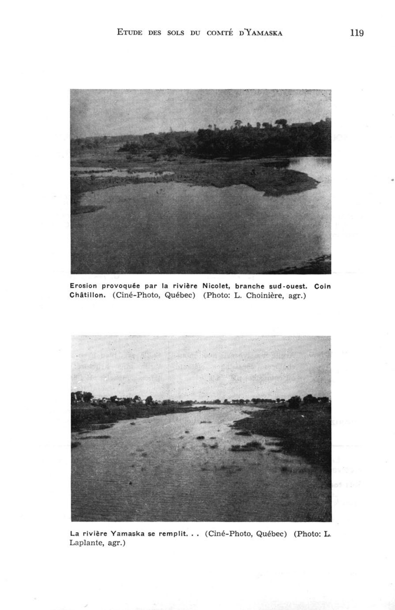
Alluvions non différenciées (1842 acres).
Il existe encore d'autres alluvions récentes fluvio-lacustres : plaines d'inondation, terres de pointe, etc. . . Ces sols possèdent une texture extrêmement variable. De plus, ils s'allongent en bandes très étroites le long des rivières et sont difficiles à cartographier sur les cartes utilisées. Elles ont été classifiées comme des sols non différenciés. En général, ce sont des sols assez fertiles, mais très sujets aux inondations printanières.
Suivant l'épaisseur des dépôts organiques, on peut diviser ces terrains en sols semi-tourbeux (half-bog) et en sols tourbeux (bog).
Les sols semi-tourbeux ne possèdent qu'une importance très secondaire dans le comté d'Yamaska. Leur superficie n'est que 626 acres. Ils sont constitués d'une couche de débris organiques plus ou mains décomposés reposant sur un substrat situé à environ deux pieds de la surface. Ce substrat peut être d'argile ou de sable.
| Ha (547 acres). | Hs (52 acres). | |
|---|---|---|
| HORIZON A 12 à 24 pouces d'épaisseur |
Couche de dépôts organiques de 12 à 24 pouces d'épaisseur, parfois de 30 pouces dans les zones de transition; débris organiques (bois, sphaigne, etc. . .) plus ou moins décomposés, de couleur noire; pH : 4.5. | |
| HORIZON G 6 à 8 pouces d'épaisseur |
Argile massive gris avec mouchetures; consistance collante ou compacte; pH : 6.0. | Sable gris bleu avec mouchetures; sans structure; consistance compacte; pH : 6.0. |
| HORIZON D | Argile massive gris bleu; consistance collante et plastique; neutre ou calcaire. | Sable gris bleu; sans structure, tassé ou sans consistance; neutre. |
Les sols semi-tourbeux, bien drainés, font d'excellents pâturages s'ils reçoivent une fertilisation adéquate.
Les sols tourbeux sont formés d'une tourbe soit bien décomposée (muck), soit mal décomposée (peat).
Les sols tourbeux bien décomposés sont très rares dans le comté d'Yamaska. Les débris organiques sont assez bien décomposés et contiennent un pourcentage relativement fort de matière minérale. La couleur est d'un noir dense et le sol tache les doigts.
Les sols tourbeux mal décomposés se confondent souvent avec les savanes et les sols marécageux.
Les tourbières et les savanes du comté d'Yamaska occupent une superficie de 3648 acres. Leur profondeur varie de 8 à 10 pieds et, souvent plus. Le substratum est une argile.
Dans le comté d'Yamaska, la tourbière de St-Bonaventure est la seule exploitée. Elle appartient à la Yamaska Peat.
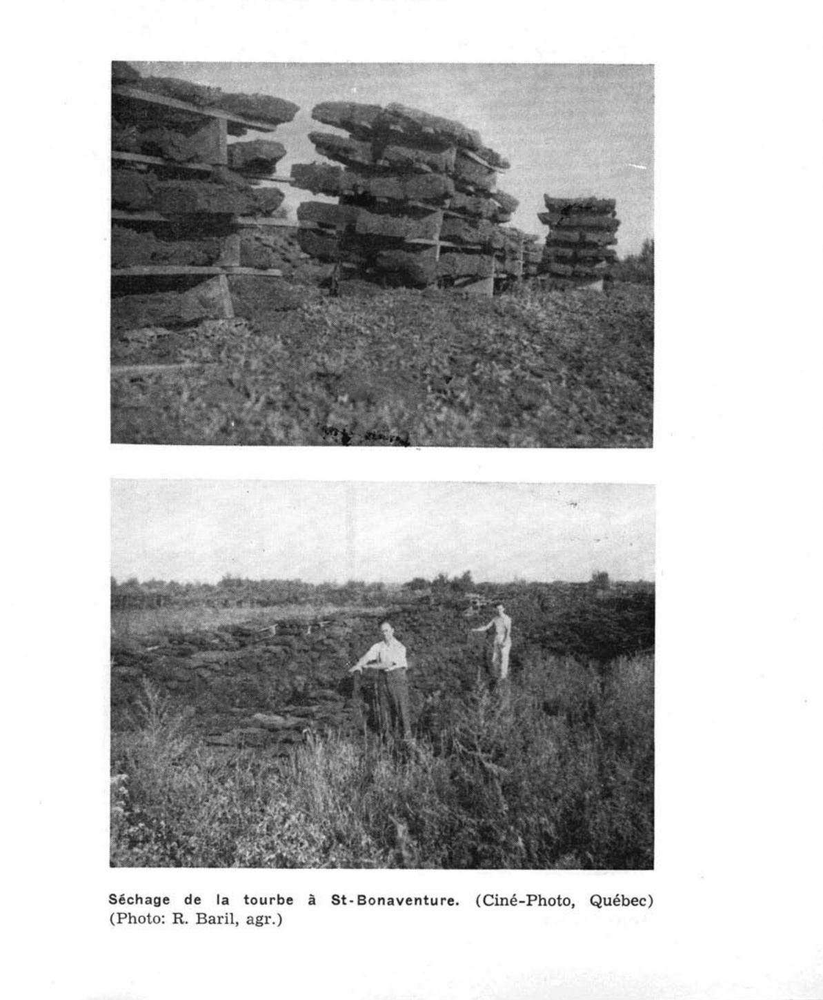
De texture généralement limoneuse, ces sols immergés pourraient devenir des polders.
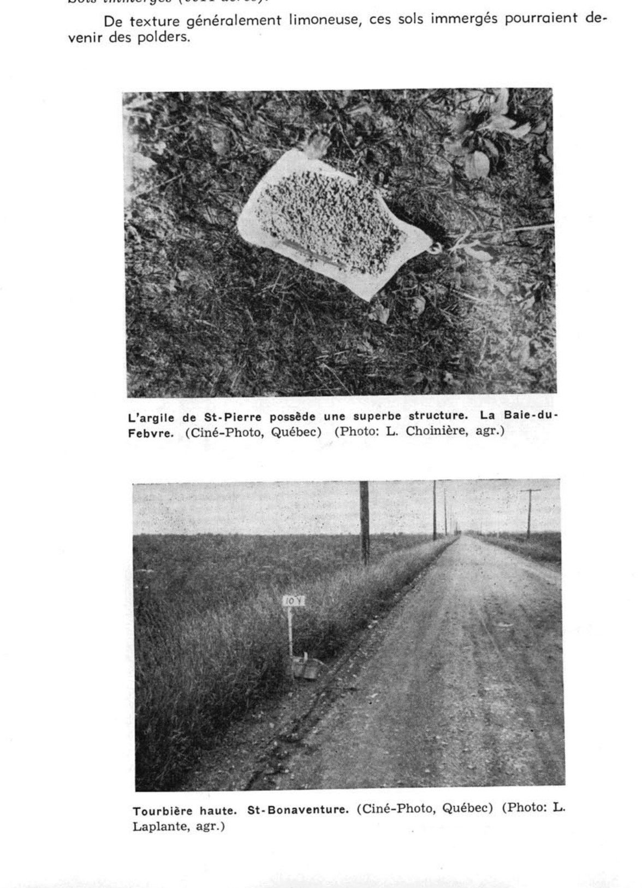
Le long des coulées et des rivières, il existe une multitude de pentes abruptes très sujettes à l'érosion sous toutes ses formes. La texture de ces coteaux et de ces coulées est généralement argileuse ou limono-argileuse et se confond avec la nature de la roche-mère des sols argileux, surtout des sols de la série de Ste-Rosalie et de Rideau.
Au point de vue pédologique, ces sols possèdent un profil tronqué dû à l'érosion. Aussi sont-ils tous cartographiés comme des sols divers de texture argileuse.
Aux endroits stratégiques où l'érosion en rigolets et en coulées a déjà accompli son oeuvre néfaste, il faut arrêter ce travail destructeur. Le travail pourrait se faire en collaboration avec le gouvernement et les municipalités intéressées.
Cependant, la plus grande partie de ces terrains ne sont encore victimes que d'une érosion lente mais certaine : l'érosion de surface. Elle paraît peut-être moins néfaste que l'érosion sous forme de rigolets ou de ravins, mais il faut la combattre énergiquement, car cette forme d'érosion est sérieuse et plus destructive. On ne doit pas labourer ces ravins ou les labourer le mains souvent possible. La meilleure utilisation est l'établissement de pâturages permanents fertilisés.
Les rares petites coulées encore boisées doivent demeurer dans cet état. C'est le meilleur moyen de prévenir les érosions et les éboulis.
Dans le cas des séries de Rideau, de Ste-Rosalie, des Saults, de St-Aimé, parfois même dans le cas des séries de St-Jude et de St-Samuel, l'ouverture des raies directement dans les coulées ou les ravins favorise souvent l'érosion en rigolets et en ravins. On peut constater le fait à plusieurs endroits dans le comté, surtout dans le cas du labour Richard effectué dans le sens de la pente. Il ne faudrait pas que les raies débouchent directement dans le ravin ou dans la coulée.
Et les ravins, les éboulis encore boisés! De grâce, n'allons pas leur enlever ce manteau d'arbres, de feuilles et de racines. C'est le rempart par excellente contre l'érosion.
Argile de la nature de l'argile de St-Pierre reposant sur de la matière organique à deux ou trois pieds de profondeur.
Une argile reposant sur la matière organique peut paraître paradoxal, mais le fait existe dans la paroisse de La Baie-du-Febvre. En effet, en bas de la terrasse partant du village de La Boie et s'allongeant vers la ville de Nicolet, les nombreux ruisseaux ont charroyé des matériaux argileux recouvrant ainsi un ancien dépôt de tourbe. Ces dépôts argileux, s'allongent en éventail le long des cours d'eau au pied de la terrasse. C'est l'accumulation des matériaux provenant de l'érosion superficielle des sols situés dans le bassin hydrographique de ces cours d'eau.
Série de Longue Pointe (150 acres) LP.
Dans la Commune de la Baie-du-Febvre, le long du lac, on rencontre des pointes ou des cordons de limon sableux, parfois de sable, comme à la Longue Pointe.
L'élévation est de quelques pieds supérieure aux sols de la série de La Baie. Le drainage est bon.
LE PROFIL, peu ou pas développé, est constitué d'un limon sableux jaunâtre avec quelques taches de rouille; la réaction est alcaline.
| Couche | Profondeur en pouces |
Description |
|---|---|---|
| 1 | 0 à 12 | Limon sableux jaunâtre; pH : 7.8. |
| 2 | 12 à 24 | Limon sableux jaunâtre; pH : 7.9. |
| 3 | 24 à 36 | Limon sableux jaunâtre avec taches de rouille; pH : 7.4. |
Ce sol n'a aucune importance agricole.
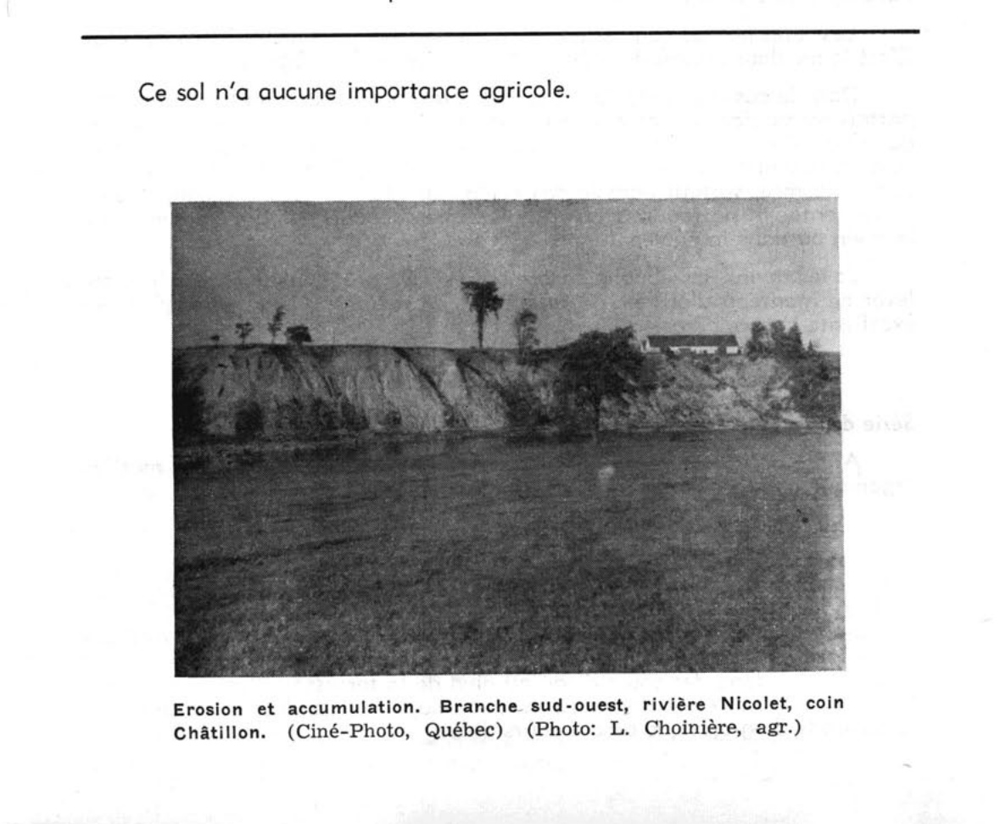
Le genre d'agriculture du comté d'Yamaska est la culture variée en vue de l'industrie laitière. En 1941, on y comptait 2,072 fermes exploitées et 4 fermes abandonnées ou vacantes. Environ 85% des cultivateurs du comté d'Yamoska sont propriétaires de leur ferme (voir tableaux XIII). La superficie des fermes varie de 1 à plus de 640 acres. La superficie moyenne varie de 51 à 200 acres. En totalisant les fermes exploitées, abandonnées et vacantes, il y a, dans Yamaska, 2,072 fermes couvrant une superficie de 199,783 acres, ce qui donne une grandeur moyenne de 96 acres par ferme.
TABLEAU XIII — EXPLOITATION AGRICOLES DU COMTE D'YAMASKA
| 1941 | 1951 | |||
|---|---|---|---|---|
| Nombre de fermes occupées : | 2,072 | 2,045 | ||
| Fermes de 1 à 4 acres | 24 | 32 | ||
| " 5 à 10 " | 61 | 52 | ||
| " 11 à 50 " | 324 | 331 | ||
| " 51 à 100 " | 641 | 689 | ||
| " 101 à 200 " | 837 | 777 | ||
| " 201 à 299 " | 151 | 138 | ||
| " 300 à 479 " | 33 | 24 | ||
| " 480 à 639 " | 1 | 1 | ||
| " 640 acres et plus | 0 | 1 | ||
| Nombre de fermes abandonnées ou vacantes : | 4 | 2 | ||
| Fermes occupées : | ||||
| par propriétaire | 1,759 | 84.9% | 1,824 | 89.2% |
| par gérant | 5 | 0.3% | 8 | 0.4% |
| par locataire | 98 | 4.7% | 98 | 4.8% |
| par propriétaire partiel | 210 | 10.1% | 115 | 5.6% |
En étudiant le tableau XIV on constate que 85.5% de la superficie totale du comté est occupée par ces 2,072 fermes. La superficie défrichée atteint 161,980 acres, soit 69.3% de la surface totale du comté, tandis que la forêt en occupe 11.7%, les pâturages naturels 4.1% et les marais 0.4%. Cependant, d'après la carte des sols du comté, on calcule 3,648 acres de tourbières et de sovanes, soit 1.6% du comté (voir tableau XXI).
De plus, la grande culture et le pâturage occupent 67.6% de la superficie totale, 79.0% de la superficie occupée et 97.6% de la superficie défrichée. C'est donc dire que la grande culture et l'industrie laitière sont à la base de l'agriculture du comté d'Yamaska.
D'après le tableau XV la valeur moyenne des fermes est de $5,795.00 soit $60.01 l'acre. En 1941, la valeur moyenne des bâtiments des cultivateurs du comté d'Yamaska représentait environ 50% de la valeur de leurs terrains.
TABLEAU XIV — UTILISATION DE LA TERRE DU COMTE D'YAMASKA
| 1931 | 1941 | |||||||||
|---|---|---|---|---|---|---|---|---|---|---|
| acres | % du total du comté |
% de la partie occupée |
% de la partie défri- chée |
% de la partie non défri- chée |
acres | % du total du comté |
% de la partie occupée |
% de la partie défri- chée |
% de la partie non défri- chée |
|
| Superficie totale du comté | 233,600 | 100 | 233,600 | 100 | ||||||
| Superficie occupée par ferme | 199,783 | 85.5 | 100 | 186,315 | 83.3 | 100 | ||||
| Superficie défrichée | 161,980 | 69.3 | 81.1 | 100 | 151,965 | 68.0 | 81.6 | 100 | ||
| Grande culture | 118,525 | 50.7 | 59.3 | 73.2 | 110,208 | 49.3 | 59.2 | 72.5 | ||
| Pâturages | 39,530 | 16.9 | 19.8 | 24.4 | 37,259 | 16.7 | 20.0 | 24.5 | ||
| Autre terre défrichée | 3,602 | 1.5 | 1.8 | 2.2 | 4,069 | 1.8 | 2.2 | 2.7 | ||
| Verger et vignoble | 68 | 110 | ||||||||
| Petits fruits et pépinières | 70 | 20 | ||||||||
| Jardin maraîcher | 182 | 0.1 | 0.2 | 0.2 | 89 | 0.2 | 0.2 | 0.3 | ||
| Jachère | 13 | 210 | ||||||||
| Superficie non défrichée | 37,803 | 16.2 | 18.9 | 100 | 34,350 | 15.4 | 18.4 | 100 | ||
| Forêt | 27,262 | 11.7 | 13.6 | 72.1 | 27,366 | 12.2 | 14.7 | 79.7 | ||
| Pâturage naturel | 9,575 | 4.1 | 4.8 | 25.3 | 5,602 | 2.5 | 3.0 | 16.3 | ||
| Marais | 966 | 0.4 | 0.5 | 2.6 | 1,382 | 0.6 | 0.7 | 4.0 | ||
| Superficie non occupée | 33,817 | 14.5 | 37,285 | 16.7 | ||||||
TABLEAU XV — VALEUR DES FERMES DU COMTÉ D'YAMASKA
| 1941 | 1931 | |||||
|---|---|---|---|---|---|---|
| Valeur totale | Par ferme | Par acre | Valeur totale | Par ferme | Par acre | |
| Valeur totale | $12,006,837. | $5,795. | $60.01 | $15,779,412. | $7,716. | $84.60 |
| Terrains | 1,835,337. | 2,869. | 29.76 | 9,617,200. | 4,703. | 43.62 |
| Bâtiments | 5,944,900. | 1,406. | 14.58 | 3,321,500. | 1,624. | 15.06 |
| Outillage | 2,913,200. | 586. | 6.07 | 1,449,100. | 708. | 6.57 |
| Bestiaux | 1,213,400. | 934. | 9.69 | 1,391,612. | 680. | 6.31 |
La valeur brute des produits agricoles est de $1,393. par ferme (tableau XVI) dont $574. provenant de la grande culture et $675. environ de l'industrie animale : lait, beurre, viande, etc. La balance des revenus provient des produits forestiers, du sirop et du sucre de l'érable, de la culture maraîchère, etc.
TABLEAU XVI — VALEUR BRUTE DES PRODUITS AGRICOLES DU COMTE D'YAMASKA
| 1941 | 1931 | |||
|---|---|---|---|---|
| Par ferme | Par ferme | |||
| Valeur brute totale | $2,886,864. | $1,393.00 | $2,680,424. | $1,311.00 |
| Grande culture | 1,190,514. | 574.00 | 1,180,364. | 577.00 |
| Légumes | 59,393. | 29.00 | 62,504. | 31.00 |
| Fruits et produits de l'érable | 42,437. | 20.00 | 22,243. | 11.00 |
| Produits forestiers | 160,242. | 77.00 | 161,591. | 79.00 |
| Produits des serres | 3,901. | 2.00 | ||
| Produits des pépinières | 118. | |||
| Bétail vendu sur pied | 439,140. | 212.00 | 195,578. | 95.00 |
| Bétail abattu | 92,454. | 45.00 | 205,753. | 100.00 |
| Produits animaux | 897,893. | 414.00 | 848,490. | 415.00 |
| Animaux à fourrure | 4,673. | 22.00 | ||
La superficie ensemencée en avoine, en orge, en grains mélangés, etc., est assez importante, mais les rendements sont faibles, comme le démontre le tableau XVII : 19.3 minots à l'acre pour l'avoine, 18.6 minots pour l'orge, 17.4 minots pour les grains mélangés, etc. Il est certain que les petits rendements obtenus sur les sols de texture sableuse, par exemple les sols des séries de Sorel, de St-Amable, de Ste-Sophie, de St-Jude, etc., viennent diminuer considérablement les moyennes obtenues sur les sols des séries de Ste-Rosalie, de Rideau, de Courval, des Saults, de Bedford, etc. Cependant, règle générale, les rendements en céréales sont trop faibles. Il faut les augmenter par un meilleur choix de la semence, une fertilisation plus adéquate, etc.
TABLEAU XVII — SUPERFICIE ET RENDEMENT DES CEREALES ET DES GRAINES DU COMTE D'YAMASKA
| 1941 | 1931 | |||||
|---|---|---|---|---|---|---|
| Acres | bois | b. par acre | Acres | bois | b. par acre | |
| Blé | 74 | 746 | 19.3 | 388 | 5,832 | 15.0 |
| Orge | 2,494 | 46,497 | 18.6 | 1,547 | 26,961 | 18.6 |
| Avoine | 32,666 | 629,699 | 19.3 | 33,466 | 650,858 | 19.4 |
| Seigle | 2 | 45 | 22.2 | 31 | 639 | 20.6 |
| Maïs à grain | 88 | 1,252 | 12.7 | 168 | 3,583 | 21.3 |
| Graine de lin | 0 | 0 | 42 | 379 | 9.0 | |
| Sarrasin | 3,768 | 45,539 | 12.1 | 4,222 | 54,437 | 12.9 |
| Haricots | 151 | 2,036 | 13.5 | 168 | 2,539 | 15.1 |
| Pois secs | 91 | 991 | 10.1 | 168 | 1,667 | 9.9 |
| Graines mélangées | ||||||
Il en est de même pour les rendements en foin. Ils sont inférieurs à une tonne l'acre, comme le démontre très bien le tableau XVIII. En 1941, on ne cultivait dans le comté d'Yomaska que 110 acres de luzerne. C'est certainement trop peu.
TABLEAU XVIII — SUPERFICIE ET RENDEMENT DES CULTURES FOURRAGERES, POMMES DE TERRE, RACINES ET AUTRES CULTURES DU COMTÉ D'YAMASKA
| 1941 | 1931 | |||||
|---|---|---|---|---|---|---|
| Acres | Rendements | par acre | Acres | Rendements | par acre | |
| Foin cultivé | 70,552 | 69,229 t. | 0.98 t. | 64,445 | 56,743 t. | 0.88 t. |
| Luzerne | 110 | 306 t. | 2.78 t. | 99 | 132 t. | 1.38 t. |
| Maïs fourrager | 1,049 | 8,168 t. | 7.78 t. | 625 | 5,138 t. | 8.22 t. |
| Pommes de terre | 1,333 | 174,927 b. | 131 b. | 980 | 113,702 b. | 116 b. |
| Navet et choux de Siam | 743 | 10,420 t. | 14.0 t. | 318 | 4,600 t. | 14.4 t. |
| Betteraves fourragères et à sucre | 23 | 373 t. | 16.2 t. | 16 | 123 t. | 7.7 t. |
| Autres racines | 8 | 86 t. | 10.7 t. | |||
| Tabac | 39 | 21,395 lvs | 548 lvs | 76 | 44,837 lvs | 590 lvs |
La population des animaux domestiques du comté comprend 5,599 chevaux, 30,333 bêtes à cornes, 4,713 moutons, 17,771 porcs, 124,568 volailles, etc.
TABLEAU XIX — ANIMAUX DOMESTIQUES DU COMTÉ D'YAMASKA
| 1941 | 1931 | |||
|---|---|---|---|---|
| Nombre | Moyenne par ferme | Nombre | Moyenne par ferme | |
| Chevaux | 5,599 | 2.7 | 4,879 | 2.4 |
| Mulets | 0 | 1 | ||
| Bêtes à cornes | 30,333 | 14.6 | 28,880 | 14.1 |
| Moutons | 4,713 | 2.3 | 5,957 | 2.9 |
| Chèvres | 1 | 3 | ||
| Porcs | 17,771 | 8.6 | 15,669 | 7.7 |
| Volailles | 124,568 | 60.1 | 123,336 | 60.3 |
| Nombre de ruches d'abeilles | 2,811 | 1.3 | 2,507 | 1.2 |
La moyenne de la production laitière est de 5,027 livres de lait par vache; elle était de 4,422 en 1931.
TABLEAU XX — PRODUCTION ANIMALE DU COMTE D'YAMASKA
| 1941 | 1931 | |||||
|---|---|---|---|---|---|---|
| Nombre | Production | Par unité | Nombre | Production | Par unité | |
| Vaches traites | 16,160 | 81,236,017 lvs | 5,027 lvs | 14,869 | 65,752,536 lvs | 4,422 lvs |
| Poules | 43,190 | 392,910 dzs | 9.2 dzs | 50,654 | 364,897 dzs | 7.2 dzs |
| Moutons tondus | 2,291 | 14,829 lvs | 6.5 lvs | 3,136 | 20,228 lvs | 6.5 lvs |
| Abeilles : | Ruches 2,811 |
Ruches 2,507 |
||||
| Miel | 133,512 lvs | 47.5 lvs | 127,669 lvs | 50.9 lvs | ||
| Cire | 1,897 lvs | 0.67 lv. | 2,756 lvs | 1.10 lvs | ||
Quelques fermes du comté produisent des cultures spécialisées : tomates, fraises, choux, patates, pommes, raisin, etc. Ces cultures spécialisées se rencontrent surtout dans les paroisses de Notre-Dame-de-Pierreville, de Pierreville. Il en existe quelques-unes dans St-Joachim et St-Zéphirin. La paroisse de St-Elphège possède un très beau vignoble.
On produit aussi des prunes, des cerises, du miel, du sirop et du sucre d'érable (voir tableau XXI).
TABLEAU XXI — FRUITS ET PRODUITS DE L'ERABLE
DU COMTE D'YAMASKA
| 1941 | 1931 | |||||
|---|---|---|---|---|---|---|
| Nombre | Production | Par unité | Nombre | Production | Par unité | |
| Jeunes pommiers | 1,997 | 2,046 | ||||
| Pommiers en production | 847 | 603 bois. | 0.71 b. | 2,262 | 1,924 bois. | 0.85 b. |
| Jeunes pruniers | 428 | 441 | ||||
| Pruniers en production | 94 | 26 bois. | 0.28 b. | 1,141 | 394 bois. | 0.34 b. |
| Jeunes cerisiers | 55 | 164 | ||||
| Cerisiers en production | 150 | 34 bois. | 0.23 b. | 1,247 | 434 bois. | 0.34 b. |
| Erables entaillés : | 225,982 | 225,800 | ||||
| Sirop | 11,448 gals. | 0.05 g. | 5,934 gals. | 0.03 g. | ||
| Sucre | 32,980 lvs | 0.14 lv. | 21,994 lvs | 0.10 lv. | ||
On y cultive aussi la betterave à sucre. Voici quelques statistiques gracieusement fournies par M. J.-E. Lemire, agronome, directeur de la Production de la Betterave à Sucre à la Raffinerie de St-Hilaire.
TABLEAU XXII — CULTURE DE LA BETTERAVE A SUCRE
DANS LE COMTE D'YAMASKA
| Années | 1944 | 1945 | 1946 | 1947 | 1948 | 1949 | 1950 |
|---|---|---|---|---|---|---|---|
| Nombre de producteurs | 60 | 20 | 10 | 13 | 11 | 32 | 39 |
| Nombre d'acres | 27 | 22 | 16 | 20 | 79.3 | 200 | |
| Nombre de tonnes | 425.07 | 107.05 | 123.88 | 91.02 | 137.79 | 515.90 | 1724.00 |
| Rendement à l'acre | 3.96 | 5.63 | 5.68 | 6.88 | 6.50 | 8.62 |
Au cours des discussions précédentes sur les différentes séries de sol, il a été dit quelques mots sur la valeur agricole de ces séries. Leurs caractéristiques défavorables furent discutées en suggérant parfois quelques méthodes d'améliaration. Actuellement, on ne possède aucune donnée précise. Il est à espérer que, dans un avenir prochain, des expériences de fertilité soient établies dans le but de fournir des données spécifiques sur les types de sols et les variétés de cultures.
En attendant, quelques généralisations furent exprimées dans le tableau XXIII. On y verra que, souvent, les sols diffèrent beaucoup les uns des autres au point de vue de la productivité et de l'adaptabilité.
L'estimation fut basée sur la productivité générale et la facilité d'exploitation de chaque sol, en tenant compte de la capacité de production d'une culture spécifique.
Il ne serait pas suffisant de se baser uniquement sur les caractères internes du sol comme milieu de croissance. Il faut, de plus, faire intervenir les caractères externes afin de déterminer jusqu'à quel point ils affectent la production. Il faut, en effet, que les méthodes spéciales de culture, le contrôle de l'érosion, etc., ne soient pas néfastes à la culture du sol.
Les caractères internes qui affectent la croissance des plantes sont principalement ceux qui sont chargés du maintien de l'humidité optimum et des éléments nutritifs de la plante. Ces caractères sont la quantité de matière organique, la texture, la structure, la réserve d'éléments nutritifs et l'eau, ainsi que les facteurs affectant leur disponiblité. Les facteurs externes affectent moins directement la croissance des plantes; leur influence se fait surtout sentir sur la facilité de travail du sol ou sur son degré de conservation. Ces facteurs affectent le labour et les autres travaux des champs et déterminent ainsi les méthodes nécessaires à la reconstruction, au maintien ou à l'augmentation de la productivité du sol. Les facteurs externes sont la topographie, le drainage externe, la quantité de raches et l'érosion.
Comme on ne possède que peu de données sur le comté d'Yamaska, on doit recourir au raisonnement inductif. On peut obtenir une évaluation théorique en se basant sur les exigences de certaines plantes au point de vue du sol, si l'on connaît ces exigences pour un sol donné. Ces estimations établies pour les sols du comté d'Yamaska proviennent des observations générales faites durant les années de classification par les classificateurs eux-mêmes, des données des agronomes du comté et de certains renseignements obtenus de quelques cultivateurs.
On comprendra facilement que ces estimations sont des moyennes. Cependant, il est bon de mentionner que les variations dans un type ont une grande influence sur l'interprétation de ces moyennes. Par exemple, dans l'étendue classifiée comme sable de St-Amable, il existe une grande variation dans le facteur drainage et les autres conditions inhérentes. Vu que le sable de St-Amable est un catena plutôt qu'un type, son évaluation peut être un peu plus élevée à cause de son étendue plutôt qu'à sa moyenne. Les estimations données se rapportent à la plupart des récoltes faites sur les fermes de la région. Quelques plantes ne poussent pas d'une manière intensive sur tous les types de sol.
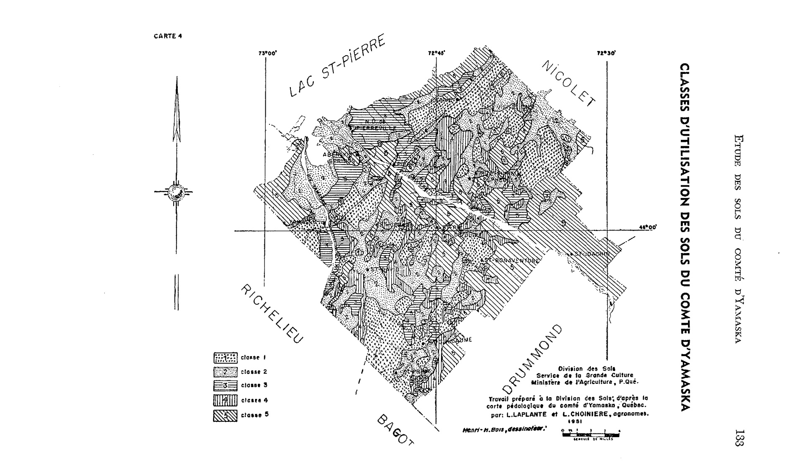
Lac St-Pierre, Nicolet, Richelieu, Drummond, Bagot
| SOL | Avoine | Orge | Luzerne | Trèfle rouge | Trèfle alsike | Mil | Blé d'inde fourrager | Choux de Siam | Patates | Pâturages | Adaptabilité |
|---|---|---|---|---|---|---|---|---|---|---|---|
| CLASSE I — BON | |||||||||||
| Argile de St-Urbain | B | B | B | B | B | B | P | M | P | B | Sols bien adaptés à une production intensive des cultures générales d'une ferme. |
| Argile de Ste-Rosalie | B | M | M | B-M | B | B | P | M | P | B | |
| Argile de St-Pierre | B | B | M | M | B | B | B | M | P | B | |
| Argile de Rideau | B-M | M-P | M | M | B-M | B-M | M-P | M | P | B-M | |
| CLASSE II — BON À MOYEN | |||||||||||
| Limon argileux d'Abénakis | M | M | M | B-M | B | B | M | M | P | B | Sols moyennement à bien adaptés à une production intensive des cultures générales sur une ferme. |
| Limon sablo-argileux de Bedford | M | M | M | M | B | M | P | M | P | B | |
| Limon sableux de Raimbault | M | M | M | M | B | M | P | M | P | B | |
| Limon sableux des Saults | M | M | M | M | B-M | M | M | M | P | B-M | |
| Limon sablo-argileux de Godfroid | M | P | M | M | B | M | M-P | M | P | B-M | |
| Limon argileux de Levrard | B-M | M-P | M | M | B-M | B-M | P | M | P | B-M | |
| Limon sableux de Comtois | B | M | M | M | B | B | M | M | M | B | |
| Limon sableux de Courval | M | P | P | M | B | M | P | M | P | B-M | |
| Argile de Du Febvre | B | M | M | M | B | B | P | M | P | B | |
| CLASSE III — MOYEN | |||||||||||
| Limon sableux de St-Aimé | M | P | P | M | B-M | M | P | M | P | B-M | Sols moyennement adaptés aux cultures générales d'une ferme. Parfois mieux adaptés à une culture mixte, aux pâturages ou à la sylviculture. |
| Limon argileux de Nicolet | M | M | M | B-M | B-M | M | P | M | P | B | |
| Limon sableux des Orignaux | M | P | M-P | M | M | M | M | M | M | M | |
| Limon sableux de St-François | P | P | P | P | M | M | M | M | B | P | |
| Sable de St-Jude | M-P | P | P | M-P | M | P | P | M | M | M | |
| Limon sableux de Pierreville | M-P | P | P | M-P | M | P | M | M | M | P | |
| Limon sableuxde St-Sylvère | M | P | P | M | M | P | M | M | M | P | |
| TABLEAU XXIII (suite) | |||||||||||
|---|---|---|---|---|---|---|---|---|---|---|---|
| SOL | Avoine | Orge | Luzerne | Trèfle rouge | Trèfle alsike | Mil | Blé d'inde fourrager | Choux de Siam | Patates | Pâturages | Adaptabilité |
| CLASSE IV — MOYEN À PAUVRE | |||||||||||
| Sable de St-Damase | M-P | P | P | M-P | M | P | P | M | P | M | Sols moyennement à pauvrement adaptés aux cultures générales d'une ferme. Souvent mieux adaptés à la puissance et à la sylviculture. |
| Sable d'Aston | M-P | P | P | M-P | M | P | P | M | P | M | |
| Sable de De Guire | M-P | P | P | M | B-M | P | M-P | M-P | P | M | |
| Sable de Ste-Sophie | P | P | P | P | M | P | M-P | M-P | B-M | P | |
| CLASSE V — PAUVRE | |||||||||||
| Sable grossier de St-François | P | P | P | P | P | P | P | P | M | P | Sols très pauvrement adaptés aux cultures générales d'une ferme. Généralement mieux adaptés aux pâturages ou à la sylviculture. Quelques-uns de ces sols conviennent à une culture spécialisée sur des étendues choisies. |
| Sable de St-Samuel | P | P | P | P | M | P | P | P | P | M | |
| Grande-Ligne | P | P | P | P | P | P | M | P | M | P | |
| Sable de Sorel | P | P | P | P | P | P | P | P | M | P | |
| Sable de St-Amable | P | P | P | P | P | P | P | P | P | P | |
| Limon argileux de La Baie | P | P | P | P | P | P | P | P | P | P | |
| Sable de Longue Pointe | P | P | P | P | P | P | P | P | P | P | |
| B—Bon, B-M—Bon à moyen, M—Moyen, M-P—Moyen à pauvre, P—Pauvre. | |||||||||||
Les engrais chimiques commerciaux sont employés sur plusieurs fermes, mais la chaux est encore beaucoup trop peu appliquée. Le fumier de ferme sert tout particulièrement à engraisser les sols plus légers.
Les sols du comté d'Yamaska furent groupés en cinq classes selon leur productivité, leur facilité d'exploitation et leur degré de conservation. La carte No 4 indique d'une manière générale la distribution de ces classes. En considérant l'échelle de la carte et la généralisation nécessaire à apporter sur une telle carte, il est évident qu'elle ne peut être employée pour les estimés d'une ferme en particulier.
TABLEAU XXIV — SUPERFICIE EN ACRES DE CHAQUE CLASSE DE SOLS
| acres | % | ||
|---|---|---|---|
| Classe I — Bon | |||
| Argile de St-Urbain | 3123 | 1.3 | |
| Argile de Ste-Rosalie | 30531 | 13.5 | |
| Argile de St-Pierre | 2852 | 1.3 | |
| Argile de Rideau | 4420 | 1.9 | |
| Classe II — Bon à moyen | |||
| Limon argileux d'Abénakis | 3942 | 1.8 | |
| Limon sablo-argileux de Bedford | 1151 | 0.5 | |
| Limon sableux de Raimbault | 1383 | 0.6 | |
| Limon sableux des Saults | 3226 | 1.5 | |
| Limon sablo-argileux de Godfroy | 1982 | 0.9 | |
| Limon argileux de Levrard | 48 | 0.0 | |
| Limon sableux de Comtois | 9725 | 4.3 | |
| Limon sableux de Courval | 32427 | 14.3 | |
| Argile de Du Febvre | 314 | 0.2 | |
| Classe III — Moyen | |||
| Limon sableux de St-Aimé | 1809 | 0.8 | |
| Limon argileux de Nicolet | 2488 | 1.1 | |
| Limon sableux des Orignaux | 899 | 0.4 | |
| Limon sableux de St-François | 1609 | 0.7 | |
| Sable de St-Jude | 10662 | 4.7 | |
| Limon sableux de Pierreville | 10825 | 4.7 | |
| Limon sableux de St-Sylvère | 6647 | 2.9 | |
| Classe IV — Moyen à pauvre | |||
| Sable de St-Damase | 4223 | 1.9 | |
| Sable d'Aston | 15275 | 6.8 | |
| Sable de De Guire | 4879 | 2.2 | |
| Sable de Ste-Sophie | 1163 | 0.5 | |
| Séries | Types ou phases | Symboles | La Baie-du-Febvre | La Visitation | Notre-Dame-de-Pierreville | Pierreville | St-Bonaventure | St-David | St-Elphège | St-François-du-Lac | St-Gérard | St-Guillaume | St-Joachim | St-Pie-de-Guire | St-Zéphirin | Yamaska | Total par série, pour le comté | ||||||||||||||||||
|---|---|---|---|---|---|---|---|---|---|---|---|---|---|---|---|---|---|---|---|---|---|---|---|---|---|---|---|---|---|---|---|---|---|---|---|
| acres | % | acres | % | acres | % | acres | % | acres | % | acres | % | acres | % | acres | % | acres | % | acres | % | acres | % | acres | % | acres | % | acres | % | acres | % | ||||||
| ABÉNAKIS | limon argileux | Ab | 122 | 1.9 | 174 | 0.9 | 1500 | 7.5 | 2146 | 11.4 | 3942 | 1.8 | |||||||||||||||||||||||
| ST-AIMÉ | limon sableux | Ai | 283 | 1.0 | 400 | 3.8 | 389 | 2.6 | 553 | 2.3 | 58 | 0.6 | 288 | 1.5 | 38 | 0.2 | 2009 | 0.8 | |||||||||||||||||
| ST-AMABLE | sable | Am | 189 | 0.6 | 1292 | 12.4 | 1803 | 12.0 | 7579 | 39.9 | 10 | 0.0 | 2170 | 22.8 | 3787 | 18.9 | 915 | 10.5 | 1206 | 5.7 | 7866 | 54.4 | 1942 | 15.5 | 4254 | 23.8 | 33013 | 14.6 | |||||||
| ASTON | sable | As | 416 | 1.4 | 753 | 7.2 | 798 | 5.3 | 1582 | 8.3 | 4184 | 17.5 | 737 | 8.7 | 821 | 4.1 | 742 | 8.6 | 2663 | 12.5 | 96 | 0.7 | 1290 | 10.3 | 471 | 2.6 | 15275 | 6.8 | |||||||
| BEDFORD | limon sablo-argileux | Bd | 814 | 5.6 | 337 | 1.9 | 1511 | 0.5 | |||||||||||||||||||||||||||
| COMTOIS | limon sableux | Cm | 1350 | 20.4 | 134 | 0.9 | 4040 | 20.2 | 97 | 1.1 | 64 | 0.5 | 4040 | 22.5 | 9725 | 4.3 | |||||||||||||||||||
| COURVAL | limon sableux | Co | 3533 | 12.2 | 2820 | 26.8 | 780 | 5.2 | 2062 | 10.9 | 8707 | 36.2 | 1969 | 20.7 | 990 | 5.0 | 3310 | 37.9 | 2910 | 13.5 | 13 | 0.1 | 2833 | 22.8 | 2082 | 11.6 | 418 | 2.3 | 32427 | 14.3 | |||||
| ST-DAMASE | sable | Da | 196 | 0.7 | 597 | 5.7 | 519 | 3.5 | 452 | 2.4 | 685 | 7.3 | 792 | 3.7 | 67 | 0.5 | 717 | 4.0 | 198 | 1.1 | 4223 | 1.9 | |||||||||||||
| DU FEBVRE | argile | DF | 314 | 1.1 | 314 | 0.2 | |||||||||||||||||||||||||||||
| ST-FRANÇOIS | limon sablo-argileux | Go | 20 | 0.2 | 217 | 3.2 | 422 | 2.8 | 116 | 0.6 | 193 | 2.0 | 846 | 4.2 | 107 | 1.2 | 449 | 3.1 | 59 | 0.5 | 38 | 0.2 | 2467 | 1.1 | |||||||||||
| sable grossier | Fsg | 331 | 90 | 280 | 107 | 12 | 38 | ||||||||||||||||||||||||||||
| limon sableux | Fsl | 20 | 141 | 40 | 45 | 566 | 123 | 59 | |||||||||||||||||||||||||||
| limon sablo-graveleux | Fgl | 76 | 116 | 58 | 61 | ||||||||||||||||||||||||||||||
| GODEROY | limon sablo-argileux | 992 | 3.4 | 990 | 6.6 | 1982 | 0.9 | ||||||||||||||||||||||||||||
| GRANDE-LIGNE | 898 | 3.1 | 138 | 1.3 | 281 | 1.9 | 102 | 0.5 | 519 | 2.2 | 150 | 1.5 | 71 | 0.8 | 1119 | 5.2 | 402 | 2.8 | 209 | 1.6 | 177 | 1.0 | 4066 | 1.8 | |||||||||||
| sable | GLs | 850 | 93 | 255 | 233 | 150 | 59 | 530 | 114 | 70 | 116 | ||||||||||||||||||||||||
| gravier sableux | Gl-g | 48 | 45 | 26 | 102 | 286 | 12 | 589 | 288 | 139 | 61 | ||||||||||||||||||||||||
| DE GUIRE | sable | Gu | 1947 | 6.7 | 1335 | 8.9 | 150 | 0.8 | 934 | 9.7 | 96 | 1.1 | 638 | 3.0 | 824 | 5.8 | 1400 | 11.2 | 240 | 1.3 | 4879 | 2.2 | |||||||||||||
| ST-JUDE | sable | J | 1718 | 11.4 | 332 | 1.8 | 970 | 4.5 | 131 | 1.3 | 548 | 2.7 | 186 | 2.1 | 638 | 3.0 | 824 | 5.8 | 1400 | 11.2 | 1797 | 10.0 | 2118 | 11.8 | 10662 | 4.7 | |||||||||
| LA BAIE | limon argileux à limon sablo-argileux | LB | 2058 | 7.1 | 2058 | 0.9 | |||||||||||||||||||||||||||||
| LEVRARD | limon argileux | Lv | 48 | 0.4 | 48 | 0.4 | |||||||||||||||||||||||||||||
| LONGUE-POINTE | sable | Lp | 150 | 0.5 | 150 | 0.1 | |||||||||||||||||||||||||||||
| NICOLET | limon argileux | Ni | 2488 | 8.6 | 2488 | 1.1 | |||||||||||||||||||||||||||||
| ORIGNAUX | limon sableux | Or | 210 | 2.0 | 22 | 0.3 | 53 | 0.4 | 3 | 0.0 | 211 | 2.2 | 100 | 0.5 | 124 | 0.6 | 64 | 0.4 | 50 | 0.4 | 62 | 0.4 | 899 | 0.4 | |||||||||||
| PIERREVILLE | 397 | 1.4 | 3863 | 38.2 | 2450 | 16.3 | 2020 | 10.1 | 50 | 0.6 | 2045 | 11.4 | 10825 | 4.7 | |||||||||||||||||||||
| limon sableux | Pils | 1809 | 338 | 2020 | 50 | 2045 | |||||||||||||||||||||||||||||
| sable limoneux | Pisl | 397 | 4054 | 2112 | |||||||||||||||||||||||||||||||
| ST-PIERRE | argile | Pr | 2487 | 8.6 | 365 | 2.4 | 2852 | 1.3 | |||||||||||||||||||||||||||
| STE-ROSALIE | argile | R | 2296 | 7.9 | 1854 | 17.6 | 307 | 2.1 | 2782 | 14.8 | 4138 | 17.4 | 1441 | 15.1 | 742 | 3.7 | 3136 | 35.9 | 5656 | 26.4 | 116 | 0.8 | 2125 | 17.0 | 3941 | 22.7 | 1997 | 11.3 | 30531 | 13.5 | |||||
| RAIMBAULT | limon sableux | Rb | 6 | 0.0 | 56 | 0.5 | 16 | 0.2 | 38 | 0.2 | 793 | 5.5 | 474 | 2.6 | 1383 | 0.6 | |||||||||||||||||||
| RIDEAU | 2209 | 7.6 | 119 | 1.1 | 303 | 2.0 | 160 | 0.7 | 17 | 0.2 | 6 | 0.0 | 3 | 0.0 | 1398 | 7.7 | 205 | 1.1 | 4420 | 1.9 | |||||||||||||||
| argile | Ri | 199 | 119 | 303 | 160 | 17 | 6 | 3 | 1398 | 205 | |||||||||||||||||||||||||
| argile avec taches de sable à la surface | Ri-s | 2010 | |||||||||||||||||||||||||||||||||
| SOREL | sable | S | 253 | 0.9 | 7 | 0.0 | 19 | 0.1 | 700 | 3.7 | 554 | 2.3 | 116 | 1.2 | 212 | 1.0 | 83 | 0.6 | 134 | 1.1 | 34 | 0.2 | 2112 | 0.9 | |||||||||||
| ST-SAMUEL | sable | Sm | 219 | 1.2 | 20 | 0.2 | 86 | 0.4 | 112 | 1.1 | 65 | 0.3 | 95 | 0.4 | 962 | 6.6 | 321 | 2.6 | 718 | 4.0 | 2598 | 1.1 | |||||||||||||
| STE-SOPHIE | sable | Sp | 200 | 1.3 | 51 | 0.5 | 86 | 0.4 | 26 | 0.2 | 800 | 6.4 | 1163 | 0.5 | |||||||||||||||||||||
| SAULTS | limon sableux | So | 833 | 2.9 | 556 | 5.3 | 26 | 0.4 | 977 | 6.5 | 19 | 0.2 | 106 | 1.0 | 557 | 2.7 | 6 | 0.0 | 3226 | 1.5 | |||||||||||||||
| ST-SYLVERE | 54 | 0.2 | 52 | 0.5 | 1334 | 7.0 | 925 | 4.2 | 172 | 1.7 | 100 | 0.5 | 2568 | 12.0 | 587 | 4.0 | 708 | 5.6 | 147 | 0.8 | 6647 | 2.9 | |||||||||||||
| limon sableux | Sy | 54 | 52 | 1334 | 618 | 172 | 100 | 2043 | 335 | 708 | 138 | ||||||||||||||||||||||||
| limon sablo-pierreux | Syr | 307 | 525 | 252 | 9 | ||||||||||||||||||||||||||||||
| ST-URBAIN | argile | U | 3123 | 14.5 | 3123 | 1.3 | |||||||||||||||||||||||||||||
| SOLS SEMI-TOURBEUX | 488 | 1.8 | 42 | 0.4 | 39 | 0.3 | 44 | 0.3 | 626 | 0.3 | |||||||||||||||||||||||||
| sur argile | Ha | 488 | 42 | 26 | 18 | ||||||||||||||||||||||||||||||
| sur sable | Hs | 13 | 13 | 26 | |||||||||||||||||||||||||||||||
| SOLS TOURBEUX ET SAVANES | 70 | 0.5 | 1062 | 5.6 | 526 | 3.6 | 1990 | 11.1 | 3648 | 1.6 | |||||||||||||||||||||||||
| tourbe bien décomposée | TN | 562 | 70 | ||||||||||||||||||||||||||||||||
| tourbe mal décomposée | T | 500 | |||||||||||||||||||||||||||||||||
| savanes et sols marécageux | 456 | 1990 | |||||||||||||||||||||||||||||||||
| SOLS IMMERGÉS | i | 5120 | 17.7 | 1037 | 15.6 | 384 | 2.6 | 3309 | 16.5 | 64 | 0.4 | 9914 | 4.4 | ||||||||||||||||||||||
| ALLUVIONS RÉCENTES NON DIFFÉRENCIÉES | 96 | 0.9 | 19 | 0.1 | 60 | 0.3 | 26 | 0.1 | 74 | 0.5 | 5 | 0.0 | 1562 | 8.7 | 1842 | 0.8 | |||||||||||||||||||
| PENTES ABRUPTES, RAVINS, etc. | e | 1325 | 4.6 | 1542 | 14.7 | 510 | 3.4 | 416 | 2.2 | 2957 | 12.3 | 269 | 2.8 | 326 | 1.6 | 19 | 0.2 | 70 | 0.3 | 352 | 2.4 | 627 | 5.0 | 774 | 4.3 | 422 | 2.4 | 9609 | 4.3 | ||||||
| TOTAL | 28932 | 100.0 | 10512 | 100.0 | 6637 | 100.0 | 15045 | 100.0 | 18945 | 100.0 | 23763 | 100.0 | 9574 | 100.0 | 20039 | 100.0 | 8735 | 100.0 | 21345 | 100.0 | 14445 | 100.0 | 12835 | 100.0 | 17481 | 100.0 | 18009 | 100.0 | 226297 | 100.0 | |||||
TABLEAU XXV
SUPERFICIE ET DISTRIBUTION DES SÉRIES ET DES TYPES DE SOLS DU COMTÉ D'YAMASKA
PAROISSES
| Sable grossier de St-François | 858 | 0.4 |
| Sable de St-Samuel | 2595 | 1.1 |
| Grande-Ligne | 4066 | 1.8 |
| Sable de Sorel | 2112 | 0.9 |
| Sable de St-Amable | 33013 | 14.6 |
| Limon argileux de La Baie | 2058 | 0.9 |
| Sable de Longue-Pointe | 150 | 0.1 |
| Tourbières, savanes, sols semi-tourbeux, sols immergés | 14188 | 6.3 |
Dans le but d'intéresser le lecteur, et tout spécialement, les cultivateurs du comté d'Yamaska et le personnel du Ministère de l'Agriculture, on a compilé les tableaux XXV et XXVI.
Le tableau XXV donne la superficie, la distribution des séries et des types de sols par paroisse. Dans le tableau XXVI on fait une synthèse de la superficie des sols légers, des sols lourds et des sols organiques.
Ces deux tableaux sont basés sur la carte des sols du comté. Dans le cas d'un complexe, la superficie de chaque membre a été calculée d'après son pourcentage approximatif. Par exemple, dans le complexe sable d'Aston et limon sobleux de Courval (sur la carte As+Co), le rapport approximatif de chaque type de sol d'environ 1 à 1, soit 50% de sable d'Aston et 50% de limon sableux de Courval. Dans le complexe Am+S, par contre, le rapport approximatif de Am à S est de 4 à 1, soit 80% de sable de St-Amable et 20% de sable de Sorel.
Les analyses des sols du comté d'Yamaska ont été effectuées au Laboratoire des Sols de Ste-Anne-de-la-Pocatière. Suit un résumé des méthodes analytiques utilisées :
ETUDE DES SOLS DU COMTÉ D'YAMASKA
TABLEAU XXVI — SUPERFICIE APPROXIMATIVE DES SOLS A TEXTURE LEGERE, A TEXTURE MOYENNE ET A TEXTURE LOURDE ET DES SOLS ORGANIQUES PAR PAROISSE
| Paroisses | Sols légers (acres) | Sols moyens (acres) | Sols lourds (acres) | Sols organiques (acres) | ||||
|---|---|---|---|---|---|---|---|---|
| acres | % | acres | % | acres | % | acres | % | |
| La Baie-du-Febvre | 4500 | 15.5 | 12542 | 43.4 | 11402 | 39.5 | 488 | 1.6 |
| La Visitation | 3069 | 29.2 | 3528 | 33.6 | 3915 | 37.2 | 0 | 0.0 |
| Notre-Dame de Pierreville | 4102 | 61.2 | 2413 | 36.4 | 122 | 1.8 | 0 | 0.0 |
| Pierreville | 9817 | 65.3 | 3284 | 21.8 | 1874 | 12.4 | 70 | 0.5 |
| St-Bonaventure | 12370 | 65.3 | 2141 | 11.3 | 3372 | 17.8 | 1062 | 5.6 |
| St-David | 7248 | 30.5 | 8707 | 36.6 | 7808 | 32.9 | 0 | 0.0 |
| St-Elphège | 5656 | 59.1 | 2091 | 21.9 | 1785 | 18.6 | 42 | 0.4 |
| St-François-du-Lac | 8287 | 41.3 | 8896 | 44.4 | 2856 | 14.3 | 0 | 0.0 |
| St-Gérard | 2167 | 24.8 | 3413 | 39.1 | 3155 | 36.1 | 0 | 0.0 |
| St-Guillaume | 9503 | 44.5 | 2974 | 13.9 | 8855 | 41.5 | 13 | 0.1 |
| St-Joachim | 11603 | 80.4 | 944 | 6.5 | 1333 | 9.2 | 565 | 3.9 |
| St-Pie-de-Guire | 6913 | 53.9 | 2833 | 22.1 | 3089 | 24.0 | 0 | 0.0 |
| St-Zéphirin | 8617 | 49.3 | 2707 | 15.5 | 6113 | 35.0 | 44 | 0.2 |
| Yamaska | 4201 | 23.3 | 6084 | 33.8 | 5734 | 31.8 | 1990 | 11.1 |
| TOTAL | 98053 | 43.8 | 62557 | 27.6 | 61413 | 27.2 | 4274 | 1.4 |
Blanchard Raoul :
Etudes canadiennes, 2e série. Région du fleuve entre Québec et Montréal. "Revue de Géographie Alpine", tome XXIV, fasc. 1, 1936.
Canada :
Bureau fédéral de la statistique, Ottawa 1931 et 1941.
Choinière L. et Laplante L. :
Etude des sols du comté de Nicolet. Division des Sols, Ministère de l'Agriculture de la province de Québec, Ste-Anne-de-la-Pocatière, Bull. Tech. No 1, 1951.
Clark T. H. :
Rapport sommaire sur les basses terres au sud du St-Laurent. Ministère des Mines, Québec, 1947.
Mailloux A. et Laplante L. :
Les Cantons de l'Est. Etude inédites de géopédologie. Division des Sols, Ministère de l'Agriculture de la province de Québec, Ste-Anne-de-la-Pocatière, 1947.
Millar C. E. and Turk L. M. :
"Fundamentals of Soil Science". Wiley, New-York, 1943.
Québec :
Annuaires statistiques de la province, 1944 et 1945-46.
Recensements agricoles.
Scott A. :
"La classification des sols dans Québec". Thèse inédite, 1927.
Ac. — Surface labourée.
Agrégat (sol). — Particule simple ou groupe de particules de sol soudées ensemble, par exemple une motte, un prisme, une miette ou une granule.
Alluvion. — Matériaux fins, tels que le sable, le limon ou d'autres sédiments, déposés sur la terre par les cours d'eau.
Altération (weathering). — Désagrégation et décomposition physique et chimique des roches et des minéraux.
Caractère inhérent (sol). — Tout caractère qui résulte directement de la nature de la roche-mère; diffère donc des caractères créés, en tout ou en partie, par le processus de la formation du sol. Exemple : la couleur rouge d'un sol est dite inhérente si elle résulte entièrement du fait que la roche-mère est rouge.
Caténa. — Groupes de sols formés sur une roche-mère semblable, mais qui, sous l'influence d'un relief et d'un drainage différents, ne possèdent pas les mêmes profils.
* Tiré, en grande partie, de "Soils and Men", U.S.D.A., Yearbook, 1938.
ETUDE DES SOLS DU COMTÉ D'YAMASKA 141
Chaux. — Dans le sens strict du mot, c'est de l'oxyde de calcium (CaO). En terminologie agricole, le mot "chaux" comprend le carbonate de calcium (CaCO3) et l'hydroxyde de calcium (Ca(OH)2), avec ou sans magnésie.
Claypan. — Horizon de sol dense et dur reposant sous la partie supérieure du sol; le claypan est dur à l'état sec, plastique ou dur à l'état humide; probablement formé, en partie, par l'accumulation de l'argile transportée des horizons supérieurs par l'eau de percolation. Commun dans beaucoup de planosols.
Colloïde. — (Du grec kolla, colle, et eidoo, aspect). Matière possédant une particule de très petite dimension et d'une très grande surface par unité de masse. L'argile forme les colloïdes organiques du sol.
Colluvium. — Dépôts hétérogènes de fragments de roc et de matériaux de sol accumulés à la base des pentes comparativement abruptes, sous l'influence de la gravité.
Complexe (sol). — Mélange intime de séries, de types ou de phases; sols si mêlés qu'il est impossible de les cartographier séparément à l'échelle utilisée.
Concrétions. — Concentrations locales de certains composés chimiques, tels que le carbonate de calcium ou les composés de fer. Ces concrétions forment des grains durs ou nodules variables dans leur composition, leur grosseur, leur forme et leur couleur.
Consistance. — Attraction relative des particules entre elles, ou résistance à la séparation ou à la déformation (cohésion, plasticité). Termes : lâche, ouverte, meuble, friable, molle, ferme, dure, tassée, cimentée, compacte, collante.
Décalcification. — Enlèvement du carbonate de calcium du sol par délavage. Au point de vue technique : remplacement des ions calcium par des cations monovalentes.
Dégradation (sol). — Changement d'un type de sol pour un autre plus délavé; v.g., la podzolisation d'un sol originellement développé sous le processus de calcification comme, par exemple, la formation d'un podzol à partir d'un tchernozem. Parfois le mot dégradation est incorrectement employé pour désigner une perte de fertilité du sol.
Dépôts lacustres. — Matériaux déposés par les eaux des lacs.
Drainage (échelle) :
| Externe | Interne | Effectif |
|---|---|---|
| Très rapide | Très rapide | Excessif |
| Rapide | Rapide | Un peu excessif bon ou excellent |
| Modéré | Modéré | Modérément bon |
| Lent | Lent | Imparfait |
| Très lent | Très lent | Mauvais |
| Stagnant | Aucun | Très mauvais |
ETUDE DES SOLS DU COMTÉ D'YAMASKA
Drift. — Matériel de toute sorte déposé en place après avoir été charroyé d'ailleurs.
Le drift glaciaire comprend taus les matériaux déposés par un glacier.
Drumlin. — Colline ovale de drift glaciaire, normalement compacte et non stratifiée; les axes sont ordinairement plus longs et parallèles au mouvement des glaciers qui ont donné naissance à ces dépôts.
Echange (chimie). — Réaction entre deux substances impliquant des échanges réciproques.
Ecologie. — Branche de la biologie qui traite des relations mutuelles entre les organismes et leur milieu.
Eléments nutritifs (plante). — Les éléments absorbés par la plante lors de sa croissance et employés par elle dans l'élaboration de ses aliments et de ses tissus.
Eluviation. — Mouvement du matériel du sol d'une place à une autre à l'intérieur du sol, en solution ou en suspension, lorsqu'il y a un excès de pluie sur l'évaporation. L'horizon qui a perdu du matériel par éluviation est appelé "éluvial" et celui qui a reçu du matériel se nomme "illuvial". Tel qu'employé, ce terme s'applique spécialement, mais non exclusivement au mouvement des colloïdes; tandis que le délavage s'applique à l'enlèvement complet du matériel en solution.
Emploi du sol (land use). — 1° Production d'une culture (toute récolte faite par l'homme, exception faite de la forêt) ; 2° Pâturages; 3° Sylviculture (production de récoltes répétées des produits de la forêt) ; 4° Récréation, comprenant les buts éducationnels; 5° Préservation et propagation de la vie sauvage ou les deux; 6° Extraction minérale; 7° Protection (emploi du sol afin de prévenir le méfait aux approvisionnements d'eau ou d'autres terres de valeur supérieure).
Erosion. — Transport de la surface du sol par l'eau courante, le vent, la glace, etc.
Erosion en nappe. — Transport d'une couche plus ou moins uniforme de la surface du sol.
Erosion en ravinement. — Formation de canaux plus larges que les rigolets.
Erosion en rigolet. — Formation par l'eau de canaux assez petits pour être remplis par les travaux culturaux du sol.
Fertilité (sol). — Qualité qui permet à un sol de fournir des composés en quantité et en proportion propres à la croissance de plantes spécifiques, lorsque les autres facteurs sont favorables, tels que la lumière, la température et la condition physique du sol.
Fluvio-glaciaire. — Matériaux déposés par les courants glaciaires.
Friable. — Facilement émietté sous la pression des doigts; non plastique.
Genèse (sol). — Mode d'origine du sol se rapportant particulièrement aux processus qui ont donné naissance au solum à partir d'une roche-mère non consolidée.
Gley. — Horizon de sol dans lequel le matériel a été modifié par une oxydation et une réduction alternative dues à la fluctuation du plan d'eau. L'horizon est fréquemment marbré de brun rouille et souvent constitué de matériaux gris bleu ou gris olive, plus ou moins collants, compacts et souvent sans structure. Le gley se forme sous l'influence d'une humidité excessive.
Désigne aussi un groupe intrazonal de sols formés sous l'influence d'une nappe d'eau élevée, permanente ou périodique : les horizons situés sous l'horizon A² sont toujours mouchetés. La couleur brun grisâtre ou grise et la teneur relativement faible en matière organique de l'horizon A¹ différencient ces sols du half-bog.
Matériaux lacustres. — Matériaux déposés par les eaux des lacs.
Matériaux siliceux. — Matériaux ayant un fort pourcentage de silice, tels que grès, granite, gneiss, etc.
Matériel non consolidé. — Matériel du sol déposé sous forme d'agrégation lâche.
Matériel résiduel ou sédimentaire. — Matériel du sol provenant d'une roche probablement de même nature que celle sur laquelle il repose. Le terme "résiduel" est parfois appliqué incorrectement aux sols.
Microclimat. — Conditions climatiques locales; résultat de la modification des conditions générales du climat dû aux différences locales d'élévation ou d'expositiond.
Microrelief. — Configuration d'une superficie relativement petite telle que digues basses ou dépressions peu profondes.
Morphologie (sol). — Constitution physique du sol comprenant la texture, la structure, la porosité, la consistance et la couleur des horizons des différents sols ainsi que la profondeur et l'arrangement de ces horizons dans le profil.
Orterde. — Voir Ortstein.
Ortstein. — Matériel sableux dur, irrégulièrement cimenté, de jaune foncé à presque noir, formé sous le processus pédologique dans la partie inférieure du sol. On appelle "orterde" un matériel semblable, mais non fermement cimenté.
Oxydation. — Tout changement chimique entraînant l'addition d'oxygène ou d'un équivalent chimique. Plus techniquement, tout changement chimique entraînant une augmentation de la valence positive ou une diminution de la valence négative.
Paysage (landscape). — En géographie du sol, total des caractères qui distinguent une étendue déterminée des autres étendues de la surface de la terre. Ces caractères sont le résultat, non seulement des forces naturelles, mais de l'occupation humaine et de l'emploi de la terre. Avec ces caractères se rencontrent les traits physiques suivants : type de sol, végétation, formation des roches, collines, vallées, cours d'eau, champs cultivés, chemins et constructions. Tous ces traits physiques réunis présentent la région désignée. Le terme peut être employé dans un sens large et comprendre la complexité d'une grande étendue telle que : paysage rural, paysage montagneux, paysage de podzol; il peut être restreint à quelques facteurs ou combinaison de facteurs, tels que paysage de l'argile de Ste-Rosalie, paysage du complexe de St-Amable.
Pédologie. — (Du grec paidos, terre). Science qui traite du sol; science du sol. Le terme est communément employé dans la technique fondamentale de la science du sol, tandis que le terme "ogrologie" s'emploie surtout dans la partie appliquée. Aux Etats-Unis, le terme "agronomie" comprend fréquemment l'agrologie et la pédologie, ainsi que plusieurs sciences relatives aux récoltes. Le terme agronomie est si large qu'il porte à confusion; de plus en plus ce terme est réservé aux sciences
relatives aux récoltes (grande culture). Le terme "édaphologie" fut employé par plusieurs comme un équivalent de la science du sol. D'autres l'utilisent pour désigner les relations qui existent entre le sol et la plante. Bien qu'il ne soit pas très employé, un des dérivés, "édaphique" est en usage chez les écologistes comme terme général pour exprimer les influences ou les conditions du sol.
Pénéplaine. — (du latin, péné, presque). Surface de terre réduite, par l'érosion, approximativement à son niveau de bose, de sorte qu'elle prend l'apparence générale d'une plaine. En physiographie, le mot pénéplaine s'applique aux surfaces des vieilles terres qui furent d'abord érodées presqu'au niveau de base et subséquemment soulevées à un niveau supérieur. Ces surfaces peuvent ou non être entrecoupées de nouveau par les cours d'eau. Là où le cas existe, la surface de la vieille pénéplaine est représentée par le sommet plat des collines, et, dans beaucoup d'endroits, il est possible de retracer les traces des niveaux de plusieurs pénéplaines différentes.
Pétrographie. — Se rapporte aux caractères structuraux minéralogiques et chimiques des roches.
pH. — Numération pour désigner l'acidité et l'alcalinité relativement faible; un pH de 7.0 indique la neutralité précise; l'alcalinité s'exprime par un chiffre supérieur à 7.0 et l'acidité, par un chiffre inférieur à 7.0.
Phase. — Subdivision d'un type de sol en se basant sur les facteurs d'importance pratique, tels que relief, roches, érosion, etc.
Physiographie. — Se rapporte aux traits physiques de la surface du sol, tels que sa surface, sa forme, son drainage, etc.
Pierre à chaux. — Terme général qui s'applique aux roches composées essentiellement de carbonate de calcium. Il en existe un grand nombre de variétés qui diffèrent dans leurs compositions physique et chimique. Mentionnons le calcaire corallien; la pierre à chaux dolomitique composée d'un mélange de carbonates de calcium et de magnésium avec des impuretés; et la pierre à chaux oolithique composée de petits grains ronds ressemblant à des oeufs de poissons cimentés ensemble.
Plan d'eau. — Limite supérieure du sol qui est entièrement saturé d'eau.
Planosol. — Groupe intrazonal de sols dont les horizons A éluviés reposent sur des horizons B plus fortement illuviés, cimentés ou compacts que les sols normaux associés. Ces sols se développent sur une surface unie et sous une végétation d'herbe ou de forêt; le climat est humide ou subhumide.
Plastique. — Capable d'être moulé ou modelé sans rupture; non friable.
Podzolisation. — Terme exprimant le processus (ou les processus) d'après lequel un horizon de sol (A), dépouillé de ses bases, devient acide. Cette migration a pour résultat d'augmenter la quantité de colloïdes précipités dans l'horizon voisin (B).
Podzol. — (du russe pod, comme, et zola, cendre). Groupe zonal de sols qui possèdent une couche de matière organique brute et une autre couche, très mince, de matières minérale et organique lesquelles superposent une couche grise délavée reposant elle-même sur un horizon illuvié brun foncé. Ces sols se forment sous une forêt de conifères ou
sous une forêt mixte ou encore, sous une végétation de bruyères, dans un climat tempéré à froid humide. Les oxydes de fer et d'alumine, et parfois la matière organique, ont été transportés de l'horizon A et déposés dans l'horizon B.
Podzol à gley. — Groupe intrazonal de sols formés, dans les régions humides, sur des dépôts sableux imparfaitement drainés; ces sols possèdent une mince couche de matière organique sur une couche sableuse délavée gris pâle, reposant sur un horizon B, brun foncé, irrégulièrement cimenté de composés organiques ou de fer, ou des deux. L'horizon B s'appelle "orterde" lorsqu'il est faiblement et irrégulièrement cimenté.
Premier fond. — Plaine de débordement d'un cours d'eau qui peut être inondée seulement à des intervalles irréguliers.
Productivité (sol). — Section verticale qui descend jusque dans la roche-mère. Cette coupe verticale traverse tous les horizons d'un sol. Un horizon de sol est une couche de sol approximativement parallèle à la surface de la terre; cette couche possède, d'une manière plus ou moins définie, les caractéristiques du processus de la formation du sol. La position relative de plusieurs horizons dans un profil de sol et leur définition s'expriment ainsi :
Horizon A — Zone de délavage.
Horizon B. — Zone d'accumulation des colloïdes précipités.
Horizon C. — Roche-mère légèrement altérée, formatrice du sol.
Horizon D. — Matériel non altéré ou légèrement altéré mais différent de celui de la roche-mère.
Horizon G. — Couche de gley qui apparaît là où il y a fluctuation du plan d'eau; se rencontre dans les sols intrazonaux des régions humides.
Profil tronqué. — Profil de sol dont une partie du solum fut enlevée par une forte érosion.
Profil régional. — Profil de sol qui doit largement son caractère aux effets normaux du climat et de la végétation de la région dans laquelle il s'est formé.
Rapport carbone-azote. — Proportion relative, en poids, du carbone organique par rapport à l'azote dans un sol. Ce rapport s'obtient en divisant le pourcentage de carbone organique par le pourcentage d'azote.
Réaction (sol). — Degré d'acidité ou d'alcalinité du sol exprimé en pH ou en ces termes :
Note : Un pH de 7.0 indique précisément la stricte neutralité.
Relief. — Élévations ou inégalités d'une surface de terre considérées collectivement.
Rendzines (sols). — Groupe intrazonal de sol ayant ordinairement des horizons superficielles peu développés, bruns ou noirs, reposant sur un matériel calcaire gris pâle ou jaunâtre; se développent sous une végétation d'herbe ou un mélange d'herbe et de forêt dans des régions humides ou semi-humides. Proviennent d'une roche-mère fortement calcaire et relativement malle.
Roc sous-jacent. — Roc solide sur lequel reposent les sols et les autres formations superficielles.
Roche ignée. — Roche provenant du refroidissement d'un matériel minéral fondu.
Roche-mère. — Matériel duquel se forme le profil de sol, où matériaux non altérés ou faiblement altérés en profondeur du sol.
Roche métamorphique ou métamorphisée. — Roche dont la constitution a subi une altération prononcée. De tels changements s'effectuent généralement sous l'action combinée de la pression, de la chaleur, de l'eau, et résultent fréquemment en une roche plus compacte et beaucoup plus cristalline. Gneiss, schiste et marbre sont des exemples communs.
Roche sédimentaire. — Roche formée de particules provenant d'une suspension dans l'eau. Les principaux groupes de roches sédimentaires sont : 1° les conglomérats (provenant des dépôts de graviers); 2° les grès (des dépôts de sables); 3° les schistes (des dépôts d'argiles); 4° la pierre à chaux (des dépôts de carbonate de calcium); mais il existe beaucoup de types intermédiaires.
Sable. — Petite roche ou fragments minéraux dont le diamètre varie de 2 mm à 0.05 mm. Le terme "sable" s'applique aussi aux sols ayant 85 % ou plus de l'ensemble de toutes les catégories de sables. La composition ordinaire des sables est le quartz, mais ils peuvent être composés de tout matériel ou mélange de minéraux ou de fragments de roches.
ETUDE DES SOLS DU COMTÉ D'YAMASKA
Sables secs. — Groupe azonal de sols composés de dépôts sableux bien drainés, dans lesquels se sont formés des horizons non définis.
Sel. — Produit, autre que l'eau, d'une combinaison entre une base et un acide.
Série (sol). — Groupe de sols ayant des horizons génétiques semblables dans tout le profil (exception faite de la texture de la surface) et provenant d'une même roche-mère. Une série peut inclure deux ou plusieurs types qui diffèrent l'un de l'autre par la texture de la surface.
Sol calcaire. — Sol contenant suffisamment de carbonate de calcium (souvent carbonate de magnésium) pour en voir l'effervescence à l'œil nu, quand on y applique de l'acide chlorhydrique dilué. Sol à réaction alcaline dénotant la présence de carbonate de calcium libre.
Sols d'alluvion. — Groupe azonal de sols formés sur des matériaux récemment transportés et déposés; sols caractérisés par une faible modification (ou non) des matériaux par les processus de la formation du sol (voir alluvion).
Sol de transition. — Sol qui ne possède pas le caractères d'aucune série ou d'aucun groupe de sols avec lesquels il est associé, mais qui possède certaines propriétés de chacun.
Sols gris bruns podzoliques. — Groupe zonal de sols ayant une couverture organique comparativement mince et des couches organiques minérales reposant sur un horizon brun grisâtre délavé, lequel repose sur un horizon brun illuvial. Ces sols se forment sous des forêts de décidus et sous un climat tempéré et humide.
Sol intrazonal. — Tout grand groupe de sols ayant des horizons plus ou moins bien développés, reflétant l'influence dominante de quelques facteurs locaux (relief, roche-mère, âge, etc.) sur l'effet normal du climat et de la végétation. Chaque groupe de sols peut être trouvé en association à deux groupes zonaux ou plus.
Sol mince. — Sol dont le profil mesure moins de 3 pieds.
Sol minéral. — Tout sol surtout constitué de matière minérale; ceci la différence des tourbières et des terres noires, lesquelles sont des sols organiques.
Sidération. — Enfouissement d'engrais verts.
Sol. — Corps naturel, à la surface de la terre, composé de matières minérale et organique et constituant le milieu naturel à la croissance des plantes (voir profil).
Sol azonal. — Groupe de sols sans horizons bien développés; ceci indique que leur jeune âge ou que les conditions de la roche-mère ou du relief arrêtent le développement des caractéristiques d'un profil d'un sol normal. V.g., sols d'alluvions, lithosols, etc.
Sols bruns forestiers. — Groupe intrazonal de sols ayant des horizons superficiels, de couleur brun très foncé, relativement riches en humus et une couleur plus claire à mesure qu'ils se rapprochent de la roche-mère. Ces sols sont caractérisés par une réaction légèrement acide, par une absence totale ou partielle d'illuviation de fer et d'alumine et par une
quantité modérément élevée de calcium dans les colloïdes du sol. Ils se forment sous des forêts de décidus, dans les régions humides et tempérées, sur une roche-mère relativement riche en bases.
Sols bruns podzoliques. — Groupe zonal de sols ayant une mince couche de feuilles partiellement décampasées sur un sol d'humus minéralisé, brun grisâtre foncé, très mince, avec une trace d'horizon A2 délavé, gris pâle; le tout repose sur un horizon B, brun à brun jaunâtre, de texture plus lourde que celle de la surface. Ces sols se développent sous des forêts de décidus ou d'un mélange de décidus et de conifères, dans les régions à climat humide tempéré ou froid tempéré.
Sols semi-tourbeux. — Groupe intrazonal de sols dont la surface se compose de matière organique tourbeuse ou bien décomposée et reposant sur un sol minéral gris. Ces sols se forment, le plus souvent, sous une végétation forestière marécageuse et sous un climat humide ou subhumide.
Sol squelettique. — Sol incomplètement développé.
Sols tourbeux (bog soils). — Groupe intrazonal de sols composés de tourbe ou de matière organique bien décomposée à la surface et reposant sur de la tourbe constituée de plantes marécageuses. Se rencontre le plus souvent sous un climat humide ou subhumide.
Sol zonal. — Chacun des grands groupes de sols ayant des profils bien développés lesquels reflètent l'influence des facteurs actifs de la genèse du sol : climat, micro-organismes et végétation. Dans la province de Québec on rencontre surtout les podzols, les bruns podzoliques et les gris brun podzoliques.
Solum. — Partie supérieure du profil, au-dessus de la roche-mère, dans laquelle le processus pédologique a pris place. Dans les sols mûrs, le solum inclut les horizons A et B. Le caractère du matériel doit être, et ordinairement il l'est, grandement différent de celui de la roche-mère située au-dessous. Les racines et la vie biologique sont surtout confinées au solum.
Sous-sol. — Partie du solum sous la couche de labour.
Stratifié. — Composé de couches ou de strates, v.g., alluvion stratifiée. Le terme s'applique aux matériaux géologiques. Les couches qui résultent du processus de formation du sol sont appelées "horizons", tandis que celles qui sont inhérentes à la roche-mère sont appelées "strates".
Sol moucheté (mottling). — Sol irrégulièrement moucheté de taches de différentes couleurs.
Sol neutre. — Sol qui n'est pas significativement acide ou alcalin; strictement, sol oyant un pH de 7.0; pratiquement, sol dont le pH varie de 6.6 à 7.3.
Sol normal. — Sol ayant un profil en équilibre avec les deux principaux facteurs du milieu, climat et végétation naturelle. Sol originairement formé sur un terrain élevé, légèrement ondulé (mais non strictement uni), possédant un bon drainage; la nature de la roche-mère peut être variable; la structure et la composition chimique ne doivent pas être dans les extrémités; doit être en place depuis assez longtemps pour que les forces biologiques aient eu le temps d'exercer leur plein effet.
Sol organique. — Tout sol dont la partie principale est surtout constituée de matière organique.
Sol podzolique. — Sol formé, en tout ou en partie, sous l'influence du processus de la podzolisation.
Sol profond. — Sol dont le profil mesure 3 pieds ou plus.
Structure (géologie). — S'applique aux particules ou aux fragments rocheux assortis, non assortis ou en lits, et à leur arrangement dans le dépôt géologique. Il ne faut pas confondre la structure du sol, laquelle résulte de l'altération du sol.
Structure (sol). — Agrégats morphologiques dans lesquels les particules individuelles du sol sont groupées. Par exemple, la structure massive s'applique aux grondes [grandes] masses uniformes d'un sol cohésif. Termes : noisette (nuciforme), collonnaire, feuilletée, en miettes, grumeleuse (granuleuse), fragmentaire, massive, cubique, prismatique, filiforme, etc.
Substratum. — Matériel non altéré ou légèrement altéré, mais différent du matériel de la roche-mère.
Surface (sol). — Partie supérieure du sol arable ordinairement remuée par le labour, ou sa profondeur équivalente (5 à 8 pouces) dans les sols non cultivés.
Terrasse. — Plaine unie ou ondulée, ordinairement étroite, avec un front escarpé en bordure d'une rivière, d'un lac ou d'une mer. Beaucoup de cours d'eau sont encadrés d'une série de terrasses à des niveaux différents, indiquant les plaines de débordement des périodes successives. Quoique beaucoup de terrasses plus vieilles soient devenues plus ou moins montueuses à cause de leur dissection par les courants, elles sont encore considérées comme terrasses.
Terre noire (muck). — Sol organique très bien décomposé, ayant un assez fort pourcentage de matière minérale de couleur foncée et accumulée sous des conditions de drainage imparfait.
Terre noire (mull). — Couche d'humus qui, dans les sols forestiers, est constituée d'un mélange de matières minérale et organique. La transition entre cette couche et l'horizon inférieure n'est pas tranchée. La matière organique est bien décomposée, riche en humus et en bases; la réaction est moyennement acide à faiblement alcaline.
Terre noire (mor). — Humus qui, dans les sols forestiers, est souvent fibreux en surface, puis compact. Il est superposé au sol minéral sans mélange avec lui. Sa réaction est toujours fortement acide.
Texture. — Proportion et grosseur relative des particules du sol. Grosseur des particules (système international).
| Sable | 2.00 à 0.02 millimètre de diamètre. |
| Limon | 0.02 à 0.002 millimètre de diamètre. |
| Argile | moins que 0.002 millimètre de diamètre. |
A—Sols argileux : terme collectif s'appliquant à tous les sols ayant plus que 20% d'argile.
B—Limon : sol ayant moins que 20% d'argile, moins que 50% de limon et moins que 50% de sable.
C—Limon sableux : sol ayant moins que 20% d'argile et 50% à 80% de sable.
D—Sable : sol ayant plus que 85% de sable.
E—Sable limoneux : sol ayant de 80% à 85% de sable.
F—Limon silteux : sol ayant plus que 50% de limon et moins que 20% d'argile.
Till. — Dépôt non stratifié d'argile, de sable, de gravier et de roches transportés par les glaciers.
Tourbe (Peat). — Matériel non consolidé, constitué surtout de matière organique non décomposée ou faiblement décomposée, accumulée sous des conditions d'humidité excessive.
Type de terre (land type). — Terre possédant uniformément des caractéristiques distinctes et particulières. Cette terre possède un groupe particulier de caractéristiques naturelles définies : en particulier, les caractéristiques de sol, de climat, de relief, de roches et de végétation naturelle.